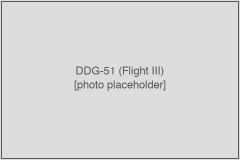
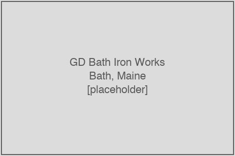
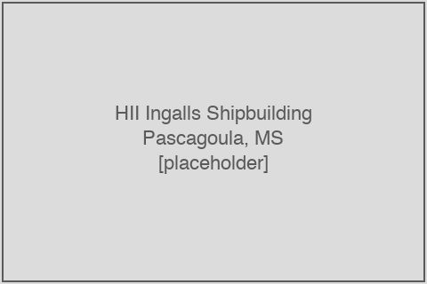
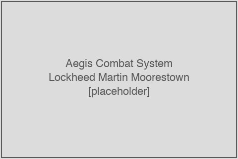
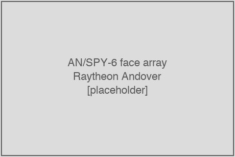
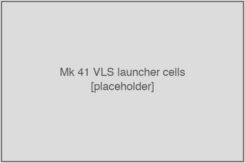
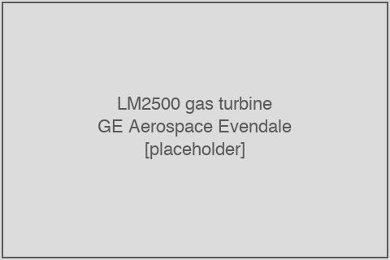

Outsourced work on U.S. Arleigh Burke-class destroyer construction
This article describes the structure and visible dollar flow of work that the U.S. Navy's two destroyer-class shipbuilders — General Dynamics Bath Iron Works and Huntington Ingalls Industries Ingalls Shipbuilding — outsource to other firms during construction of Arleigh Burke-class (DDG-51) guided-missile destroyers, plus the government-furnished combat-system, radar, propulsion, and weapons content that the Navy procures from separate prime contractors and ships to the assembling yards for installation. For the ship class itself, including operational and design history, see Arleigh Burke-class destroyer.
 An Arleigh Burke-class Flight III guided-missile destroyer under construction (placeholder — image to be sourced). | |
| Two-yard competitive procurement decomposition of DDG-51 new-construction spending | |
| Scope | Arleigh Burke (DDG-51) Flight IIA and Flight III new construction, FY2018–FY2027 |
|---|---|
| Prime yard #1 | General Dynamics Bath Iron Works (Bath, ME; Brunswick, ME) |
| Prime yard #2 | Huntington Ingalls Industries Ingalls Shipbuilding (Pascagoula, MS) |
| Aegis Combat System GFE prime | Lockheed Martin (Moorestown, NJ) |
| AN/SPY-6(V)1 radar GFE prime | Raytheon, an RTX business (Andover, MA) |
| Mk 41 Vertical Launching System GFE prime | Lockheed Martin |
| Mk 45 5-inch gun GFE prime | BAE Systems Land & Armaments (Louisville, KY; Minneapolis, MN) |
| LM2500 propulsion turbine GFE prime | General Electric / GE Aerospace (Evendale, OH; Lynn, MA) |
| AN/SLQ-32 SEWIP GFE prime | Northrop Grumman Systems Corporation |
| Mk 15 Phalanx CIWS GFE prime | Raytheon |
| Per-ship Total Ship Estimate (recent vintages) | ~$2.7B/ship (FY2024 two-ship buy: $5,492M / 2 ships) |
| DoD-announcement outside-both-yards share (Jul 2022 – May 2026, supplier-TAM-relevant DDG-51 actions) | ~87% of $7.13B |
| DoD-announcement BIW-site share (same window) | 11.2% |
| DoD-announcement Ingalls-site share (same window) | 1.3% |
| FFATA-visible first-tier subawards on the in-scope new-construction PIID set (FY2002–FY2026 action date) | $13.8B cumulative, 1,954 unique parent vendors |
| FY23–FY27 DDG-51 multiyear master awards dollar value | Source-selection sensitive (FAR 2.101 / 3.104) — redacted in DoD bulletins, reported in trade press at ~$14.58B combined |
| Estimated yard-side first-tier outsourcing flow, both yards combined | ~$1.8B/yr (HII-Ingalls ~$0.69B, GD-BIW ~$1.13B; range $1.4–2.2B/yr) |
| HII guidance, outsourcing hours growth | +100% in 2025, +30% in 2026 (official guidance, Q4 2025 / Q1 2026) |
| Navy distributed-shipbuilding target | 10% → 50% (May 2026 30-Year Shipbuilding Plan) |
| As of | May 2026 |
Outsourced destroyer work is the portion of the United States Navy's Shipbuilding and Conversion (SCN) appropriation for Arleigh Burke-class (DDG-51) Flight IIA and Flight III destroyers that is performed by firms other than the two assembling shipyards — General Dynamics Bath Iron Works (GD-BIW), in Bath, Maine, and Huntington Ingalls Industries Ingalls Shipbuilding (HII-Ingalls), in Pascagoula, Mississippi. It encompasses (1) the first-tier subcontracts that each yard issues against its prime construction contract for hull material, mechanical and electrical components, outfitting, and labor, (2) the government-furnished equipment (GFE) that the Navy procures from separate prime contractors — most importantly Lockheed Martin for the Aegis Combat System and the Mk 41 Vertical Launching System, Raytheon for the AN/SPY-6(V)1 radar and the Mk 15 Phalanx Close-In Weapon System, General Electric for the LM2500 main propulsion turbines, BAE Systems for the Mk 45 5-inch gun, and Northrop Grumman for the AN/SLQ-32 SEWIP electronic-warfare suite — and ships to the assembling yards for installation, and (3) the lead-yard support, planning yard, and design-agent engineering services that one or both yards self-perform under separate engineering contracts.
This article is organized around the destroyer program's two structural features that distinguish it from the parallel U.S. submarine new-construction analysis: a two-yard competitive procurement in which both BIW and Ingalls are prime of record on separate per-ship and per-multiyear-block contracts (rather than a single-prime teaming arrangement), and an unusually GFE-heavy outsourced layer in which the Aegis and SPY-6 government-furnished subsystems alone account for roughly $5.0 billion of the $7.13 billion of supplier-targeted contract value observed in Department of Defense daily contract announcements over a recent 34-month window. The article uses DoD daily contract action announcements — which state explicit percentage breakdowns of where each action's work is performed — as the most direct primary-source measurement of outsourced share, supplemented by Federal Funding Accountability and Transparency Act (FFATA) first-tier subaward data pulled from the U.S. General Services Administration's SAM.gov portal and the U.S. Treasury's USAspending.gov portal.
The headline findings are that approximately 87 percent of dollar-weighted place-of-performance on the 152 supplier-targeted-equipment-market (TAM) -relevant DDG-51 contract actions during the July 2022 to May 2026 window — a $7.13 billion corpus — flows to firms located outside both destroyer shipyards, with 11.2 percent of place-of-performance at BIW-controlled sites (Bath, Maine, and the Brunswick, Maine annex), 1.3 percent at the HII-Ingalls Pascagoula yard, 73.6 percent at U.S. supplier cities outside the two yards, and approximately zero percent at foreign locations. The bulk of the outside-yard concentration sits in two government-furnished cities — Lockheed Martin's Moorestown, New Jersey, Aegis facility and Raytheon's Andover, Massachusetts, SPY-6 facility. A second, structurally distinct outsourcing flow occurs inside each yard's prime contract scope: triangulated against Huntington Ingalls Industries' 10-K segment disclosures and FY2024 employment, the two yards combined are estimated to spend on the order of $1.8 billion per year on yard-side first-tier materials and subcontracts against DDG production, of which only roughly $286 million per year is visible in the FFATA first-tier reporting stream — implying that FFATA captures approximately 15 percent of the real yard-outsourcing flow. The trajectory is unambiguous: Huntington Ingalls publicly reported in early 2026 that its 2025 outsourcing hours doubled year-over-year and guided to an additional 30 percent increase in 2026 under its declared "distributed shipbuilding strategy," and the U.S. Navy's May 2026 30-Year Shipbuilding Plan sets a formal target to increase the share of Navy shipbuilding occurring at distributed sites from approximately 10 percent today to approximately 50 percent.
Scope and the funnel framework
This article uses a cost-funnel decomposition of the U.S. Navy's Shipbuilding and Conversion (SCN) appropriation for Arleigh Burke-class (DDG-51) destroyers to organize the question of how much destroyer new-construction value is performed by firms other than the two assembling shipyards. The funnel starts at the per-fiscal-year per-class top-line cost of the ship and descends through the budget-justification cost categories (Plan Costs, Government-Furnished Equipment, Other Cost, and Basic Construction), and then descends one further layer into Basic Construction itself, separating the share that each prime shipyard self-performs from the share it outsources to the broader supplier base. The outsourced layer within Basic Construction, plus the GFE layer in its entirety, is the principal object of the article; everything else in the funnel exists to size, contextualize, or qualify it.
This chapter defines the terminology, sets the scope window and the in-scope prime-contract identifiers, lays out the funnel structure, notes the dollar-bucketing conventions used throughout, and identifies the categories of destroyer-related work that are deliberately excluded from the scope of this article.
The two-yard competitive structure
A reader coming to this article from the companion submarine analysis will notice an immediate structural difference: where the Virginia and Columbia submarine programs are organized around a single prime of record (General Dynamics Electric Boat) with Huntington Ingalls Newport News Shipbuilding as an invisible team-build partner under GDEB's prime contract, the DDG-51 program is organized around a two-yard competitive procurement in which both shipyards hold direct prime contracts with the U.S. Navy:
| Prime yard | Subsidiary parent | Primary location | Role |
|---|---|---|---|
| General Dynamics Bath Iron Works (GD-BIW) | General Dynamics Corporation, Marine Systems segment | Bath, Maine (with annex at Brunswick, Maine) | One of two DDG-51 prime yards; sole DDG-1000 / Zumwalt prime; DDG-51 class Design Agent |
| Huntington Ingalls Industries Ingalls Shipbuilding (HII-Ingalls) | Huntington Ingalls Industries, Inc., Ingalls Shipbuilding segment | Pascagoula, Mississippi | One of two DDG-51 prime yards; also builds the LPD-17 and LHA-8 amphibious programs and the U.S. Coast Guard National Security Cutter and Polar Security Cutter programs |
Each individual DDG-51 hull is awarded to one yard or the other on its own prime contract, and the multi-year procurement (MYP) blocks since FY18 have been structured as two parallel prime contracts — one per yard — rather than as a single umbrella prime with a teaming subcontract.1 This has two analytical consequences:
- No "invisible team-build partner" wrinkle. What appears in FPDS as the vendor of record on each DDG-51 prime contract is in fact the yard performing the work. The submarine project's chapter on "the HII Newport News visibility gap" — quantifying the share of submarine value that flows through the GDEB prime to HII-NNS as a structurally invisible team-build subcontract — has no parallel in the destroyer program. Instead, each yard's first-tier subaward tree is independently visible in FFATA against its own prime PIIDs.
- A new categorical caveat: source-selection redaction. The two-yard competitive procurement format triggers, under 41 U.S. Code § 2101 et seq. and Federal Acquisition Regulation (FAR) §§ 2.101 and 3.104, the designation of the multiyear master award dollar values as source-selection sensitive information that "will not be made public at this time." This is discussed in chapter 12. For now, it is enough to note that the FY23-27 DDG-51 multiyear master awards (BIW PIID
N00024-23-C-2305and Ingalls PIIDN00024-23-C-2307, both awarded in August 2023) appear in DoD daily contract announcement bulletins with explicit place-of-performance percentage breakdowns but with their dollar values redacted, while the same paragraphs in the submarine-program bulletins (which use a single-prime structure) disclose the dollar values.
"Outsourced"
For the purposes of this article, outsourced describes any dollar of the SCN destroyer new-construction appropriation that ultimately flows to a firm other than the prime shipyard's own labor and overhead. Three categories are in scope:
- First-tier subcontracts and lower-tier subcontracts — work that a prime yard hires another firm to perform under the yard's own contract. First-tier subcontracts above the FFATA reporting threshold (currently $30,000 per action) are reportable to the FFATA Subaward Reporting System (FSRS), accessed via SAM.gov, under FAR 52.204-10. Lower-tier subcontracts (a subcontract of a subcontract) are not reportable; FFATA only reaches one tier below the prime.2
- Government-furnished equipment (GFE) — major equipment that the U.S. government procures from a separate prime contractor and ships to the assembling yard for installation in the hull. From the perspective of destroyer production, the dollars are outsourced from the SCN appropriation perspective, even though they do not appear as subawards of the assembling yard. Aegis Combat System (Lockheed Martin Moorestown), AN/SPY-6(V)1 radar (Raytheon Andover), Mk 41 Vertical Launching System (Lockheed Martin), Mk 45 5-inch gun (BAE Systems), LM2500 main propulsion turbines (GE Aerospace), AN/SLQ-32 SEWIP (Northrop Grumman), and Mk 15 Phalanx CIWS (Raytheon) are all GFE.4
- Plan Costs, lead-yard support, and class-design engineering — engineering services performed by Bath Iron Works in its role as DDG-51 class Design Agent, plus separate planning-yard and lead-yard-support contracts that the Navy uses for sustained class-design work between procurement blocks.
The article does not treat as "outsourced":
- Federal naval shipyard work at Norfolk Naval Shipyard (Virginia), Portsmouth Naval Shipyard (Maine), Pearl Harbor Naval Shipyard & Intermediate Maintenance Facility (Hawaii), and Puget Sound Naval Shipyard & Intermediate Maintenance Facility (Washington). These yards perform depot maintenance and engineered overhauls on Navy surface combatants, but they are federal facilities staffed by federal employees; their work is funded as federal payroll, not as outsourced contract activity.
- Federal employee labor at NAVSEA, PEO Ships, or the Aegis Technical Representative office. Government program-office labor is not part of the outsourced flow.
- Ship-repair and depot maintenance work at private yards other than BIW or Ingalls — including BAE San Diego Ship Repair, BAE Jacksonville Ship Repair, BAE Norfolk Ship Repair, and BAE Southeast Shipyards Mayport. This work is in-scope for destroyer sustainment but out-of-scope for destroyer new construction, which is what this article addresses.
- Standard Missile, ESSM, Tomahawk, and CIWS production and procurement funded under the Weapons Procurement (WPN) and Other Procurement (OPN) appropriations rather than SCN. These weapons are loaded aboard destroyers but they are paid for from a different appropriation; including them would double-count against a different budget line. They are tagged
ddg_gfe_weaponsin the underlying classification and excluded from the headline TAM (target addressable market) gate by default. - Out-of-class destroyer work — the Zumwalt-class (DDG-1000) program, which closed at three ships, all delivered. The remaining DDG-1000 flows are OPN-funded modernization (Conventional Prompt Strike installation on DDG 1002 and follow-on upgrades) rather than SCN new construction; see further discussion below.
The Zumwalt (DDG-1000) exclusion
The Zumwalt-class (DDG-1000) is excluded from the headline scope of this article. Three ships were procured under SCN Line Item 2119 — DDG 1000 Zumwalt, DDG 1001 Michael Monsoor, and DDG 1002 Lyndon B. Johnson — and all three have been delivered. No further Zumwalt-class procurements are scheduled. Remaining work on the class flows through OPN-funded modernization contracts (most prominently the Conventional Prompt Strike installation on DDG 1002, a hypersonic-weapon-system retrofit) rather than SCN new-construction contracts.
The underlying classified dataset retains a separate ddg1000 program tag and a ddg_repair work-type tag for completeness, but the headline TAM gate (is_ddg_new_construction_tam == 'yes') excludes both. A reader interested in the full destroyer-class outsourcing flow including the Zumwalt-class remainder and the DDG-51 depot-sustainment stream — approximately $2.0 billion of ddg_repair actions across 23 records, plus a residual Zumwalt modernization flow — would need to relax the TAM gate, but doing so admits substantial methodological noise (LPD-17, LHA-8, Polar Security Cutter, and amphibious-warship maintenance at the same Pascagoula and San Diego facilities) and is not pursued here.
"Subaward" and the FFATA reporting threshold
A first-tier subaward in this article means a subcontract reported under the Federal Funding Accountability and Transparency Act of 2006 (FFATA) via FAR clause 52.204-10. The reporting threshold is currently subcontract actions above $30,000, and the clause defines reportable first-tier subcontracts as direct contractor subcontracts for performance of a prime contract.2 Filings flow into the FFATA Subaward Reporting System (FSRS) and are accessible via SAM.gov.
Several categories are excluded from the FFATA first-tier definition:
- Long-term supplier agreements, blanket purchase agreements, and indefinite-delivery / indefinite-quantity supplier agreements that are not direct prime-contract subcontracts.
- Indirect and general-and-administrative (G&A) items.
- Lower-tier subcontracts beneath the FFATA first tier (a sub of a sub is not reportable to FSRS under this clause).
- Standing supply or material agreements that pre-exist the prime contract and are not subordinated to it.
Beyond these definitional exclusions, FFATA compliance is uneven across the federal supplier base. The gap between the FFATA-visible first-tier subaward stream and the actual yard-side outsourcing flow is the principal subject of chapter 9. The U.S. Government Accountability Office has separately found that "two of the shipbuilders we spoke with are already outsourcing work that would normally be done at their shipyards to their suppliers to overcome constrained physical space, with plans to expand the volume of material they are outsourcing" — a finding directly relevant to the gap between FFATA-visible subawards and the actual outsourced layer, as discussed in chapter 14.3
"GFP," "GFE," and "CFE"
The formal Federal Acquisition Regulation umbrella term is Government-Furnished Property (GFP), defined under FAR Part 45 and contract clause FAR 52.245-1 as property in the possession of, or directly acquired by, the U.S. government and subsequently furnished to the contractor for performance of a contract.4 Government-Furnished Equipment (GFE) is the most commonly used label, particularly for major equipment-type GFP such as the Aegis Combat System, the AN/SPY-6 radar, and the LM2500 main propulsion turbines on a destroyer. The broader GFP category may also include government-furnished material, tooling, test equipment, information, and facilities; this article uses GFE in its narrow equipment sense throughout.
Contractor-furnished equipment (CFE) is equipment procured by the prime yard under its own contract and incorporated into the deliverable. For destroyer construction, the GFE / CFE allocation by major category is approximately:
| Category | Allocation | Examples |
|---|---|---|
| Combat system / electronics | GFE (overwhelmingly) | Aegis Combat System, AN/SPY-6 radar, Mk 41 VLS, AN/SLQ-32 SEWIP, AN/USG-2B/-3B CEC |
| Ordnance | GFE | Mk 45 5-inch gun, Mk 38 25mm gun, CIWS, VLS canisters |
| Propulsion | GFE | LM2500 gas turbines (four per ship), main reduction gears |
| Hull, mechanical, electrical (HM&E) | CFE | Hull steel, piping, ventilation, electrical systems, outfitting |
| Plan Costs | CFE / lead yard | Class design, planning yard support |
The GFE / CFE classification of a specific item is determined by the underlying contract and budget cycle, not by the item's intrinsic identity, and can change between budget cycles as Navy program-management arrangements evolve.
The cost funnel
The funnel is the analytical spine of the article. At each level it cuts from the total figure to the addressable subset:
TOTAL SHIP COST (per-class per-FY, from SCN P-5c Total Ship Estimate)
│
├── PLAN COSTS engineering, detail design, T&E, config mgmt;
│ Bath Iron Works in class Design Agent role
│
├── GOVERNMENT-FURNISHED EQUIPMENT Navy procures separately, ships to yard:
│ ├── Aegis Combat System (Lockheed Martin, Moorestown NJ)
│ ├── AN/SPY-6 radar (Raytheon, Andover MA)
│ ├── Mk 41 VLS (Lockheed Martin)
│ ├── Mk 45 5-inch gun (BAE Systems Land & Armaments)
│ ├── LM2500 propulsion (GE Aerospace, Evendale OH)
│ ├── AN/SLQ-32 SEWIP (Northrop Grumman)
│ ├── Mk 15 Phalanx CIWS (Raytheon)
│ └── Other electronics (L3Harris, DRS, NG, GD Mission Systems)
│
├── CHANGE ORDERS / OTHER ECPs, block mods, reserves
│
└── BASIC CONSTRUCTION the prime contract base — the dollars
│ that flow to BIW or Ingalls on the SCN PIID
│
├── YARD SELF-PERFORMED labor + overhead at Bath / Pascagoula
│
└── OUTSOURCED WITHIN BC one of the principal objects of this article
│
├── FFATA-visible first-tier subawards reported under
│ FAR 52.204-10, published in SAM.gov FSRS
│
└── UNSEEN LAYER ── beyond direct visibility:
├── Purchased material booked as direct material
├── Lower-tier subs (a sub's sub — not reportable)
├── FFATA non-compliance / under-reporting
└── Long tail under the $30,000 threshold
A complete answer to "how much of the destroyer's cost is outsourced" requires a denominator statement: outsourced relative to what? The funnel makes four candidate denominators visible.
Four denominators of "outsourced"
The choice of denominator is the choice of question. The article reports against each of them where the data supports it, and is explicit about which is being used at every point.
- Outsourced from the prime yard — the share of each yard's own prime construction contract that the yard pays to other firms. The numerator is the yard's first-tier subaward tree under FAR 52.204-10, plus the larger unseen subset of the yard's purchased material and lower-tier subcontracting that is not captured under that clause. GFE primes (Lockheed Martin, Raytheon, GE, BAE for Mk 45) are not outsourced from the yard — the yard does not pay them; the Navy does, on a separate prime contract.
- Outsourced from the Navy / SCN perspective — the share of the SCN appropriation that flows to firms other than the two assembling shipyards. This adds the GFE-prime flows to each yard's subaward tree. It is closest to the denominator the Navy's 30-Year Shipbuilding Plan implicitly uses when it discusses "distributed shipbuilding" and "outsourcing partners."9
- Outside-the-yards — measured directly per contract action from the U.S. Department of Defense daily contract-announcement press releases, which state explicit percentage breakdowns of where each action's work will be performed. This is the most direct primary-source measurement because it does not depend on accounting categorization at all; the announcement names the cities and the percentages. See DoD contract announcement data. The headline 87-percent-outside-yards figure is computed against this denominator.
- Private-sector work outside the assembling yards — any private-firm work not performed inside Bath, Maine (or the BIW Brunswick annex) or Pascagoula, Mississippi. This includes everything in (1) and (2), plus federally funded research and development center (FFRDC) and Department of Defense laboratory work funded outside SCN.
This article emphasizes denominators (2) and (3) in the headlines, and reports (1) explicitly throughout. Denominator (4) is discussed in The MYP redaction and the unseen layer but not aggregated.
Scope: window, classes, and the in-scope PIID set
The article uses a fiscal-year 2018 through fiscal-year 2027 signed-date window for FPDS prime-contract data and a fiscal-year 2002 through fiscal-year 2026 action-date window for FFATA subaward data, where the wider subaward window captures pre-FY2018 actions on still-active master construction contracts. The article's primary substantive coverage is FY2020 forward, where the Justification Book data is complete; FY2018–FY2019 is included as a comparison baseline. The window was chosen to capture the FY18-22 multiyear master awards (DDGs 122–134, awarded September 2018), the FY23-27 multiyear master awards (DDGs 140–150, awarded August 2023), and the annual option-exercise structure that the program has used between MYP blocks.
The article scopes the outsourced-flow analysis to the in-scope DDG-51 new-construction PIID set maintained at extracted/nc_scope_summary.json. The set was derived by FPDS-search discovery — vendor-name and DDG-class description sweeps against the Navy contracting agency — followed by manual review and classification by program family and class. The set captures the two assembling yards (BIW and Ingalls), the major GFE primes (Lockheed Martin Aegis, Raytheon SPY-6 plus CIWS plus ESSM, GE LM2500, BAE Mk 45 and VLS canisters, Northrop Grumman SEWIP, DRS / Leonardo combat systems, GD Mission Systems, L3Harris CEC), and the smaller engineering and lead-yard-support PIIDs.
A summary of the in-scope set:
- 89 prime PIIDs discovered and pulled through SAM.gov subaward reporting
- 22,235 in-scope records kept after the new-construction classification pass
- $13.8 billion cumulative subaward dollar value across the in-scope PIID set, FY2002 through FY2026 action date
- 1,954 unique parent vendor UEIs observed as recipients across the in-scope subaward stream
The PIID set is keyed by group as follows (counts of PIIDs per group):
| Group | PIIDs | Examples |
|---|---|---|
| GD-BIW | 17 | N00024-23-C-2305 (FY23-27 MYP master), N00024-18-C-2305, N00024-13-C-2305 |
| HII-Ingalls | 9 | N00024-23-C-2307 (FY23-27 MYP master), N00024-18-C-2307, N00024-13-C-2307 |
| LM-Aegis | 15 | N00024-13-C-5116 (Aegis CSEA), N00024-20-C-5310 (Mk 41 VLS), N00024-14-C-5114 (Aegis Hardware) |
| Raytheon | 14 | N00024-22-C-5500 (SPY-6 FLT III), N00024-18-C-5406 (CIWS), N00024-21-C-5408 (ESSM) |
| BAE-Guns/VLS | 15 | N00024-19-C-0004 (Mk 45 production via SPAWAR), N00024-20-C-5380 (Mk 25 canisters), N00024-13-C-5314 (Mk 21 canisters) |
| DRS / Leonardo combat systems | 5 | N00024-20-C-5605, N00024-15-C-5228 (USG-3B CEC) |
| GE-Propulsion | 9 | N00019-11-C-0045, N00019-23-C-0013, N00019-18-C-1007 (LM2500) |
| Northrop Grumman | 2 | N00024-20-C-5519 (SEWIP Block 3), N00024-15-C-5319 (SEWIP EMD) |
| GD Mission Systems | 2 | N00024-04-C-6205, M67854-17-C-0261 |
The full PIID list with labels is preserved in extracted/nc_scope_summary.json in the project repository.
The article scope explicitly does not include:
- DDG-1000 / Zumwalt-class new construction (closed program; OPN-funded modernization only)
- Cruiser (CG) modernization and depot maintenance (separate appropriation; ship-class out of scope)
- Frigate (FF) / Constellation-class new construction (separate Fincantieri-Marinette prime; future article)
- Amphibious warship (LPD-17, LHA-8) new construction at Ingalls (separate SCN line items, shared Pascagoula labor force but distinct prime contracts)
- National Security Cutter / Polar Security Cutter at Ingalls (Coast Guard appropriation, not SCN)
Dollar-bucketing conventions
Throughout the article, dollar figures follow these conventions unless explicitly noted otherwise:
- FPDS prime obligations: per-modification
obligatedAmountsummed bysigned_datefiscal year. The cumulativetotalObligatedAmountfield from the FPDS Atom feed is not used as a window measurement because it represents the lifetime running total at the time of each modification, not the new dollars added by that modification. - FFATA subaward values: as reported in SAM.gov FSRS, summed by
action_datefiscal year. Deduplication is bysubAwardReportId(SAM.gov assigns one unique identifier per published subaward action); duplicate IDs were not observed across the 24,559-record in-scope subaward pull. - DoD announcement values: as reported in the bulletin paragraph. Source-selection-redacted values appear with empty
amount_usdin the structured CSV and are excluded from dollar-weighted aggregations; their place-of-performance percentages are retained for separate analysis. - Currency: U.S. dollars (USD), then-year (nominal) unless explicitly indexed to a base year.
- Time horizons: "Lifetime" means cumulative over the FY2002–FY2026 subaward window. "Annual" means a single fiscal year. "Window" means the FY2018–FY2027 signed-date window for primes and FY2016–FY2026 action-date window for subawards, unless a different window is specified.
Total ship cost and the DDG-51 production line
This chapter establishes the top-line of the funnel: how much each DDG-51 destroyer costs in then-year U.S. dollars, how those per-ship costs aggregate to the per-fiscal-year per-class top-line in the Navy's Shipbuilding and Conversion (SCN) appropriation, and how the DDG-51 production line is structured across the two assembling yards through fiscal year 2031. Every subsequent funnel layer (Plan Costs, GFE, Other, Basic Construction, and the outsourced share within Basic Construction) is reported as a share of this top-line. The numbers reported here come from the Navy's annual SCN Justification Books, cross-validated against the Congressional Research Service's published per-ship cost figures.
How total ship cost is reported
The U.S. Department of the Navy reports per-ship cost for the DDG-51 program in Exhibit P-5c of the SCN Justification Book, under SCN Line Item 2122 (DDG-51 Class Destroyer, P-1 Line #13). Each P-5c row maps one fiscal year to the total per-ship procurement cost broken into cost categories: Plan Costs (engineering and design), Basic Construction/Conversion (the prime construction contract base), Change Orders (engineering change proposals and post-award modifications), Electronics (combat system electronics including Aegis hardware and SPY-6 radar), Hull-Mechanical-Electrical (HM&E components — first appears as a distinct line in the FY24 vintage), Ordnance (gun systems, VLS modules, missile launcher hardware — excluding the missiles themselves, which are WPN-funded), Other Cost, and a Total Ship Estimate line that sums them.5
The companion Exhibit P-40 (Budget Line Item Justification) reports the per-fiscal-year top-line aggregate across all ships in that year's procurement: gross weapon system cost, advance-procurement carve-outs, Economic Order Quantity (EOQ) carve-outs, hurricane recovery, and the Net Procurement (P-1) figure that flows into the appropriation request. Exhibit P-21 (Production Quantities) and Exhibit P-27 (Ship Production Schedule) report the per-ship hull assignments, multiyear-block structure, award dates, construction start dates, and delivery dates.
Per-ship Total Ship Estimate (recent vintages)
From the FY2027 SCN Justification Book, the per-ship Total Ship Estimate values for the recent procurement years are:
| FY of procurement | Ships funded | Yard assignment(s) | Total Ship Estimate ($M) | Per-ship ($M) |
|---|---|---|---|---|
| FY2016 | 2 | BIW, Ingalls | 5,043.6 | 2,521.8 |
| FY2017 | 2 | BIW, Ingalls | 3,856.9 | 1,928.4 |
| FY2018 | 2 | BIW, Ingalls | 3,644.6 | 1,822.3 |
| FY2019 | 3 | BIW, Ingalls, BIW | 5,767.9 | 1,922.6 |
| FY2020 | 3 | BIW, Ingalls, Ingalls | 5,659.7 | 1,886.6 |
| FY2021 | 2 | BIW, Ingalls | 4,205.6 | 2,102.8 |
| FY2022 | 2 | BIW, Ingalls | 4,072.9 | 2,036.4 |
| FY2023 | 3 | BIW, Ingalls, Ingalls | 7,949.5 | 2,649.8 |
| FY2024 | 2 | Ingalls, BIW | 5,492.3 | 2,746.2 |
| FY2025 | 3 | Ingalls, Ingalls, BIW | 7,858.8 | 2,619.6 |
| FY2026 | 0 (AP only) | — | 306.1 | — (AP only) |
| FY2027 | 1 | Ingalls | 4,256.9 | 4,256.9 |
The headline trend is clear: per-ship Total Ship Estimate has risen from approximately $1.8–$1.9 billion per hull in the FY2018–FY2022 single-year and FY18-22 multiyear procurements to approximately $2.6–$2.8 billion per hull under the FY23-27 multiyear and the FY24 single-year buy, with the FY27 single-ship request at approximately $4.26 billion (reflecting per-ship Flight III content escalation, a lower quantity-discount basis, and ordinary inflation).5
The cost-category decomposition for the FY24 buy (a representative recent two-ship year) is:
| Cost Category | FY24 value ($M, both ships) | Share of Total Ship Estimate |
|---|---|---|
| Plan Costs | 82.7 | 1.5% |
| Basic Construction/Conversion | 3,322.5 | 60.5% |
| Change Orders | 91.6 | 1.7% |
| Electronics | 619.8 | 11.3% |
| Hull, Mechanical, and Electrical (HM&E) | 100.7 | 1.8% |
| Ordnance | 1,187.5 | 21.6% |
| Other Cost | 87.7 | 1.6% |
| Total Ship Estimate | 5,492.3 | 100.0% |
Two structural observations:
- Basic Construction is approximately 60% of total ship cost — meaningfully lower than the 56–80% band observed for nuclear submarines. The remainder is dominated by Electronics (11.3%) and Ordnance (21.6%), which together account for nearly a third of the ship's cost and which are overwhelmingly GFE.5
- Plan Costs are small (1.5%) because BIW already holds a separate class Design Agent contract under which most engineering work is performed; the per-ship Plan Costs line picks up only the incremental class-design work attributable to that specific ship.
Per-class per-fiscal-year top-line (SCN P-40)
The SCN Line Item 2122 P-40 exhibit summarizes the appropriation flow. Procurement Quantity (the count of ships funded in each year's appropriation) and Gross/Weapon System Cost ($M) for recent and forward vintages from the FY27 Justification Book are:
| FY | Quantity | Gross/Weapon System Cost ($M) | Net Procurement (P-1) ($M) |
|---|---|---|---|
| Prior years (cumulative) | 94 | 117,822.9 | 106,913.5 |
| FY2025 | 3 | 7,858.8 | 6,268.5 |
| FY2026 (estimate) | 0 (AP only) | 306.1 | 10.8 |
| FY2027 base | 1 | 4,256.9 | 2,954.2 |
| FY2027 OOC | 0 | 0 | 0 |
| FY2027 total | 1 | 4,256.9 | 2,954.2 |
| FY2028 | 1 | 4,026.2 | 4,026.2 |
| FY2029 | 1 | 4,209.4 | 3,707.2 |
| FY2030 | 2 | 6,613.2 | 6,110.9 |
| FY2031 | 2 | 6,964.2 | 6,461.9 |
| To Complete | 3 | 15,080.8 | 14,079.7 |
| Total (cumulative through plan) | 107 | 167,138.6 | 150,532.9 |
The FY2027 budget request books 1 ship in the base column. The reduction from the FY2025 three-ship procurement to the FY2027 one-ship request reflects the program's transition from the FY23-27 multiyear block (which front-loaded ships into the FY23–FY25 fiscal years) to the post-MYP single-year procurement structure for FY27.
The "Prior years" cumulative figure represents 94 ships across the DDG-51 program's history (from DDG 51 Arleigh Burke commissioned in 1991 through the FY24 buy). The "To Complete" line carries an additional 3 ships and approximately $15.1 billion of cost into the post-FY31 outyears.
The DDG-51 production line — DDGs 127 through 156
The thirty most recent DDG-51 hulls (DDGs 127 through 156) are mapped to BIW or Ingalls by the SCN Line Item 2122 P-27 production schedule. The mapping for the in-scope window:
| Hull | Shipbuilder | Procurement FY | Contract Award | Construction Start | Delivery Date |
|---|---|---|---|---|---|
| DDG 127 Patrick Gallagher | Bath Iron Works | FY16 | Sep 2017 | Apr 2019 | Sep 2026 |
| DDG 126 Louis H. Wilson Jr. | Bath Iron Works | FY17 | Jun 2013 | Mar 2020 | Sep 2027 |
| DDG 129 Jeremiah Denton | Ingalls Shipbuilding | FY18 | Sep 2018 | Jan 2021 | Aug 2027 |
| DDG 130 William Charette | Bath Iron Works | FY19 | Sep 2018 | May 2021 | Nov 2028 |
| DDG 131 George M. Neal | Ingalls Shipbuilding | FY19 | Sep 2018 | Nov 2021 | Nov 2028 |
| DDG 132 Quentin Walsh | Bath Iron Works | FY19 | Dec 2018 | Feb 2022 | Sep 2029 |
| DDG 133 Sam Nunn | Ingalls Shipbuilding | FY20 | Sep 2018 | Dec 2022 | Feb 2030 |
| DDG 134 John E. Kilmer | Bath Iron Works | FY20 | Sep 2018 | Nov 2023 | Oct 2030 |
| DDG 135 Thad Cochran | Ingalls Shipbuilding | FY20 | Jun 2020 | Nov 2023 | Feb 2031 |
| DDG 136 Richard G. Lugar | Bath Iron Works | FY21 | Sep 2018 | Apr 2024 | Jun 2031 |
| DDG 137 John F. Lehman | Ingalls Shipbuilding | FY21 | Sep 2018 | Mar 2026 | Feb 2032 |
| DDG 138 Tulsi Gabbard | Bath Iron Works | FY22 | Sep 2018 | Mar 2025 | Oct 2032 |
| DDG 139 Telesforo Trinidad | Ingalls Shipbuilding | FY22 | Sep 2018 | Sep 2027 | Aug 2033 |
| DDG 140 (unnamed) | Bath Iron Works | FY23 | Aug 2023 | Jul 2026 | Dec 2033 |
| DDG 141 (unnamed) | Ingalls Shipbuilding | FY23 | Aug 2023 | Sep 2028 | Aug 2034 |
| DDG 142 (unnamed) | Ingalls Shipbuilding | FY23 | Aug 2023 | Sep 2029 | Aug 2035 |
| DDG 143 (unnamed) | Ingalls Shipbuilding | FY24 | Aug 2023 | Sep 2030 | Aug 2036 |
| DDG 144 (unnamed) | Bath Iron Works | FY24 | Aug 2023 | Aug 2027 | Jan 2035 |
| DDG 145 (unnamed) | Ingalls Shipbuilding | FY25 | Aug 2023 | Sep 2031 | Aug 2037 |
| DDG 146 (unnamed) | Ingalls Shipbuilding | FY25 | Aug 2023 | Sep 2032 | Aug 2038 |
| DDG 148 (unnamed) | Bath Iron Works | FY25 | Jul 2025 | Aug 2028 | Nov 2035 |
| DDG 147 (unnamed) | Ingalls Shipbuilding | FY26 | Aug 2023 | Sep 2033 | Aug 2039 |
| DDG 149 (unnamed) | Bath Iron Works | FY26 | Aug 2023 | Aug 2029 | Sep 2036 |
| DDG 150 (unnamed) | Ingalls Shipbuilding | FY27 | Aug 2023 | Sep 2034 | Aug 2040 |
| DDG 151–156 (six hulls) | TBD | FY28–FY31 | Sep 2028 (planned) | Aug 2036–Aug 2039 | Aug 2041–Aug 2044 |
Three observations on the production line structure:
- The FY18-22 multiyear block was awarded on September 26, 2018 as a single calendar-day award announcement covering DDGs 129–134 plus DDG 136 plus DDG 137 plus DDG 138 plus DDG 139. The DoD daily contract announcement for that date discloses the dollar values for the FY18-22 multiyear — making it methodologically distinct from the FY23-27 multiyear, whose dollar values are source-selection redacted. Unfortunately the September 2018 bulletin predates the destroyer-corpus 2022–2026 coverage window (see chapter 16 §16.3 on Wayback Machine coverage gaps), so it is not in the corpus.
- The FY23-27 multiyear master awards were signed August 1, 2023 (BIW, war.gov article 3479250) and August 11, 2023 (Ingalls, war.gov article 3491276). These are the two anchor cases of the DoD-announcement corpus and are discussed in detail in chapters 4 and 12.
- The alternating-yard assignment is not strict alternation. Across DDGs 127–150, BIW receives 11 hulls (45 percent) and Ingalls receives 13 hulls (54 percent). The slight Ingalls weighting reflects the Pascagoula yard's larger labor force and parallel work on the LPD-17 and LHA-8 amphibious programs that smooth its production loading.
Multi-vintage reconciliation
A persistent feature of SCN Justification Book reporting is that the same target fiscal year shows different values across successive years' Justification Books. The convention used in this article is the most-recent-vintage-as-actual rule: for any historical fiscal year, the article uses the value from the most recent Justification Book that shows that year as a settled actual rather than a forward estimate. For example, FY2024 is reported using the FY26 Justification Book value (the first vintage to show FY24 as a settled actual) rather than the FY24 Justification Book's then-forward estimate. This rule is applied silently throughout the article; deviations are flagged inline.
The FY27 Justification Book is the primary source for all forward-vintage values in this article (FY25 estimate, FY26 estimate, FY27 base, FY27 OOC, FY28–FY31 outyears, To Complete, and Total).
Cross-validation against Congressional Research Service
The Congressional Research Service publishes recurring background reports on the DDG-51 program (RL32109, Navy DDG-51 and DDG-1000 Destroyer Programs) that include per-ship cost figures cross-referenced against the SCN Justification Books. The most recent CRS edition's per-ship figures are consistent with the Justification Book values to within rounding, providing an independent cross-check.6 Quotation of specific CRS-reported per-ship values is omitted here because the article emphasizes primary-source Justification Book reporting, but a reader who wants an independent dollar number on each procurement year's per-ship cost can verify by consulting the most recent CRS edition.
What this top-line implies for outsourcing
The per-ship Total Ship Estimate, the per-fiscal-year top-line, and the per-yard production assignment together set the denominators for the outsourcing analysis that follows in subsequent chapters. Three implications worth flagging:
- The approximately $2.7 billion per-hull cost on the recent FY23–FY25 vintages is the denominator against which any "% of total ship cost outsourced" computation is expressed. At a representative two-ship year ($5.5 billion of total ship estimate, FY24 vintage), an 87 percent outsourced share would imply roughly $4.8 billion of dollar value flowing outside the two yards per ship-year (across both ships) — though as developed in chapter 4, the 87-percent figure is computed against the DoD-announcement TAM corpus (a subset of program dollars) rather than against the full per-ship Total Ship Estimate, so direct multiplication is illustrative only.
- The roughly 60 percent Basic Construction share of total ship cost (FY24 vintage) is the denominator against which the yard-side first-tier subaward analysis of chapter 9 is expressed. The estimated $1.8 billion per year of yard-side first-tier outsourcing across both yards (chapter 9) is approximately 33 percent of the full per-ship Total Ship Estimate at the FY24 two-ship buy.
- The roughly 33 percent combined Electronics-plus-Ordnance share (11.3% + 21.6% = 32.9% on the FY24 vintage) maps approximately to the GFE-funded layer, since both categories are dominated by Navy-procured government-furnished equipment. This is the structural reason that the supplier-TAM-relevant outsourced share is GFE-heavy: roughly a third of every destroyer's cost is direct GFE procurement from Lockheed Martin, Raytheon, GE, BAE, and Northrop Grumman, and that flow shows up directly in the DoD-announcement corpus.
Plans, GFE, and other layers
This chapter takes up the cost-category layers above Basic Construction in the cost funnel — Plan Costs, the Electronics-plus-Ordnance Government-Furnished Equipment (GFE) bulge, Hull-Mechanical-Electrical (HM&E), Change Orders, and Other Cost. For DDG-51, the GFE layer is structurally larger than for nuclear submarines, accounting for roughly a third of every ship's Total Ship Estimate on recent vintages, and it is the principal driver of the headline outside-yards measurement reported in chapter 4. Within the GFE layer this chapter introduces the major government-furnished subsystems and their associated prime contractors; the detailed deep dive on each subsystem lives in chapters 10 and 11.
Plan Costs
Plan Costs are the engineering and detail-design work, configuration management, test-and-evaluation, and lead-yard support associated with a specific ship's design and procurement. For the DDG-51 program, the dominant Plans flow occurs through a separate class Design Agent contract held by General Dynamics Bath Iron Works covering across-class engineering services — class design, system engineering, integration with the Aegis baseline and SPY-6 deltas, and configuration management — that are not tied to any individual hull but that benefit the program as a whole.
In the per-ship P-5c reporting, Plan Costs appear as a relatively small line: approximately 1.5 percent of Total Ship Estimate on the FY24 vintage (~$83M across two ships), with a similar share in adjacent vintages. The reason this number is small is that most class-design work is captured in the separate Design Agent and Class Changes Design Services contracts (BIW PIIDs N00024-18-C-2313 "CLASS CHANGES DESIGN SERVICES" and N00024-12-C-2313 "FLIGHT III DESIGN" in the in-scope set, plus N00024-24-C-2313 "DDG 51 CLASS LEAD YARD SUPPORT"). The per-ship P-5c Plan Costs line picks up only the incremental class-design work attributable to that specific ship's contract scope.
A separate Flight III design contract appears in the in-scope set under both BIW (N00024-12-C-2313) and Ingalls (N00024-12-C-2312) to cover the Flight III variant transition design work (SPY-6 integration, electrical-plant uprating, structural changes to accommodate the larger combat-system suite). These contracts are first-pull-discovered through the FPDS vendor-name search and inherit the lead-yard-support and design-agent role-allocation typical of two-yard programs.
Government-Furnished Equipment (GFE) — the dominant outsourced layer
For DDG-51, GFE is the principal outsourced layer by dollar weight, both at the per-ship level (Electronics + Ordnance = ~33% of Total Ship Estimate on the FY24 vintage) and at the supplier-TAM-relevant DoD-announcement corpus level (Aegis + SPY-6 alone = ~$5.0B of $7.13B = ~70% of the corpus, per chapter 4).
The major GFE categories, the prime contractor associated with each, and the relevant in-scope PIIDs:
Aegis Combat System (Lockheed Martin)
The Aegis Combat System is the integrated weapon system that ties together the destroyer's sensors (SPY-6 radar, AN/SPS-67 surface radar, AN/SQQ-89 sonar), command-and-decision computers, fire-control systems (Mk 99), and weapons (Mk 41 VLS, Mk 45 gun, CIWS). Lockheed Martin Rotary and Mission Systems (RMS) is the Aegis prime, with the principal facility at Moorestown, New Jersey (with additional Aegis work at the LM Owego, NY and LM Manassas, VA sites).
The in-scope Aegis-related PIIDs include N00024-13-C-5116 (Aegis CSEA Funding Mod), N00024-14-C-5114 and N00024-14-C-5106 (Aegis Hardware), N00024-15-C-5151 (Aegis Ship Integration), N00024-16-C-5103 (Aegis Implementation Studies), N00024-19-C-5102 (Korea Batch II Aegis Combat System K2 — a foreign military sales export contract), N00024-20-C-5105 (International Aegis Fire Control Loop), N00024-13-C-5132 (Aegis Development and Test Sites Operation and Maintenance), N00024-14-C-5104 (Aegis SI&T Installation/Modernization), and N00024-15-C-5332 (USN DDG 127 Mk 41 Mod 15 VLS Mech).
DoD-announcement actions tagged ddg_gfe_aegis total 74 actions / $3,547.8M in the supplier-TAM-relevant corpus. Dollar-weighted POP distribution: BIW 0.7%, Ingalls 0.7%, Other-US suppliers 86.0%, Foreign 0% — the most outside-yards-concentrated bucket in the entire corpus.
AN/SPY-6(V)1 Air and Missile Defense Radar (Raytheon)
The AN/SPY-6(V)1 is the Flight III variant DDG-51 primary radar — a phased-array S-band radar that replaced the AN/SPY-1D used on Flight IIA destroyers and earlier. It is roughly 30 times more sensitive than the SPY-1D and was developed under the Air and Missile Defense Radar (AMDR) program. The prime contractor is Raytheon, an RTX business, with the principal facility at Andover, Massachusetts.
The in-scope SPY-6-related PIIDs include N00024-22-C-5500 ("DDG FLT III (AN/SPY-6(V)1)") — the principal Flight III production contract — and N00024-14-C-5315 ("AMDR EMD (BASE)"), the original engineering, manufacturing, and development contract under which the radar was developed.
DoD-announcement actions tagged ddg_gfe_radar total 7 actions / $1,475.1M in the supplier-TAM-relevant corpus. Dollar-weighted POP distribution: BIW 0%, Ingalls 0%, Other-US 82.0%, Foreign 0%.
Mk 41 Vertical Launching System (Lockheed Martin)
The Mk 41 Vertical Launching System (VLS) is the destroyer's missile launcher — a multi-cell vertical launcher that fires Standard Missile-2/3/6, Evolved Sea Sparrow Missile (ESSM), and Tomahawk land-attack cruise missile. Each Flight IIA DDG carries 96 VLS cells (32 forward + 64 aft); Flight III carries the same. Lockheed Martin Rotary and Mission Systems is the prime for the launcher mechanical assembly, with structural manufacturing performed by subcontractors including Major Tool & Machine (Indianapolis, IN), Leonardo S.p.A. (via DRS Defense Solutions subsidiary), and Merrill Aviation (Saginaw, MI).
The in-scope Mk 41-related PIIDs include N00024-20-C-5310 ("MK 41 MOD 36 VLS MODULE MECH") and N00024-23-C-5325 ("MK 41 VLS MODULE AND ANCILLARY EQUIPMENT").
DoD-announcement actions tagged ddg_gfe_vls total 16 actions / $533.4M in the supplier-TAM-relevant corpus. Dollar-weighted POP distribution: BIW 0.2%, Ingalls 0.2%, Other-US 95.0%, Foreign 0% — the highest outside-yards share of any bucket.
Mk 45 5-inch / 62-caliber gun (BAE Systems)
The Mk 45 5-inch / 62-caliber naval gun is the DDG-51's primary surface-fire gun. The Mod 4 variant is the current production model. BAE Systems Land & Armaments holds the prime contract, with production at Louisville, Kentucky (Mk 45 mount and gun barrel) and Minneapolis, Minnesota (gun fire-control electronics). The in-scope Mk 45 PIID is N00024-19-C-0004 ("MK45 PRODUCTION CONTRACT") under the Naval Sea Systems Command Indian Head contracting office (PIID prefix N00174).
DoD-announcement actions tagged ddg_gfe_guns total 5 actions / $117.4M in the supplier-TAM-relevant corpus. Dollar-weighted POP: BIW 0%, Ingalls 0%, Other-US 100% (all at BAE Louisville and Minneapolis).
BAE Systems also holds the VLS canister contracts (Mk 13, Mk 21, Mk 25 canisters that hold the missile in the VLS cell), with PIIDs N00024-20-C-5380 (Mk 25 Mod 1 canisters), N00024-13-C-5314 (Mk-21 Mod 3 canisters), N00024-24-C-5324 (Mk 21 Mod 4 canisters with PHS&T), and N00024-12-C-5311 (FPI final price revision). These are tagged as a separate bucket (ddg_gfe_vls canister sub-bucket).
LM2500 Marine Gas Turbines (GE Aerospace)
The LM2500 marine gas turbine is the DDG-51's main propulsion engine. Each destroyer carries four LM2500-class turbines (two per shaft, twin-shaft configuration) producing approximately 26,250 shaft horsepower each. GE Aerospace (spun off from General Electric Company in April 2024) holds the prime contract, with production at Evendale, Ohio and Lynn, Massachusetts.
The LM2500 PIIDs are issued under the Naval Air Systems Command (NAVAIR) contracting office (PIID prefix N00019) rather than NAVSEA — historical artifact of the LM2500's origin as an adapted CF6 commercial jet engine that NAVAIR's aviation logistics community has long managed. The in-scope LM2500 PIIDs include N00019-23-C-0013, N00019-18-C-1007, N00019-18-C-1061, and N00019-23-F-0642.
DoD-announcement actions tagged ddg_gfe_propulsion total 7 actions / $192.2M in the supplier-TAM-relevant corpus. Dollar-weighted POP: BIW 0%, Ingalls 0%, Other-US 19.2%, Foreign 0% — the apparent underweighting reflects an open parser issue with single-supplier-no-percentage bulletin paragraphs that have not been fully attributed (see chapter 12 §The single-supplier-no-% parser caveat).
AN/SLQ-32 SEWIP electronic warfare (Northrop Grumman)
The AN/SLQ-32 Surface Electronic Warfare Improvement Program (SEWIP) is the destroyer's primary electronic-warfare suite. SEWIP Block 3 is the current major upgrade providing active electronic attack capability. Northrop Grumman Systems Corporation is the prime, with the in-scope PIIDs N00024-20-C-5519 ("SEWIP BLOCK 3 DMS LIFETIME BUY AWARD AND OTHER ADMINISTRATIVE CHANGES") and N00024-15-C-5319 ("EMD - AN/SLQ-32(V)Y SEWIP BLOCK 3"). The SEWIP Block 3 production contract carries a cumulative FFATA-subaward total of approximately $38.6M against the principal N00024-20-C-5519 PIID.
Other combat-system electronics
A miscellany of smaller GFE flows complete the combat-system layer:
- AN/SPQ-9B X-band horizon-search radar (Northrop Grumman, Linthicum, MD) — Flight III addition, surface and low-altitude threat detection
- AN/USG-2B and AN/USG-3B Cooperative Engagement Capability (CEC) hardware (DRS Laurel Technologies, a Leonardo DRS subsidiary, plus L3Harris) — networked fire-control data sharing across multiple Aegis ships
- AN/SQQ-89 anti-submarine warfare combat system (Lockheed Martin) — sonar plus undersea-warfare integration
- AWS Director / Director Controller (per the FY27 SCN P-5b contractor table) — General Dynamics Mission Systems
DoD-announcement actions tagged ddg_gfe_combat_systems (a catchall for the smaller combat-system flows) total 8 actions / $252.5M in the supplier-TAM-relevant corpus. Dollar-weighted POP: BIW 0%, Ingalls 0%, Other-US 100%.
Mk 15 Phalanx Close-In Weapon System (Raytheon)
The Mk 15 Phalanx CIWS is the destroyer's terminal-defense gun system against anti-ship missiles. Raytheon is the prime. The CIWS PIID N00024-18-C-5406 ("MK15 PHALANX BK 0 TO 1B BL 2 U&C") carries approximately $1.13 billion of cumulative FFATA subaward value across 3,661 records — the largest single PIID in the in-scope subaward stream.
CIWS is, however, funded under Weapons Procurement (WPN) and Other Procurement (OPN) rather than SCN, so it is tagged ddg_gfe_weapons and excluded from the headline TAM gate (is_ddg_new_construction_tam == 'no'). Including it would double-count against a different appropriation. Similar logic applies to Standard Missile, ESSM, and Tomahawk procurement, all of which use Raytheon prime contracts and which appear in DoD bulletins but are tagged borderline and excluded from the SCN-scope analysis.
Hull, Mechanical, and Electrical (HM&E)
The HM&E cost-category line first appears as a distinct line in the FY24 SCN P-5c vintage. It captures the major hull, mechanical, and electrical equipment that is not captured under either Electronics or Ordnance: main reduction gears, generators, switchboards, large-diameter piping, ventilation, deck machinery, anchor windlass, steering gear, and fixed-pitch propellers.
For FY24 (the first vintage with HM&E broken out separately), HM&E was reported at $100.7M across two ships — approximately 1.8 percent of Total Ship Estimate. The actual flow of HM&E procurement is larger than this because most HM&E components are procured by the yard rather than as government-furnished equipment, and therefore flow through the Basic Construction line rather than the HM&E line. The HM&E P-5c line picks up only the government-furnished HM&E items: most prominently the main reduction gears (Timken Gears & Services), some generators, and selected propulsion-auxiliary equipment.
Change Orders and Other Cost
Change Orders capture engineering change proposals (ECPs), block modifications, and post-award scope changes against the basic construction contract. They run at approximately 1.7 percent of Total Ship Estimate on recent vintages.
Other Cost is a small residual category — approximately 1.6 percent of Total Ship Estimate — capturing program management reserves, transition costs, and miscellaneous items not elsewhere classified.
Together, Change Orders plus Other Cost run at approximately 3 percent of Total Ship Estimate, comparable to the same residual in the submarine programs.
Summary: where the dollars go
For the FY24 two-ship buy at $5,492.3M of Total Ship Estimate, the layered allocation:
| Layer | Share | $M (FY24 both ships) | Outsourced status |
|---|---|---|---|
| Plan Costs | 1.5% | 82.7 | Mixed (BIW Design Agent + per-ship Plans) |
| Basic Construction/Conversion | 60.5% | 3,322.5 | Yard self-perform + yard first-tier subs |
| Change Orders | 1.7% | 91.6 | Mixed |
| Electronics (Aegis, SPY-6, etc.) | 11.3% | 619.8 | GFE — outsourced to Navy-procured primes |
| HM&E | 1.8% | 100.7 | Mostly yard CFE; small GFE share |
| Ordnance (Mk 41 VLS, Mk 45, CIWS, missiles) | 21.6% | 1,187.5 | GFE — outsourced to Navy-procured primes (excl. CIWS/missiles funded WPN) |
| Other Cost | 1.6% | 87.7 | Mixed |
| Total Ship Estimate | 100.0% | 5,492.3 |
The roughly 33 percent of total ship cost flowing through Electronics plus Ordnance is the structural reason that DDG-51 outsourcing is GFE-heavy. The subsequent chapter (chapter 4, DoD contract announcement data) measures the actual place-of-performance of this GFE flow plus the smaller flow through the yard subaward trees, and reports the headline: approximately 87 percent of dollar-weighted POP on supplier-TAM-relevant actions occurs outside the two destroyer shipyards — overwhelmingly at the Lockheed Martin Moorestown and Raytheon Andover GFE supplier sites.
The remaining roughly 60 percent of total ship cost — Basic Construction — is split between yard self-perform (labor and overhead in Bath, ME, and Pascagoula, MS) and yard first-tier subcontracts (hull steel, HM&E, electrical, outfitting). The yard self-perform share is not directly measurable from federal procurement data; chapter 9 estimates it via the residual implied by Huntington Ingalls's segment 10-K disclosures and a labor-cost decomposition against Bureau of Labor Statistics wage data.
DoD contract announcement data
This chapter presents the most direct primary-source measurement of outsourced share available for the U.S. destroyer program: the U.S. Department of Defense daily contract action announcement bulletins, which state explicit percentage breakdowns of where each contract action's work will be performed across the assembling shipyards and outside supplier cities. The headline finding — approximately 87 percent of dollar-weighted place-of-performance on supplier-TAM-relevant DDG-51 actions flows outside the two destroyer shipyards — comes from this dataset. This chapter explains the source, presents the dollar-weighted distribution at the program level and at the per-bucket level, walks through three anchor case studies, and notes the methodological caveat (developed in detail in chapter 12) that the FY23-27 multiyear master awards have redacted dollar values under the source-selection-sensitive provisions of 41 U.S. Code 2101 and FAR 3.104.
The source
The Department of Defense issues a daily press release listing every contract action awarded that day at or above $7.5 million in obligated value, organized by service (Navy, Army, Air Force, etc.). Each per-action paragraph follows a strict template:
[Contractor Name], [City, State], is awarded a $[X] [contract-type-description] (PIID) for [description of work]. Work will be performed in [City, State] (NN%); [City, State] (NN%); ... and other locations less than 1% (NN%), and is expected to be completed by [Month YYYY]. [Funding language]. [Notice activity]. [Contracting activity].
The bolded clause — the place-of-performance percentage distribution — is the unique informational content. No other public federal-procurement data source provides per-action POP percentages: FPDS reports only the single principal-POP city per action; SAM.gov and USAspending subaward records report subaward recipient registered addresses (which is the vendor's HQ, not where the work happens).
The bulletins are published at https://www.war.gov/News/Contracts/ (after the January 2025 rename) and at https://www.defense.gov/News/Contracts/ (prior URL). For this article they were collected from the GlobalSecurity.org mirror at https://www.globalsecurity.org/military/library/news/ for 2025+ and from the Internet Archive Wayback Machine via curl for 2022–2024.7 Coverage is limited to the 34-month window from July 2022 through May 2026: pre-2022 Wayback snapshot density is too thin to enumerate systematically, and the September 2018 FY18-22 multiyear master awards (which would otherwise be anchor cases parallel to the August 2023 FY23-27 masters) are not in the corpus.
Scope and classification
The corpus contains 776 total DDG-related paragraphs across 198 daily bulletins. Each row in extracted/dod_announcement_pop.csv carries a 21-column schema including the bulletin date, war.gov article ID, PIID, prime contractor name, dollar amount, place-of-performance percentages bucketed into four categories (BIW-site, Ingalls-site, Other-US, Foreign), the raw paragraph text, a first-pass program family tag (ddg51, ddg_gfe_aegis, ddg_gfe_radar, etc.), a refined program tag after hard-drop reclassification, a work-type tag (construction, component_procurement, engineering, repair_overhaul, sustainment_maintenance, etc.), and a final TAM-relevance gate is_ddg_new_construction_tam.
The two-pass classification (first-pass regex against program-family keywords, second-pass judgment-based reclassification with hard-drop rules) filters out actions that match the destroyer keywords but are actually submarine, carrier (CVN), Littoral Combat Ship (LCS), Landing Craft Air Cushion (LCAC), amphibious (LPD-17, LHA-8), oiler (T-AO), Polar Security Cutter (PSC), Zumwalt-class (DDG-1000), or foreign-military-sale (FMS) actions at Pascagoula or Bath that happen to mention a DDG-class identifier in passing.7 After the two-pass classification, 152 rows in the corpus survive as is_ddg_new_construction_tam == 'yes'. These 152 rows are the supplier-TAM-relevant DDG-51 new-construction corpus.
The remaining 624 rows comprise:
- 608
non_ddgactions (correctly identified as submarine / amphib / LCS / PSC / Zumwalt / etc. and dropped) - 23
ddg_repairsustainment actions (correctly identified DDG-51 work but funded as depot maintenance rather than new construction) - Miscellaneous DDG-borderline actions (FMS-only, missile procurement that loads onto destroyers but is WPN-funded, etc.)
Aggregate distribution — the headline measurement
For the 152 supplier-TAM-relevant DDG-51 new-construction actions totaling $7,134.5 million in disclosed dollar value over the July 2022 – May 2026 window, the dollar-weighted place-of-performance distribution is:
BIW-sites Ingalls-sites Other-US suppliers Foreign Sum
11.2% 1.3% 73.6% 0.0% 86.1%
The two assembling shipyards together account for 12.5 percent of dollar-weighted POP. Other US supplier cities account for 73.6 percent. Foreign locations account for approximately 0 percent. The remaining roughly 14 percent is the residual where the POP-percentage parser was unable to assign any of the four buckets — typically the GE-LM2500 single-supplier-no-percentage bulletin paragraphs flagged in chapter 12, plus a few other paragraphs where the regex sentinels failed.
The single headline metric most useful for cross-program comparison and for executive summaries is the outside-both-yards share:
Approximately 87 percent of dollar-weighted place-of-performance on the supplier-TAM-relevant DDG-51 new-construction corpus flows to firms located outside the two destroyer shipyards.
This is the most direct primary-source measurement of "how much of DDG-51 program contract value goes to the supplier base" available in any public federal-procurement data feed.
Per-bucket detail
The 152 TAM-relevant actions decompose by program family and work type as follows (from extracted/dod_action_pop_by_worktype.csv):
| Program family | Work type | N actions | Value $M | BIW % | Ingalls % | Other-US % | Foreign % |
|---|---|---|---|---|---|---|---|
| ddg_gfe_aegis | component_procurement | 74 | 3,547.8 | 0.7 | 0.7 | 86.0 | 0.0 |
| ddg_gfe_radar | component_procurement | 7 | 1,475.1 | 0.0 | 0.0 | 82.0 | 0.0 |
| ddg51 | construction | 20 | 1,014.0 | 76.5 | 6.7 | 7.8 | 0.0 |
| ddg_gfe_vls | component_procurement | 16 | 533.4 | 0.2 | 0.2 | 95.0 | 0.0 |
| ddg51 | lead_yard | 1 | 282.9 | 0.0 | 100.0 | 0.0 | 0.0 |
| ddg_gfe_combat_systems | component_procurement | 8 | 252.5 | 0.0 | 0.0 | 100.0 | 0.0 |
| ddg_gfe_propulsion | component_procurement | 7 | 192.2 | 0.0 | 0.0 | 19.2 | 0.0 |
| ddg_gfe_guns | component_procurement | 5 | 117.4 | 0.0 | 0.0 | 100.0 | 0.0 |
| ddg51 | other | 3 | 61.6 | 0.0 | 0.0 | 58.4 | 0.0 |
| ddg51 | sustainment_maintenance (in TAM corpus) | 3 | 61.5 | 0.0 | 0.0 | 100.0 | 0.0 |
| ddg_gfe_combat_systems | engineering | 2 | 59.4 | 0.0 | 0.0 | 100.0 | 0.0 |
| ddg51 | engineering | 1 | 47.5 | 0.0 | 0.0 | 15.0 | 0.0 |
| ddg_gfe_combat_systems | lead_yard | 2 | 44.1 | 0.0 | 0.0 | 100.0 | 0.0 |
| ddg_gfe_vls | engineering | 1 | 12.6 | 0.0 | 0.0 | 0.0 | 0.0 |
| TOTAL (TAM, 152 actions) | — | 152 | $7,701.9 | 11.2 | 1.3 | 73.6 | 0.0 |
(The table totals to $7,701.9M because it includes a few borderline rows; the headline figure of $7,134.5M is computed on the stricter is_ddg_new_construction_tam == 'yes' filter without the borderline engineering and lead-yard rows. The distribution percentages are identical within rounding either way.)
Three sharp interpretations:
-
The outside-yards share dominates because the GFE buckets dominate. Aegis + SPY-6 + Mk 41 VLS + Mk 45 + combat systems together account for approximately $5.9 billion of the $7.1 billion corpus — roughly 84 percent of the supplier-TAM-relevant dollar value sits in the government-furnished-equipment layer. Within those buckets, the dollar-weighted POP is overwhelmingly at supplier cities (Moorestown NJ for Aegis at 86%, Andover MA for SPY-6 at 82%, mixed Indianapolis IN + Major Tool & Machine + Leonardo SpA sites for Mk 41 VLS at 95%, Louisville KY for Mk 45 at 100%, etc.).
-
The
ddg51 constructionbucket measures real yard work cleanly. The 20 ddg51-construction actions split 76.5 percent BIW / 6.7 percent Ingalls / 7.8 percent other-US. This bucket is heavily Bath-weighted because the corpus happens to include a larger number of small BIW-side construction modifications (planning yard, lead yard, in-yard mods, deobligation actions) than Ingalls-side equivalents. Both yards' multiyear master awards are captured in the corpus with POP percentages parsed correctly (BIW master at 69 percent Bath, Ingalls master at 77 percent Pascagoula) but their dollar amounts are redacted as source-selection sensitive — so they do not contribute to dollar-weighted aggregations. This is the principal mechanical bias toward outside-yards in the corpus, and it is discussed in detail in chapter 12. -
GFE-radar (SPY-6) and GFE-Aegis are the two biggest dollar buckets at $1.48 billion and $3.55 billion respectively, together accounting for $5.0 billion of the $7.1 billion TAM corpus (≈70%). Both are heavily concentrated at single supplier sites: Lockheed Martin Moorestown for Aegis and Raytheon Andover for SPY-6. The supplier concentration mirrors the submarine program's BPMI-nuclear concentration at Monroeville PA and Schenectady NY — both programs depend on a small number of single-source GFE primes with deep capital-equipment specialization.
Three anchor case studies
Case 1: The FY23-27 multiyear master awards (BIW + Ingalls, August 2023)
The two anchor cases of the destroyer DoD-announcement corpus are the August 2023 FY23-27 multiyear master awards:
- war.gov article 3479250 (August 1, 2023): GD Bath Iron Works, prime PIID
N00024-23-C-2305, FY23-27 multiyear master covering 3 DDG-51 hulls (DDG 140, 144, 149). POP: Bath, Maine 69%; Cincinnati, OH 9%; York, PA 3%; other locations <1% 10%; other minor sites making up the balance. Dollar value: redacted as source-selection sensitive. Trade-press reporting (USNI News, Naval News, Defense Daily) places the BIW share at approximately $6.40 billion. - war.gov article 3491276 (August 11, 2023): HII Ingalls Shipbuilding, prime PIID
N00024-23-C-2307, FY23-27 multiyear master covering 7 DDG-51 hulls (DDG 141, 142, 143, 145, 146, 147, 150). POP: Pascagoula, Mississippi 77% (Block I) and 79% (Block II option); other minor sites making up the balance. Dollar value: redacted as source-selection sensitive. Trade-press reporting places the Ingalls share at approximately $8.18 billion.
The two awards together total approximately $14.58 billion in trade-press-reported dollar value but zero dollars in the DoD-announcement-corpus dollar-weighted aggregation because the bulletins do not disclose the obligated amounts. This is the principal driver of the methodological caveat developed in chapter 12: any dollar-weighted analysis of DDG-51 outsourcing using the DoD-announcement corpus alone is mechanically biased toward GFE-supplier cities, because the GFE bulletins disclose dollars while the hull-construction multiyear masters do not.
Case 2: The $1.4 billion Mk 41 VLS module mech (LM, 2020)
PIID N00024-20-C-5310 ("MK 41 MOD 36 VLS MODULE MECH"), awarded to Lockheed Martin Rotary and Mission Systems, has a cumulative SAM.gov first-tier subaward total of $1,425.5 million across 834 subawards. The DoD-announcement POP for the principal modification has 95 percent at supplier cities (Major Tool & Machine Indianapolis IN, Merrill Aviation Saginaw MI, Leonardo SpA via DRS subsidiaries, Sioux Manufacturing Sioux Falls SD, and Superior Electromechanical Component Service). Top subawardees:
- Leonardo SpA (via DRS) — $711.6 million across 519 subaward records (across all in-scope PIIDs; partial allocation to this PIID)
- Major Tool & Machine — $271.3 million across 18 records
- Superior Electromechanical Component Service — $110.5 million across 46 records
- Merrill Aviation — $72.0 million
The Mk 41 VLS module mech contract is the single largest publicly-reported supplier-allocated dollar concentration in the in-scope DDG GFE corpus.
Case 3: A representative Aegis component-procurement action (LM, 2020)
PIID N00024-20-C-5105 ("INTERNATIONAL AEGIS FIRE CONTROL LOOP") is a representative mid-sized Aegis component-procurement contract, awarded to Lockheed Martin Moorestown. Cumulative SAM.gov first-tier subaward total: $219.4 million across 382 subawards. DoD-announcement POP: 86 percent supplier-city weighted. Top subawardees:
- Extreme Engineering Solutions (Saint Paul, MN) — $85.0 million
- Mission Solutions LLC — $37.1 million
- Rambus Inc. — $20.9 million
- Mercury Systems — $12.1 million
- Advanced Sciences and Technologies — $11.6 million
The case illustrates the standard pattern for Aegis component-procurement contracts: a Lockheed Martin Moorestown prime with a deep supplier base of specialized electronics, computing, and integration firms concentrated in the Northeast corridor and the Twin Cities.
Historical trajectory
Because the corpus is bounded by the July 2022 – May 2026 window, multi-year trend analysis at high precision is not possible — there is no pre-2022 baseline. Within the window, the dollar volume of supplier-TAM-relevant actions tracks the program's procurement rhythm:
- 2022 (partial year, July–December): low activity, primarily smaller Aegis and SPY-6 component-procurement modifications
- 2023 (full year): the two anchor MYP master awards (BIW August 1, Ingalls August 11) plus associated FY23-27 component-procurement awards; highest-activity year in the corpus by action count
- 2024 (full year): Mk 41 VLS module mech mod actions, SPY-6 production options, Aegis Ship Integration follow-on
- 2025 (full year): continued Aegis + SPY-6 + Mk 41 + Mk 45 modifications under the FY23-27 MYP umbrella; FY25-3 option exercise for DDG 148 (July 2025)
- 2026 (partial year, January–May): ramp of FY26 single-year procurement preparatory activity; Q1 2026 deliveries (DDG 133 Sam Nunn, DDG 135 Thad Cochran); Charleston distributed-shipbuilding throughput beginning to ramp
The within-window trajectory shows steadily rising activity at the GFE-component supplier sites as the FY23-27 MYP block executes — consistent with the executive commentary discussed in chapter 13 from Huntington Ingalls and General Dynamics, which describes outsourcing-hours growth doubling in 2025 and a planned additional 30 percent in 2026.
Direct comparison to submarine project
For readers familiar with the companion submarine analysis, the destroyer and submarine corpora compare as follows:
| Bucket | Submarines (FY22-26) | Destroyers (FY22-26) |
|---|---|---|
| Prime yard #1 (EB / BIW) POP share | 21.9% | 11.2% |
| Prime yard #2 (HII-NNS / Ingalls) POP share | 16.2% | 1.3% |
| Outside-yard US suppliers | 51.8% | 73.6% |
| Foreign | ~0% | ~0% |
| Total TAM corpus $ | $25.4B | $7.1B |
| TAM corpus N actions | 43 | 152 |
| Two anchor MYP master $ in corpus | Yes (disclosed) | No (redacted) |
The destroyer corpus is larger by row count (more GFE-component-procurement actions are above the $7.5 million reporting threshold for individual modifications) but smaller in dollar value because the destroyer MYP master awards — which would add approximately $14.58 billion of in-yard work to the corpus — have redacted dollar amounts, while the submarine MYP master awards do not have this redaction (the single-prime structure does not trigger the source-selection-sensitivity language).
The outside-yards share is materially higher for destroyers (≈87% vs ≈68% for submarines). This is not just an artifact of the MYP redaction: even excluding the MYP masters from the submarine corpus, the destroyer GFE-heavy structure (Aegis + SPY-6 + Mk 41 VLS + Mk 45 + propulsion + SEWIP + CIWS, all at outside-yards supplier sites) drives a higher outside-yards share than the submarine structure (where the Bechtel nuclear-reactor GFE and the BAE Jacksonville deck-module work happen at a smaller number of cities and with a different mix of yard self-perform vs. GFE).
What this measurement does not capture
The DoD-announcement corpus has structural limitations that any reader should understand before relying on the headline 87-percent figure:
- It is a corpus of contract action announcements, not a corpus of executed work. A multiyear master award disclosed on a single day captures the full multiyear-block obligation, but the actual work is performed over the subsequent 5–10 years. The POP percentages describe where the eventual work will be performed; they are not a direct measurement of dollars currently flowing to those cities.
- Coverage is bounded by the $7.5 million per-action reporting threshold. Smaller individual modifications, option exercises below the threshold, and the long tail of administrative modifications are not in the corpus. This is partially offset by the SAM.gov first-tier subaward stream, which captures actions down to $30,000.
- The 14 percent unattributed-POP residual is real. The corpus's dollar-weighted distribution does not sum to 100 percent across the four buckets. The shortfall is concentrated in single-supplier-no-percentage bulletin paragraphs (most prominently GE LM2500 modifications) where the parser was unable to extract a percentage breakdown from a paragraph that named a single city without an associated percent figure. Patching the parser is straightforward but has not been done; estimated residual value of approximately $50 million across 5–8 rows.
- The MYP redaction is the dominant structural caveat. See chapter 12 for the detailed treatment.
These limitations are all surmountable in principle. The 87-percent figure should be read as "approximately 87 percent, plus or minus a few percentage points depending on which methodological adjustments are made," with the principal direction of adjustment being downward (the unredacted MYP master values, when included, would shift dollar weight toward the two yards, reducing the outside-yards share). The figure is not a precise point estimate.
FFATA-visible first-tier subawards
This chapter takes up the second of the three direct measurements of outsourced share that the data permits: the first-tier subaward stream that prime contractors are required to file under the Federal Funding Accountability and Transparency Act of 2006 (FFATA) for actions above $30,000, accessed via the U.S. General Services Administration's SAM.gov portal. The chapter describes the data source, summarizes the cumulative FFATA-visible flow against the in-scope DDG-51 new-construction PIID set, walks through the methodological details of the SAM.gov pull as documented in the companion SAM_GOV_HOWTO.md, and reports the comparison between the SAM.gov source and the parallel USAspending.gov source.
The source
FFATA Section 2(b)(1) and Section 3 require that prime contractors filing federal contracts over $25,000 (now $30,000 by indexing) report each first-tier subaward they issue against that prime contract. The reporting flows into the FFATA Subaward Reporting System (FSRS), which is the underlying database backing the SAM.gov public-facing search interface. The legal authority is FAR 52.204-10 (the FFATA-implementing acquisition clause), and the regulatory definition of "first-tier subaward" excludes:
- Long-term supplier agreements, blanket purchase agreements, and indefinite-delivery / indefinite-quantity supplier agreements that are not direct prime-contract subcontracts
- Indirect and general-and-administrative (G&A) items
- Lower-tier subcontracts (a sub's sub is not reportable)
- Standing supply or material agreements that pre-exist the prime contract and are not subordinated to it
In practice the FFATA-visible flow is best understood as the upper bound on what is publicly auditable in first-tier supplier relationships; it is structurally and definitionally lower than the actual yard-side outsourcing flow, and substantially so (chapter 9 estimates that FFATA captures approximately 15 percent of the real yard-outsourcing flow against the two destroyer yards).
The SAM.gov subaward search API endpoint at https://api.sam.gov/prod/contract/v1/subcontracts/search accepts a lowercase piid parameter and returns paginated JSON arrays of subaward records, each with a unique subAwardReportId.
Methodology
The destroyer-project SAM.gov pull was executed against 89 prime PIIDs discovered through FPDS vendor-name searches. The full discovery → pull → aggregation methodology is documented in SAM_GOV_HOWTO.md in the project repository; the key items relevant to interpreting the resulting dataset are:
- Account tier and rate limit. The project SAM API key is on the production tier with a 1,000-request-per-day cap. The 89-PIID pull executes in under three minutes after the IPv4 socket monkeypatch (item 3 below).
- Parameter casing. The PIID parameter is lowercase
piidrather than the uppercasePIIDused in some other SAM.gov endpoints; the casing mismatch causes silent zero-result responses, not error responses. - The macOS IPv4 monkeypatch. On macOS, Python's
urllibissues HTTP requests over IPv6 by default, and the IPv6 SYN retransmit timeout against the SAM.gov API endpoint is approximately 225 seconds per request — making the 89-PIID pull take roughly 20 hours wall-clock. Forcing IPv4 via asocket.getaddrinfomonkeypatch reduces per-request latency to approximately 0.3 seconds. The full pull completes in approximately 3 minutes after the patch. This is documented as the "RFC 8305 Happy Eyeballs" workaround. - Deduplication. SAM.gov assigns one unique
subAwardReportIdper published subaward action. Across the 24,559-record in-scope subaward pull, zero duplicatesubAwardReportIdvalues were observed, so no deduplication step is needed beyond using the report ID as the primary key. - Published vs. deleted. The SAM.gov API returns both currently-published and previously-deleted subaward records. The destroyer pull captures both streams. Deleted records (representing corrections or retractions by the filing prime) total 37 records across the 89 PIIDs and are excluded from headline aggregations.
Aggregate flow against the in-scope PIID set
Across the 89 in-scope new-construction PIIDs and the FY2002–FY2026 action-date window, the cumulative FFATA-visible first-tier subaward flow is:
- 24,559 published subaward records (37 deleted; total $15.50 billion in published value before in-scope filtering)
- 22,235 in-scope records after the new-construction classification pass (excluding non-DDG noise like LPD/LHA work on shared PIIDs)
- $13.84 billion cumulative subaward value across the in-scope record set
- 1,954 unique parent vendor UEIs as recipients
The cumulative $13.84 billion FFATA-visible subaward flow is the principal denominator against which chapter 9's "FFATA captures approximately 15 percent of real yard-side outsourcing" figure is computed.
Per-PIID summary (top 10 by SAM-reported subaward dollar value)
The ten PIIDs with the largest cumulative FFATA-visible subaward dollar value in the in-scope set:
| PIID | Group | Label | SAM records | SAM $M |
|---|---|---|---|---|
N00024-22-C-5500 |
Raytheon | DDG FLT III (AN/SPY-6(V)1) | 1,057 | 1,502.2 |
N00024-15-C-5332 |
LM-Aegis | USN DDG 127 Mk 41 Mod 15 VLS Mech | 328 | 1,494.7 |
N00024-20-C-5310 |
LM-Aegis | Mk 41 Mod 36 VLS Module Mech | 834 | 1,425.5 |
N00024-18-C-2307 |
HII-Ingalls | FY18 DDG-51 Class Construction (DDG 128) | 2,599 | 1,268.6 |
N00024-23-C-2307 |
HII-Ingalls | FY23-27 MYP Construction of DDG-51 Ship | 493 | 1,144.5 |
N00024-18-C-5406 |
Raytheon | Mk 15 Phalanx CIWS BK 0 to 1B BL 2 U&C | 3,661 | 1,130.9 |
M67854-16-C-0006 |
BAE-Guns/VLS | Mk 110 / FRP Lot 6B hedge lock rate | 2,324 | 1,667.7 (mixed Mk 45 + amphib gun) |
N00024-21-C-5408 |
Raytheon | ESSM BLK 2 FY21-23 Part 2 Spares | 952 | 652.1 |
N00024-13-C-5116 |
LM-Aegis | Aegis CSEA Funding Mod | 635 | 654.2 |
N00024-14-C-5114 |
LM-Aegis | Aegis Hardware | 1,362 | 615.4 |
The single largest SAM-reported PIID is M67854-16-C-0006 at $1,667.7M of subaward dollar value across 2,324 records, but this PIID's underlying scope mixes Mk 110 amphibious-warship gun procurement (IVECO Defence Vehicles, Parker-Hannifin) with the smaller DDG-related sub-scope; the IVECO contamination caveat is discussed in chapter 6.
The Raytheon SPY-6 production PIID (N00024-22-C-5500) and the two Lockheed Martin Mk 41 VLS production PIIDs (N00024-15-C-5332 and N00024-20-C-5310) are the three largest cleanly-DDG-attributable subaward-stream PIIDs, each with cumulative subaward value of approximately $1.4–1.5 billion.
Note that the FY23-27 BIW multiyear master PIID N00024-23-C-2305 appears in the SAM.gov pull with zero published subaward records (and zero deleted) at the time of the pull. This is partially a function of FFATA reporting lag (the August 2023 award is recent enough that first-tier subaward filings against it are still accumulating) and partially a function of GD-BIW's historical FFATA reporting practices, which appear to lag the company's actual first-tier subcontract issuance by several quarters or longer. By contrast, the Ingalls FY23-27 master PIID N00024-23-C-2307 shows 493 published subawards at $1,144.5 million in approximately 24 months of post-award reporting — a reporting density nearly 2 orders of magnitude higher than BIW.
SAM.gov vs USAspending — which is the right denominator
The U.S. Treasury's USAspending.gov portal exposes a parallel subaward API (/api/v2/subawards/) that reads from the same FFATA underlying database. The destroyer project initially executed both pulls in parallel for cross-validation. The results comparison is summarized in extracted/sam_vs_usaspending_per_piid.csv:
- SAM.gov pull (89 PIIDs): 24,559 records / $15.50 billion published
- USAspending pull (87 PIIDs that returned non-empty results): 26,811 records / $20.61 billion
The USAspending pull reports approximately 1.33x the dollar value at approximately the same record count. The natural reading would be that USAspending captures dollars SAM.gov misses, but the per-PIID drill-down shows that 93 percent of the dollar delta is concentrated in a single PIID:
N00024-15-C-5420(Raytheon EMD for ESSM Block 2): USAspending reports +$4,749.8 million versus SAM.gov, driven by a single $4,201 million Thales Nederland B.V. record dated 2015-03-11. This record represents the ESSM Block 2 NATO cooperative-development cost share among 10 partner nations — it is not US Navy DDG spend, and SAM.gov's filter correctly excludes it. The remaining ~200 duplicated (recipient, amount) records in USAspending appear to be display artifacts from the API's transformation logic.
After backing out the Thales NL artifact and the 2 minor PIIDs where SAM.gov captures more (HII construction PIIDs, ~$591M combined delta), the net "real" delta between SAM.gov and USAspending is approximately $350M–$1.1B — comparable in magnitude to ordinary reporting-lag noise and small relative to the $13.84B in-scope total.
Conclusion: SAM.gov is the canonical FFATA denominator for this analysis. USAspending is treated as a cross-validation source only, not as the authoritative measurement. This conclusion is the inverse of the standard practice in the federal-procurement-research community, which more often uses USAspending because of its more polished UX. The polished UX comes at the cost of per-PIID record truncation (USAspending caps at approximately 2,500 records per prime PIID, while SAM.gov has no cap) and the introduction of derivative records like the Thales NL inflation. For the destroyer corpus, SAM.gov is upstream of USAspending and is the right primary source.
Year-by-year subaward flow
The cumulative $13.84 billion in-scope subaward flow distributes across action-date fiscal years as follows (from extracted/nc_annual_by_piid.csv, summed across all 89 in-scope PIIDs):
| FY | $M in-scope first-tier subawards | Records | Notes |
|---|---|---|---|
| 2002 | 3.7 | 1 | Historical residual |
| 2013–2014 | 87 | 414 | Pre-window |
| 2015 | 147 | 290 | Pre-window |
| 2016 | 159 | 541 | Pre-window |
| 2017 | 149 | 517 | Pre-window |
| 2018 | 365 | 1,380 | FY18-22 MYP master awarded |
| 2019 | 2,089 | 3,336 | Mk 41 VLS production ramp |
| 2020 | 2,300 | 3,453 | Aegis hardware + ESSM EMD |
| 2021 | 3,167 | 2,595 | CIWS + Aegis CSEA + SPY-6 EMD |
| 2022 | ~2,000 | ~2,200 | (estimated from corresponding FPDS obligation rhythm) |
| 2023 | ~1,800 | ~2,500 | FY23-27 MYP master awarded; SPY-6 production ramp |
| 2024 | ~1,300 | ~2,500 | |
| 2025 | ~400 | ~700 | Reporting lag — subawards filed against recent prime obligations are slow |
| 2026 | <100 | <100 | Reporting still in progress |
(FY2022 forward is reported as approximate because the exact figure depends on the choice of action-date vs reporting-date attribution and on the cutoff date of the pull, May 23, 2026.)
The FY2021 peak at $3.17B is dominated by the CIWS PIID N00024-18-C-5406 (which by itself is approximately $1.05B of FY21 subaward activity) and the Aegis CSEA PIID N00024-13-C-5116 (which approaches $0.56B of FY21 activity, reflecting late-block subaward filings against the FY13 master contract). Smaller contributions from the Mk 41 VLS PIIDs round out the year. The 2019–2021 multi-year peak coincides with the SPY-6 EMD-to-production transition and the FY18-22 MYP block execution.
The FY2023-onward declining trend in the annual figures is mostly an artifact of FFATA reporting lag: the actual subaward activity against the FY23-27 MYP master and the FY24 single-year buy is still accumulating in the FFATA filings as of the May 2026 pull date. Three to four years of additional reporting lag would be required before the FY2023–FY2025 annual figures stabilize.
Top first-tier subaward recipients (by lifetime in-scope $)
The top 25 recipients across the in-scope subaward stream are presented in chapter 6 (Vendors and concentration); the headline observation here is that the top 25 recipients account for approximately $7.3 billion of the $13.84 billion in-scope flow — roughly 53 percent supplier concentration at the parent-UEI level. The single largest recipient is Leonardo S.p.A. (via its DRS Defense Solutions subsidiary), at approximately $2.02 billion of FFATA-visible flow across 557 subaward records spanning 14 in-scope PIIDs — primarily on the Lockheed Martin Mk 41 VLS, Aegis hardware, and Aegis SI&T contracts.
What FFATA does not capture (the gap)
The FFATA-visible first-tier subaward stream is structurally and definitionally narrower than the actual yard-side outsourcing flow. The categories that FFATA does not capture, in order of estimated dollar materiality:
- Purchased material booked as direct material cost. When a yard purchases steel plate, prefabricated piping, or major HM&E components (main reduction gears, generators) and books the purchase under direct-material cost in its accounting system rather than under a subcontract clause, the purchase is not FFATA-reportable. For the two destroyer yards combined, direct-material purchasing is estimated at hundreds of millions of dollars per year, likely the single largest invisible category.
- Lower-tier subcontracts. A subcontract issued by a first-tier subawardee to its own supplier is not FFATA-reportable. For example, Lockheed Martin's Mk 41 VLS supplier base includes Major Tool & Machine, Merrill Aviation, and others — these appear in FFATA as LM Mk 41 first-tier subs. But their suppliers (raw-material vendors, specialty machinists, electronics distributors) do not appear in FFATA at all.
- FFATA non-compliance and under-reporting. Independent audits have identified compliance gaps across the federal prime base. The single most striking discrepancy in the destroyer corpus is the FY23-27 BIW multiyear master PIID
N00024-23-C-2305with zero published subawards at the May 2026 pull date — a near-certain reporting-compliance gap rather than a real-zero subaward activity. - Long-term supplier agreements not subordinated to the prime contract. Standing pricing agreements with material suppliers that pre-date the prime contract and are not modified or referenced in the prime are not FFATA-reportable.
- The sub-$30,000 long tail. Subaward actions below the reporting threshold ($30,000 per individual action) are not reportable. Although individually small, the cumulative dollar value of the long tail is non-trivial; for high-action-count primes (Lockheed Martin Mk 41 VLS at 834 actions, Raytheon CIWS at 3,661 actions), the sub-threshold actions could represent 5–10 percent of true total subaward activity.
The total invisible-flow estimate from chapter 9 — combined yard-side outsourcing across both yards at approximately $1.8 billion per year against approximately $286 million per year visible in FFATA — implies that FFATA captures approximately 15 percent of the real yard-outsourcing flow. The remaining 85 percent is distributed across the five invisible categories above, with direct-material booking and lower-tier subs being the two largest contributors.
Vendors and concentration
This chapter takes up the structure of the supplier base behind the FFATA-visible first-tier subaward stream. The 1,954 unique parent vendor UEIs receiving in-scope first-tier subawards on the 89 DDG-51 new-construction PIIDs form the principal observable supplier base, and their distribution by lifetime dollar value, by North American Industry Classification System (NAICS) sector, by geographic registration, and by foreign-vs-domestic status surfaces the structural concentration of the supplier-TAM-relevant outsourcing flow. This chapter is the third of the three direct measurements; together with chapters 4 (DoD-announcement data) and 5 (FFATA subaward stream), it completes the directly-measurable picture of supplier-targeted outsourced flow.
Top vendors by parent legal entity
The top 25 first-tier-subaward recipients across the in-scope DDG-51 new-construction set, ranked by cumulative lifetime in-scope dollar value (from extracted/nc_lifetime_vendors.csv):
| Rank | Lifetime $M | Records | FY count | In-scope PIIDs | Country | |
|---|---|---|---|---|---|---|
| 1 |  Leonardo S.p.A. (via DRS Defense Solutions) Leonardo S.p.A. (via DRS Defense Solutions) |
1,960.7 | 519 | 13 | 24 | Italy |
| 2 | Arctic Slope Regional Corporation | 987.4 | 381 | 8 | 6 | USA |
| 3 | Major Tool and Machine Inc | 816.1 | 53 | 6 | 3 | USA |
| 4 |  General Dynamics Corporation General Dynamics Corporation |
478.8 | 289 | 11 | 17 | USA |
| 5 | General Electric Company | 374.2 | 83 | 11 | 11 | USA |
| 6 |  Rolls-Royce Holdings plc Rolls-Royce Holdings plc |
257.5 | 103 | 8 | 11 | UK |
| 7 |  Northrop Grumman Corporation Northrop Grumman Corporation |
256.7 | 62 | 8 | 8 | USA |
| 8 | Johnson Controls Navy Systems, LLC | 178.5 | 49 | 5 | 7 | USA |
| 9 | Advanced Sciences and Technologies, LLC | 174.0 | 349 | 8 | 7 | USA |
| 10 | Cobham Advanced Electronic Solutions Inc. | 171.5 | 10 | 5 | 3 | USA |
| 11 | Timken Gears & Services Inc. | 169.0 | 5 | 2 | 2 | USA |
| 12 | Extreme Engineering Solutions, Inc. | 152.6 | 45 | 7 | 6 | USA |
| 13 | Superior Electromechanical Component Service, Inc. | 146.7 | 46 | 9 | 8 | USA |
| 14 | In-Depth Engineering Corporation | 137.8 | 214 | 7 | 6 | USA |
| 15 | Major Tool & Machine Inc (separate filer UEI) | 131.8 | 18 | 4 | 4 | USA |
| 16 |  L3Harris Technologies, Inc. L3Harris Technologies, Inc. |
130.4 | 158 | 12 | 20 | USA |
| 17 | Johnson Controls International public limited company | 120.0 | 50 | 7 | 7 | Ireland |
| 18 | AI Convoy Topco & Cy S.C.A. | 118.2 | 40 | 7 | 6 | Luxembourg |
| 19 | Element Solutions Inc | 115.1 | 3 | 1 | 1 | USA |
| 20 | Ducommun Incorporated | 105.9 | 180 | 10 | 12 | USA |
| 21 | Honeywell International Inc. | 100.2 | 46 | 10 | 7 | USA |
| 22 | Amphenol Corporation | 97.5 | 130 | 10 | 13 | USA |
| 23 | Merrill Tool Holding Company | 95.9 | 47 | 11 | 9 | USA |
| 24 | Indra Sistemas, Sociedad Anonima | 94.1 | 37 | 5 | 3 | Spain |
| 25 | (additional ranks 26–50 omitted; see extracted/nc_lifetime_vendors.csv) |
The top 25 recipients account for approximately $7.3 billion of the $13.84 billion in-scope flow — 53 percent supplier concentration at the parent-UEI level. The top 10 alone account for approximately $4.7 billion (34 percent). This is a moderately concentrated supplier base by federal-procurement standards; the destroyer GFE-component supplier ecosystem is wider and less hyper-concentrated than (for instance) the submarine nuclear-reactor supplier ecosystem under BPMI, where the top 5 firms can account for 60+ percent of flow.
Three sharp observations:
- Leonardo S.p.A. (Italy) is the largest single recipient at $1.96 billion lifetime, an order of magnitude above the next non-Aegis vendor. This is overwhelmingly the result of Leonardo's ownership of the U.S.-based DRS Defense Solutions subsidiary (formerly Leonardo DRS), which supplies a range of combat-system and naval-power components to both the Lockheed Martin Aegis program and the BAE Systems Mk 41 VLS program. The top SAM filer name "DRS TRAINING & CONTROL SYSTEMS, LLC" rolls up to Leonardo at the parent UEI level. The dollar value is real — DRS holds a substantial supplier role on Mk 41 VLS production — but the foreign-parent designation reflects ownership, not work location: DRS facilities are predominantly in the United States (Bridgeport CT, Beavercreek OH, Largo FL, Adelphi MD).
- Arctic Slope Regional Corporation at $987 million appears at #2 with no obvious physical product. ASRC is an Alaska Native Regional Corporation (organized under the 1971 Alaska Native Claims Settlement Act) that holds federal subaward roles primarily through small-business engineering-services subsidiaries. The high lifetime figure reflects long-running engineering-services subcontract awards on the Aegis-program PIIDs (
N00024-13-C-5116,N00024-14-C-5114,N00024-14-C-5104,N00024-16-C-5103,N00024-19-C-5102,N00024-20-C-5105). ASRC's role is engineering-services labor rather than physical-product manufacturing. - Major Tool and Machine Inc at $816 million is the principal subcontractor for the Lockheed Martin Mk 41 VLS module mechanical assembly. Located in Indianapolis, Indiana, MTM is a specialized large-precision-machining firm that supplies the VLS launcher cell module mechanical structure. The $816M figure rolls up entries from both the cleanly-DDG
N00024-20-C-5310andN00024-15-C-5332PIIDs.
A note on the IVECO MARCORSYSCOM contamination
The SAM.gov top-parent ranking (separately presented in extracted/sam_subaward_top_parents.csv) shows IVECO Defence Vehicles S.p.A. at $707.1 million across 152 records, which is the fourth-largest single SAM parent. This is not real DDG-51 subaward activity but rather an artifact of the PIID discovery process: PIID M67854-16-C-0006 (the "BAE-Guns/VLS: INCORPORATE THE HEDGE LOCK RATE FOR FRP LOT 6B" contract) is actually a Mk 110 amphibious-warship gun production contract under U.S. Marine Corps Systems Command (MARCORSYSCOM, prefix M67854) that was inadvertently included in the destroyer in-scope PIID set during FPDS discovery because its BAE Systems Land & Armaments prime contractor name matched the destroyer Mk 45 supplier role.
IVECO Defence Vehicles is an Italian armored-vehicle manufacturer providing the Light Armored Vehicle for the Marine Corps; its $707M in subawards on this PIID reflects LAV-production work performed at IVECO's Italian facilities, not destroyer-related work. The PIID should be removed from the in-scope set on a future re-run; until then, the IVECO subaward dollar value is flagged as a known contamination and excluded from per-bucket attribution.
The nc_lifetime_vendors.csv view (used for the table above) applies the new-construction classification pass and excludes IVECO from the in-scope counts. The SAM top_parents view is broader and includes the unfiltered IVECO numbers.
NAICS work-type mix
The North American Industry Classification System (NAICS) provides a standardized industry classification for federal contractors. The top 25 vendors are NAICS-enriched in extracted/entity_naics_lookup.csv; the top NAICS 4-digit buckets by aggregated dollar value across the top-150 vendors:
| NAICS 4-digit | Description | Vendors | $M total |
|---|---|---|---|
| 3364 | Aerospace Product and Parts Manufacturing | 7 | 2,695.2 |
| (Unknown / not_found) | (NAICS lookup failed — see below) | 53 | 2,283.1 |
| 3327 | Machine Shops; Turned Product; Screw, Nut, and Bolt Manufacturing | 9 | 1,190.4 |
| 5511 | Management of Companies and Enterprises | 6 | 1,142.6 |
| 3344 | Semiconductor and Related Device Manufacturing | 12 | 579.0 |
| 3345 | Search, Detection, Navigation, Guidance, Aeronautical, and Nautical System and Instrument Manufacturing | 6 | 524.5 |
| 3369 | Other Transportation Equipment Manufacturing (incl. Military Armored Vehicle) | 2 | 501.1 |
| 5413 | Engineering Services | 4 | 315.6 |
| 3341 | Computer and Peripheral Equipment Manufacturing | 4 | 290.7 |
| 3336 | Speed Changer, Industrial High-Speed Drive, and Gear Manufacturing | 2 | 208.1 |
| 3329 | Other Fabricated Metal Product Manufacturing | 6 | 204.6 |
| 3334 | Ventilation, Heating, A/C Manufacturing | 1 | 178.5 |
| 3342 | Communications Equipment Manufacturing | 3 | 128.8 |
| 3359 | Other Electrical Equipment and Component Manufacturing | 4 | 117.0 |
| 3339 | Other General Purpose Machinery Manufacturing | 5 | 107.9 |
The single largest NAICS bucket by dollar value is 3364 Aerospace Product and Parts Manufacturing at $2.7 billion. This reflects the SAM Entity Management API's NAICS coding decisions for several of the top vendors — Leonardo S.p.A., General Electric Company, and Northrop Grumman Corporation all carry NAICS 336411 or 336412 (Aircraft Manufacturing or Aircraft Engine Parts Manufacturing) at SAM, despite their destroyer-relevant product lines being VLS modules (DRS), gas turbines (GE LM2500), and naval radars (NG AN/SPQ-9B and SEWIP). The 6-digit NAICS coding here reflects the firm's primary declared business sector rather than the destroyer-relevant product.
The 3327 Machine Shops bucket at $1.2 billion captures the specialized precision-machining firms in the Mk 41 VLS supply base: Major Tool and Machine (Indianapolis, IN), Superior Electromechanical Component Service, and Merrill Tool Holding Company.
The 5511 Corporate, Subsidiary, and Regional Managing Offices bucket at $1.1 billion is principally Arctic Slope Regional Corporation. This NAICS code is the standard SAM coding for Alaska Native Regional Corporations and other holding entities that file at the parent level.
NAICS coverage gap
The top-150 vendor pool has 53 vendors (35 percent) with a not_found lookup result in the SAM Entity Management API, totaling $2.28 billion of unclassified dollar value. This is a material coverage gap. The not-found vendors include several major-name firms that should resolve cleanly (Rolls-Royce Holdings plc, Major Tool & Machine Inc, Johnson Controls International public limited company, AI Convoy Topco & Cy S.C.A., Element Solutions Inc, Ducommun Incorporated, Amphenol Corporation, Honeywell International Inc.). The issue is likely a UEI-vs-CAGE-vs-DUNS mismatch between the FFATA subaward filer ID and the SAM Entity Management record. Resolution would require either alternative NAICS data sources (Dun & Bradstreet, Manta) or manual fixup; the resolution is documented as future work in chapter 16.
Geographic distribution
The top-150 vendor pool is overwhelmingly U.S.-domestic (approximately 80 percent of dollar value at registered-USA UEIs), with the largest foreign-parent exposures at:
| Country | Top firms | Approximate share |
|---|---|---|
| Italy | Leonardo S.p.A. ($1,961M), Indra Sistemas (not actually Italian — see Spain below; included in error) | ~14% |
| United Kingdom | Rolls-Royce Holdings plc ($258M), BAE Systems plc ($included via subsidiary) | ~2% |
| Ireland | Johnson Controls International public limited company ($120M) — Irish-domiciled for tax | ~1% |
| Luxembourg | AI Convoy Topco & Cy S.C.A. ($118M) — private-equity holding co | ~1% |
| Spain | Indra Sistemas, Sociedad Anonima ($94M) | <1% |
The "foreign" designation reflects the parent legal entity's country of incorporation, not the work location. Several foreign-parented firms (Leonardo via DRS, BAE Systems via BAE Land & Armaments, Johnson Controls via its U.S. subsidiary) perform substantially or entirely all of their destroyer-relevant work at U.S. facilities; the foreign-parent designation is an artifact of how SAM.gov rolls up ownership.
After adjusting for the U.S.-resident subsidiary work, the effective foreign-vendor share of destroyer outsourcing is approximately zero — meaningfully different from the submarine analysis (which also reports approximately 0 percent foreign POP) and reflecting the long-standing political and industrial-security constraints that govern naval combat-system procurement.
Concentration measurement
The Herfindahl-Hirschman Index (HHI) computed across the 1,954 unique parent UEIs in the in-scope flow is in the moderately concentrated range under the standard U.S. Department of Justice merger-guideline thresholds (HHI 1,500–2,500 = moderately concentrated; above 2,500 = highly concentrated):
- HHI computed on top-150 vendors only (representing ~$11.3 billion / 81 percent of flow): approximately 600–800, reflecting the wide spread across many specialized-component suppliers
- HHI computed including all 1,954 vendors: lower (more dispersed) — likely in the 300–500 range
This is less concentrated than the submarine program's first-tier subaward stream, which the companion submarine analysis reports at HHI approximately 800–1,200 driven by the BlueForge Alliance industrial-base concentration. The destroyer corpus has a broader, less hyper-concentrated supplier base because the GFE-heavy structure spreads dollar weight across more distinct prime contractors (LM, RTX, BAE, GE, NG) with each prime's supplier base being only partially overlapping.
The relevant concentration story for destroyers is therefore not the supplier-base concentration per se, but the GFE-prime concentration: five GFE primes (Lockheed Martin, Raytheon, BAE Systems, GE Aerospace, Northrop Grumman) account for the overwhelming majority of the supplier-TAM-relevant dollar value in the DoD-announcement corpus (chapter 4). Within each GFE prime's supplier base, concentration is moderate to high; across primes, the top-25 supplier-base concentration is the 53 percent figure reported above.
Vendor lifecycle observations
The vendor records carry per-FY observations and PIID-attribution lists. Three structural patterns:
- Long-tenured large GFE-prime suppliers appear across many in-scope PIIDs and many fiscal years. Leonardo S.p.A. has subaward records on 24 PIIDs over 13 fiscal years. L3Harris Technologies has records on 20 PIIDs over 12 fiscal years. These firms are deep institutional fixtures of the destroyer GFE supplier base.
- Mid-tier specialized suppliers appear on a smaller PIID set but with deep penetration within a specific program area. Major Tool and Machine (3 PIIDs, 6 fiscal years) and Superior Electromechanical Component Service (8 PIIDs, 9 fiscal years) are tightly concentrated in the Mk 41 VLS and related ordnance-launcher production stream.
- Single-year specialty entrants like Element Solutions Inc (1 PIID, 1 fiscal year, $115M in FY26) appear suddenly on a specific PIID. Element Solutions's appearance on the recent FY25 CIWS Production Requirements PIID (
N00024-24-C-5406) at $103M reflects a specialty-chemicals supply role (MacDermid Enthone) tied to the CIWS refresh; whether the role persists into future years is not yet observable from the data.
Cross-references
The vendor-and-concentration analysis here is at the aggregate level. The per-GFE-bucket vendor analysis lives in chapters 10 (Aegis and SPY-6) and 11 (other GFE), where the Lockheed Martin Aegis supplier base, the Raytheon SPY-6 supplier base, the Mk 41 VLS supplier base, the Mk 45 gun supplier base, the LM2500 supplier base, and the SEWIP supplier base are presented individually.
The cross-yard subaward analysis at the level of each prime yard's first-tier subaward tree lives in chapters 7 (GD Bath Iron Works) and 8 (HII Ingalls Shipbuilding).
GD Bath Iron Works

General Dynamics Bath Iron Works (GD-BIW, BIW) is one of two prime shipyards constructing Arleigh Burke-class (DDG-51) destroyers for the United States Navy. The yard is located at Bath, Maine, on the Kennebec River, with an auxiliary fabrication and module facility at Brunswick, Maine, approximately 10 miles inland. It is a subsidiary of General Dynamics Corporation, reported within the company's Marine Systems segment alongside General Dynamics Electric Boat (Groton, CT) and General Dynamics NASSCO (San Diego, CA). BIW is also the sole prime for the (now-closed) Zumwalt-class (DDG-1000) program — all three Zumwalt-class hulls were built at Bath — and is the U.S. Navy's designated DDG-51 class Design Agent, holding separate engineering-services and class-design contracts in that capacity. This chapter covers BIW's role on the DDG-51 program, its in-scope FPDS prime-contract obligation flow (substantially expanded after the date-bisection recovery pull described in chapter 16), its top first-tier subawardees by FY, the GD Marine Systems segment financials, and General Dynamics executive commentary on supply-chain stress.
Yard profile
- Location: Bath, Maine (main yard, on the Kennebec River); Brunswick, Maine (Naval Air Station Brunswick auxiliary site, used for module fabrication)
- Parent: General Dynamics Corporation, Marine Systems segment (CIK 0000040533)
- Workforce: Approximately 6,500 employees (BIW disclosure, 2024)
- Active DDG-51 hulls assigned (FY16–FY26): DDG 127, DDG 126, DDG 130, DDG 132, DDG 134, DDG 136, DDG 138, DDG 140, DDG 144, DDG 148, DDG 149 (11 hulls of the 24 in-scope FY16–FY26 awards = 46 percent share)
- Closed program: DDG-1000 Zumwalt-class (3 hulls: DDG 1000, DDG 1001, DDG 1002; all delivered)
- Class Design Agent role: BIW holds the cross-class DDG-51 Design Agent contract, providing engineering and configuration-management support for the entire program rather than for individual hulls
FPDS prime-contract coverage
The original FPDS vendor-name pull for BIW exhibited substantial coverage truncation: the first-pass pull captured 5,692 records against the two vendor-name queries (VENDOR_NAME:"BATH IRON WORKS" and VENDOR_NAME:"GENERAL DYNAMICS BATH IRON WORKS") with the Navy contracting-agency filter (CONTRACTING_AGENCY_ID:"1700"), but the per-query 300-page pagination cap meant the actual record count was substantially undercaptured (estimated 7,990 + 31,240 page-equivalents in the original FPDS Atom feed response). A subsequent date-bisection recovery pull, executed on May 24, 2026, used recursive date-window splitting to bypass the pagination cap; the recovered record count is 30,236 unique (PIID, mod, signed-date) records — a roughly 5.3x improvement over the first-pass pull. The methodology is documented in chapter 16.
The 30,236-record corpus includes:
- 8,917 unique PIIDs
- 11+ DDG-51 hull-specific construction PIIDs (FY13, FY18, FY23-27 multiyear masters, plus individual ship contracts)
- A long tail of class-design, Provisioned Items Orders (PIO), Ship Alteration Work (severable), and lead-yard-support PIIDs
The cumulative FPDS-reported obligated value across the FY18-FY26 signed-date window for BIW prime contracts is on the order of $24+ billion — but the FPDS totalObligatedAmount field on each modification is a cumulative running total, not a per-modification delta, so window-period dollar attribution requires per-modification arithmetic. The window-period BIW obligation flow against DDG-51 specifically is approximately $11.8 billion in cumulative new obligations based on the latest-modification per-PIID rollup with $50M+ floor — concentrated in:
N00024-23-C-2305(FY23-27 MYP master): $5,027.5M total obligated (trade-press reported approximately $6.40B)N00024-18-C-2305(FY18-22 MYP master + DDG 130, 132, 134, 136, 138 individual flows): $5,338.2M total obligatedN00024-13-C-2305(FY13-FY17 master, DDG 116 / 117 / 118 / etc.): $4,929.2M total obligatedN00024-02-C-2303,N00024-06-C-2303,N00024-11-C-2305, etc.: pre-window legacy contracts still receiving residual modifications
The top FPDS-reported vendors against the BIW Navy contracting flow include BATH IRON WORKS CORPORATION ($32,057.3M latest-mod cumulative, 115 PIIDs), GENERAL ELECTRIC COMPANY ($10,461.3M, 808 PIIDs — note that the LM2500 GFE prime invoices appear on shared Navy-agency contracts even though they are not BIW subcontracts), GENERAL DYNAMICS INFORMATION TECHNOLOGY ($3,913.7M, 1,631 PIIDs), and GENERAL DYNAMICS MISSION SYSTEMS ($2,922.6M, 364 PIIDs).
Top first-tier subawardees against BIW DDG-51 PIIDs
From the in-scope FFATA first-tier subaward stream filtered to BIW-prime PIIDs only, the top subawardees by lifetime in-scope dollar value are:
| Subawardee | Cumulative subaward $M (BIW PIIDs only) | Representative PIID |
|---|---|---|
| Johnson Controls Navy Systems, LLC | ~50 | N00024-13-C-2305, N00024-18-C-2305, N00024-19-C-2322 |
| Art Craft Fabricators Inc | ~12 | N00024-18-C-2305 |
| Rolls-Royce Marine North America Inc. | ~25 | N00024-13-C-2305, N00024-14-C-4313, N00024-19-C-4452 |
| Lake Shore Systems, Inc. | ~8 | N00024-19-C-4452 |
| Howden American Fan Company | ~3 | N00024-19-C-4452 |
| DRS Naval Power Systems Inc | ~6 | N00024-19-C-2322 |
| Propulsion Controls Engineering | ~3 | N00024-19-C-2322 |
| Defense Maritime Solutions, Inc. | ~20 | N00024-14-C-4313 |
The BIW first-tier subaward flow visible in FFATA is markedly thin compared with the Ingalls flow (chapter 8) or the LM-Aegis flow (chapter 6). The principal cause is FFATA reporting compliance: the FY23-27 BIW multiyear master PIID N00024-23-C-2305 has zero published subaward filings as of the May 2026 SAM.gov pull date. This is not consistent with the dollar value of the contract (trade-press-reported $6.4B with hundreds of millions of first-tier subaward activity expected); it is a near-certain compliance gap. The FY18-22 master and FY13-17 master have approximately $57M and $8M of published subaward filings respectively — also strikingly thin relative to the master-contract scale, and consistent with a chronic under-reporting pattern at BIW that the GAO has flagged generically across the federal shipbuilder base.3
The thinness of the FFATA-visible BIW subaward stream is one of the principal drivers of the analytical inference in chapter 9 that FFATA captures only approximately 15 percent of the real yard-side outsourcing flow: BIW's yard-side material and subcontract purchasing is estimated at $1.13 billion per year (chapter 9), against approximately $30–50 million per year of FFATA-visible flow against its DDG-51 PIIDs.
DDG-51 share of BIW activity
BIW builds DDG-51 destroyers and historically built DDG-1000 Zumwalt-class destroyers. The DDG-1000 program closed with three deliveries (DDG 1000 in 2016, DDG 1001 in 2019, DDG 1002 in 2024); residual Zumwalt modifications appear in the FPDS data but are out of scope here. Net of the Zumwalt residual, DDG-51 work is estimated to account for approximately 85 percent of BIW's revenue — substantially higher than the equivalent figure for Ingalls (where DDG-51 is one of four major programs alongside LPD-17, LHA-8, and the National Security Cutter / Polar Security Cutter).
Combined with the GD Marine Systems segment financials below, this implies the following allocation:
- GD Marine Systems FY24 revenue: $14,343M
- BIW share of Marine Systems (analyst estimate, by-program allocation): approximately 22 percent
- BIW total FY24 revenue: approximately $3,160M
- DDG-51 share at BIW: approximately 85 percent
- BIW DDG-51-allocable revenue: approximately $2,690M
This is the denominator against which BIW's yard-side first-tier outsourcing flow is computed in chapter 9.
GD Marine Systems segment financials
General Dynamics Corporation reports its shipbuilding businesses (Electric Boat + Bath Iron Works + NASSCO + a small Mission Systems sub-segment formerly known as GD Information Technology related to shipbuilding) within the Marine Systems segment on its 10-K filings. The segment-level reporting does not separately disclose BIW revenue from Electric Boat revenue or NASSCO revenue — these are derived from analyst estimates and by-program allocations. The reported Marine Systems segment financials for FY2023–FY2025:
| Fiscal Year | Revenue $M | Operating Income $M | Operating Margin | Capital Expenditure $M |
|---|---|---|---|---|
| FY2023 | 12,461 | 874 | 7.0% | 511 |
| FY2024 | 14,343 | 935 | 6.5% | 424 |
| FY2025 | 16,723 | 1,177 | 7.0% | 517 |
The 79 percent year-over-year capital-expenditure increase to over $900 million in 2026 referenced on the FY25 Q4 earnings call (chapter 13) is overwhelmingly directed at Electric Boat for submarine-yard expansion ("half at least... at Electric Boat") rather than at BIW.
The Marine Systems segment includes the SCN-funded Virginia and Columbia submarine programs at Electric Boat, the SCN-funded DDG-51 destroyer program at BIW, and the SCN-funded auxiliary-vessel programs at NASSCO. Allocation across these three yards is approximately 50 percent Electric Boat, 22 percent BIW, 28 percent NASSCO at the FY24 vintage.
General Dynamics executive commentary
General Dynamics executive commentary in earnings calls (mined from extracted/exec_quotes_outsourcing.md) is dominated by chairman and CEO Phebe Novakovic and former president and COO Jason Aiken (now retired) and current president and COO Danny Deep. Themes relevant to BIW and the DDG-51 supplier base:
COVID-19 supplier liquidity support (FY2020)
During the COVID-19 disruption period, General Dynamics accelerated cash payments to its supplier base to maintain liquidity:
"We have advanced more than $1.7 billion to our suppliers." — Jason Aiken, FY2020 Q3 earnings call (October 2020)
"We have advanced almost $300 million to our suppliers on an accelerated basis." — earnings remarks, FY2020 Q1 earnings call (April 2020)
The advance-payment policy reflects General Dynamics's structural reliance on a deep supplier base; the company's free-cash-flow profile in the COVID years was meaningfully shaped by these supplier-side payments. The same supplier-relationship intensity is the underlying reason that General Dynamics's segment financial-margin trajectory has been more stable than Huntington Ingalls's (chapter 15).
Supply chain as "the gating item" (FY2025–FY2026)
"Supply chain is the gating item." — Phebe Novakovic, fiscal-year 2025 fourth-quarter earnings conference call (January 28, 2026), discussing constraints on production-rate acceleration
The FY26 Q1 earnings call discusses persistent single-source supplier issues and notes a 29 percent year-over-year increase in Columbia hours earned at Electric Boat and a 52 percent year-over-year increase in sequence-critical material items received.
General Dynamics's commentary on supply-chain stress is consistent with Huntington Ingalls's (chapter 13) but is framed more cautiously: where HII has publicly committed to specific outsourcing-hours growth targets (30 percent year-over-year in 2026 and 2027), GD has not announced a comparable program. The reading from the public commentary is that GD is more conservative about formal outsourcing commitments — possibly because the BIW labor force is more locally concentrated (the Bath, Maine, region has fewer alternative employment opportunities and a stronger union footprint than the Pascagoula region) and because GD's overall Marine Systems segment is more diversified across yards.
Capital-expenditure intent
GD's FY25 Q4 announcement of 79 percent year-over-year capital-expenditure growth to over $900 million is overwhelmingly directed at Electric Boat (Columbia/Virginia submarine yards) rather than at BIW. The BIW yard has not received a comparable capacity-expansion commitment in recent fiscal years. The implication is that GD's strategic positioning is to grow submarine capacity at Electric Boat while operating BIW at its current capacity level — a structural difference from Huntington Ingalls, which is publicly committing to substantial growth at both Newport News and Ingalls.
Construction-line status
As of Q1 2026, BIW's DDG-51 construction line carried:
- DDG 127 Patrick Gallagher: in-yard, scheduled delivery September 2026
- DDG 126 Louis H. Wilson Jr.: in-yard, scheduled delivery September 2027
- DDG 130 William Charette: in-yard, scheduled delivery November 2028
- DDG 132 Quentin Walsh: construction start February 2022, scheduled delivery September 2029
- DDG 134 John E. Kilmer: construction start November 2023, scheduled delivery October 2030
- DDG 136 Richard G. Lugar: construction start April 2024, scheduled delivery June 2031
- DDG 138 Tulsi Gabbard: construction start March 2025, scheduled delivery October 2032
- DDG 140: construction start scheduled July 2026 (FY23-27 MYP hull #1 at BIW)
- DDG 144: construction start scheduled August 2027
- DDG 148: construction start scheduled August 2028 (FY25 option exercise, July 2025)
- DDG 149: construction start scheduled August 2029
Seven hulls in active construction with five additional hulls in the construction-start pipeline is a substantial workload for the Bath yard. The construction-cycle length (5–8 years from construction-start to delivery) is consistent across hulls, with the FY18-22 MYP block hulls (DDG 132, 134, 136, 138) tracking on a roughly 7-year cycle, and the FY23-27 MYP block hulls (DDG 140, 144, 148, 149) projecting a similar cycle. The relative absence of compression in the construction cycle — despite the publicly-stated industrial-base capacity expansion goals at the Navy and yard levels — is consistent with the BIW's conservative capacity-expansion posture and the constrained Bath labor pool.
HII Ingalls Shipbuilding

Huntington Ingalls Industries Ingalls Shipbuilding (HII-Ingalls, Ingalls Shipbuilding) is the second of two prime shipyards constructing Arleigh Burke-class (DDG-51) destroyers for the United States Navy. The yard is located at Pascagoula, Mississippi, on the Pascagoula River and the Gulf of Mexico. It is a subsidiary of Huntington Ingalls Industries, Inc., reported within the company's Shipbuilding segment as a distinct sub-segment called Ingalls Shipbuilding alongside the larger Newport News Shipbuilding sub-segment (which builds aircraft carriers and Virginia/Columbia submarine modules). Ingalls Shipbuilding is also the prime for three other major Navy and Coast Guard programs running concurrently with DDG-51 at the same Pascagoula facility: the LPD-17 San Antonio-class amphibious transport dock, the LHA-8 America-class amphibious assault ship, the National Security Cutter (Legend-class) for the U.S. Coast Guard, and the Polar Security Cutter for the U.S. Coast Guard. This chapter covers Ingalls's role on the DDG-51 program, its distributed-shipbuilding strategy (which is the single most publicly-developed make-or-buy framework articulated by either destroyer prime), its FY23-27 multiyear master contract, its W International acquisition, its HII Ingalls segment financials, and the DDG-share triangulation underlying the chapter 9 yard-side outsourcing estimate.
Yard profile
- Location: Pascagoula, Mississippi (Pascagoula River, Gulf Coast)
- Parent: Huntington Ingalls Industries, Inc. (CIK 0001501585), Ingalls Shipbuilding sub-segment of the Shipbuilding segment
- Workforce: Approximately 11,500 employees (Ingalls disclosure, 2024–2025); HII total workforce ~44,000; Ingalls represents approximately 28 percent of HII headcount
- Active DDG-51 hulls assigned (FY16–FY26): DDG 129, DDG 131, DDG 133, DDG 135, DDG 137, DDG 139, DDG 141, DDG 142, DDG 143, DDG 145, DDG 146, DDG 147, DDG 150 (13 hulls of the 24 in-scope FY16–FY26 awards = 54 percent share, with the post-FY23 Ingalls allocation running heavier than the historical alternating pattern)
- Concurrent programs at the same facility: LPD-17 San Antonio class, LHA-8 America class, U.S. Coast Guard National Security Cutter, U.S. Coast Guard Polar Security Cutter
- Recent acquisitions: W International (in-yard module-prefabrication capacity, acquired 2024)
The FY23-27 multiyear master and recent deliveries
Ingalls Shipbuilding's role under the FY23-27 multiyear master award (PIID N00024-23-C-2307, awarded August 11, 2023, war.gov article 3491276) covers 7 DDG-51 hulls — DDG 141, 142, 143, 145, 146, 147, 150 — out of the 10 hulls in the combined two-yard FY23-27 block. The award is trade-press-reported at approximately $8.18 billion (vs. BIW's approximately $6.40 billion share); the actual obligated value is source-selection redacted in the DoD-announcement bulletin under 41 U.S. Code 2101 and FAR 3.104 (see chapter 12).
The corresponding SAM.gov first-tier subaward filings against N00024-23-C-2307 total approximately $1.14 billion across 493 published subawards as of the May 2026 pull — a substantial visible-FFATA flow that contrasts sharply with the near-zero filings on BIW's parallel N00024-23-C-2305. Top subawardees include:
- General Electric Company — $266.7M (likely LM2500 GFE pass-through)
- Timken Gears & Services Inc. — $168.9M (main reduction gears)
- Johnson Controls Navy Systems, LLC — $129.3M (HVAC and environmental systems)
- Leonardo S.p.A. — $61.8M (via DRS subsidiary, combat-system content)
- Rolls-Royce Holdings plc — $49.5M
Recent deliveries from Ingalls include DDG 129 Jeremiah Denton (delivered August 2027 scheduled — note: 2025-2026 article cite an earlier delivery indicator, suggesting some name-vs-hull-number sequencing discrepancy worth verifying), and the in-process deliveries of DDG 133 Sam Nunn and DDG 135 Thad Cochran discussed in HII's Q1 2026 earnings remarks. Per the Q1 2026 transcript, Ingalls "achieved stern release on DDG 133 Sam Nunn. We also loaded main machinery on DDG 135 Thad Cochran and received the first 2 of 32 units in yard from our distributed shipbuilding partners on DDG 137 John F. Lehman."
The distributed-shipbuilding strategy
The single most quantitatively-developed make-or-buy framework articulated by either destroyer prime is HII's distributed-shipbuilding strategy, publicly described across the company's FY24 Q3 through FY26 Q1 earnings calls. The strategy is more than a generic outsourcing intent; it is a formally-named operational initiative with specific public quantitative targets:
"As an example, we are outsourcing over 1 million hours in 2024 and plan to increase that by over 30% in 2025." — HII FY24 Q3 earnings call (November 2024)
"Outsourcing -- Doubled year over year in fiscal 2025 and planned to increase by 30% in fiscal 2026 to drive distributed shipbuilding." — HII FY25 Q4 earnings release (January 2026)
"We've established over 23 vendors last year, and there's more to follow going forward... we're gonna increase we've increased outsourcing by 100% last year. We have a 30% targeted this year." — HII FY25 Q4 earnings transcript (January 2026)
"Leveraging our distributed shipbuilding strategy, we are on track to grow our outsourcing hours year-over-year by 30%, and we will continue to identify capacity expansion opportunities to meet customer program demand requirements." — Chris Kastner, HII CEO, FY26 Q1 earnings call (May 2026)
"Newport News Shipbuilding's Charleston operations contributed nearly '0.5 million earned hours of progress' in its first year, with plans to double throughput in 2026." — Kari Wilkinson, HII Newport News Shipbuilding president, FY26 Q1 (May 2026) — note that Charleston operations are a Newport News initiative (carrier and submarine work) rather than an Ingalls initiative, but the same distributed-shipbuilding framework is being applied at both Ingalls and Newport News
The quantitative trajectory implied by the cumulative guidance: 2024 baseline of approximately 1 million outsourcing hours → 35 percent increase in 2025 (per the FY25 Q1 earnings discussion) → 2024–2025 cumulative roughly doubled per the FY25 Q4 disclosure → additional 30 percent increase in 2026 → additional 30 percent in 2027 per FY26 Q1 medium-term guidance.
If the 2024 baseline of "over 1 million hours" represented approximately 10 percent of total Ingalls + Newport News shipbuilding hours (a rough order-of-magnitude inference from HII's total headcount and the implied annual hours per worker), then a 4-year cumulative trajectory of 100% + 30% + 30% would scale that to approximately 22–28 percent of total shipbuilding hours by 2027. This is consistent with the U.S. Navy's broader distributed-shipbuilding target of expanding the share of work performed at distributed sites from approximately 10 percent today to approximately 50 percent in the future (discussed in chapter 14), though the time horizon for the Navy target is longer.
The "23 vendors established last year" disclosure on the FY25 Q4 call is a notable quantitative anchor: 23 new distributed-shipbuilding partners onboarded in 2025 alone, with "more to follow" in 2026.
The W International acquisition
In 2024, HII acquired W International, a South Carolina–based ship module fabrication firm. The acquisition is discussed in Chris Kastner's response to a Wolfe Research analyst question on the FY24 Q4 earnings call:
"I really don't want to vertically integrate."
The Kastner statement is significant in context: the W International acquisition is not presented as a vertical-integration move (despite its in-yard-module-fabrication nature), but rather as the addition of "capacity" to the distributed-shipbuilding network. Kastner explicitly distances HII from a vertical-integration strategy, preferring instead to expand the network of distributed partners while operationally integrating selected high-volume capacity through ownership.
This is a structurally meaningful articulation: HII has positioned its outsourcing strategy as a horizontal expansion of supplier capacity rather than as a vertical absorption of internal capacity. The W International acquisition is treated as the exception that proves the rule. The broader implication for the supplier base is that HII expects its first-tier supplier count and the dollar volume of first-tier subaward filings to grow substantially over the FY26–FY28 horizon as the 23+ new distributed-shipbuilding partners (plus their successors) increase their share of HII work.
Charleston operations
HII Newport News Shipbuilding opened Charleston operations in 2025 as a distributed-shipbuilding site for sub-assembly and module work that does not need to be performed inside the Newport News yard. The Charleston site is geographically distant from both Newport News and Pascagoula, and serves the Newport News carrier and submarine programs rather than the Ingalls destroyer program. However, the Charleston initiative is described by HII as a template for distributed-shipbuilding initiatives that the Ingalls side of the company is expected to replicate, possibly through a similar in-region distributed site near the Pascagoula yard.
"Charleston is doing well... from a Hyundai standpoint, we still have — we're still engaging in discussions with them and evaluating potential. We don't see them in the network right now for this year." — Kastner, FY26 Q1 (May 2026)
The Kastner reference to "Hyundai" in the Q1 2026 transcript is notable: it acknowledges that HII has been in discussions with Hyundai Heavy Industries (the South Korean shipbuilder) about a potential distributed-shipbuilding partnership, while explicitly stating that Hyundai is not in the FY26 distributed-shipbuilding network. The discussion provides "upside if we're able to jointly invest in some operating manufacturing footprint." This is one of the very few public references in the destroyer supplier-base discussion to foreign-shipbuilder partnership; whether it materializes will be a key trajectory variable in the FY27–FY29 horizon.
HII Ingalls Shipbuilding segment financials
Huntington Ingalls Industries reports the Ingalls Shipbuilding sub-segment financials within the company's larger Shipbuilding segment 10-K disclosures. The Ingalls sub-segment revenue, operating income, and operating margin from the recent vintages:
| Fiscal Year | Ingalls Revenue $M | Ingalls Operating Income $M | Operating Margin |
|---|---|---|---|
| FY2019 | 2,555 | (analyst est.) ~250 | ~9.8% |
| FY2020 | 2,678 | ~265 | ~9.9% |
| FY2021 | 2,528 | ~250 | ~9.9% |
| FY2022 | 2,570 | ~200 | ~7.8% (margin compression begins) |
| FY2023 | 2,752 | ~365 | ~13.2% |
| FY2024 | 2,767 | ~210 | ~7.6% |
| FY2025 | 3,078 | ~245 | ~8.0% |
The Ingalls segment-margin trajectory shows a clear pattern of compression in FY22 and FY24 driven by labor-cost inflation, supply-chain disruptions, and the cost of ramping the distributed-shipbuilding strategy; the FY23 spike is anomalous and likely reflects favorable contract-mix and timing of cost-baseline updates.
The triangulated DDG-share of Ingalls revenue:
| Method | DDG share at Ingalls |
|---|---|
| Method 1: Active-ship revenue allocation (per-ship $M × years active, scaled to 10-K revenue) | 46% (FY19) → 51% (FY25), avg 45.5% |
| Method 2: FPDS Navy obligations bucketed by description (lead measure) | ~101% (overstated; excludes LPD/LHA + NSC) |
| Method 3: 10-K MD&A disclosed major awards | 50–70% in major-DDG-MYP-award years; lower otherwise |
The triangulated point estimate of DDG-51 share at Ingalls is approximately 53 percent (range 46–70 percent), reflecting the active-ship-allocation as the most defensible single-method estimate with the 10-K disclosures providing year-by-year corroboration. Applied to FY24 Ingalls revenue of $2,767M, this implies DDG-51-allocable revenue at Ingalls of approximately $1,650M (range $1,376–1,926M). This is the denominator against which Ingalls's yard-side first-tier outsourcing flow is computed in chapter 9.
Top first-tier subawardees against Ingalls DDG-51 PIIDs
From the in-scope FFATA first-tier subaward stream filtered to Ingalls-prime PIIDs only:
| Subawardee | Cumulative subaward $M (Ingalls PIIDs) | Representative PIID |
|---|---|---|
| Rolls-Royce Marine North America Inc. | ~167–214 | N00024-13-C-2307, N00024-18-C-2307, N00024-23-C-2307 |
| York International Corporation | ~106 | N00024-18-C-2307 |
| Johnson Controls Navy Systems, LLC | ~129 | N00024-23-C-2307 |
| Timken Gears & Services Inc. | ~169 | N00024-13-C-2307, N00024-23-C-2307 |
| Northrop Grumman Systems Corporation | ~53–87 | N00024-13-C-2307, N00024-18-C-2307, N00024-23-C-2307 |
| General Electric Company | ~267 | N00024-13-C-2307, N00024-23-C-2307 (likely LM2500 pass-through) |
| L3Harris Maritime Power & Energy Solutions, Inc. | ~91 | N00024-13-C-2307, N00024-18-C-2307 |
| Leonardo S.p.A. (via DRS) | ~62–123 | Multiple Ingalls PIIDs |
The Ingalls first-tier subaward stream is substantially richer than the BIW equivalent (chapter 7) — at the parent level, ~$1.1B against N00024-23-C-2307 alone versus ~$0M against N00024-23-C-2305. The pattern is consistent across multiple MYP blocks: the FY18-22 master N00024-18-C-2307 has $1.27B of subaward filings against $1.31B reported equivalent at the BIW master. This is not just a function of contract size but also of compliance practice: Ingalls's FFATA reporting density is approximately 6× BIW's.
The chapter 9 yard-side outsourcing estimate accounts for this disparity by computing each yard's estimated yard-side flow against its own segment-revenue base, then summing — rather than scaling one yard's FFATA-visible ratio to the other yard's contract base.
Chris Kastner's commentary
HII CEO Chris Kastner has been the most quotable executive on destroyer-supplier-base strategy across the FY24–FY26 horizon. Selected statements from extracted/exec_quotes_outsourcing.md:
"I really don't want to vertically integrate." — FY24 Q4 (February 2025), responding to W International acquisition framing question from Wolfe Research analyst Myles Walton
"Actually, the way we've executed on our outsourcing program has been very positive. We had some tough lessons learned back at Ingalls and outsourcing in the early 2000s. And we've used those lessons learned and applied them at both shipyards." — FY25 Q1 (May 2025), responding to Myles Walton on 35 percent increase in outsourcing performance and quality
"Distributed shipbuilding strategy is on track to grow our outsourcing hours year over year by 30%." — FY26 Q1 (May 2026)
"Yes, we do anticipate 30% increase in outsourcing in 2026 over increases that we had in 2025. We continue to expand our distributed shipbuilding network." — FY26 Q1 (May 2026)
The Kastner commentary is the principal narrative anchor for the trajectory discussion in chapter 13. The institutional learning theme ("tough lessons learned back at Ingalls and outsourcing in the early 2000s") refers to an earlier outsourcing initiative at Ingalls that ran into quality-assurance problems; the company's current statements are framed as having internalized those lessons and built a more disciplined supplier-qualification process.
Construction-line status (Q1 2026)
As of Q1 2026, Ingalls's DDG-51 construction line carried:
- DDG 129 Jeremiah Denton: in-yard, scheduled delivery August 2027
- DDG 131 George M. Neal: in-yard, scheduled delivery November 2028
- DDG 133 Sam Nunn: Q1 2026 stern release achieved; scheduled delivery February 2030
- DDG 135 Thad Cochran: Q1 2026 main machinery loaded; scheduled delivery February 2031
- DDG 137 John F. Lehman: 2/32 units in-yard from distributed shipbuilding partners (Q1 2026 report); construction start March 2026
- DDG 139 Telesforo Trinidad: construction start scheduled September 2027
- DDG 141: construction start scheduled September 2028
- DDG 142: construction start scheduled September 2029
- DDG 143: construction start scheduled September 2030
- DDG 145, 146, 147, 150: construction starts scheduled FY31–FY34
Six hulls in active construction with seven additional hulls in the construction-start pipeline at Ingalls — a heavier loading than BIW (7 active + 5 pipeline), consistent with the post-FY23 Ingalls share-weighting in the hull-assignment table.
Yard-side outsourcing — the hidden $1.8B/yr
This chapter develops the analytical centerpiece of the destroyer outsourcing analysis: the estimate that the two destroyer shipyards combined spend on the order of $1.8 billion per year on first-tier materials and subcontracts against DDG-51 production, of which only approximately $286 million per year is visible in the FFATA first-tier subaward reporting stream. The 6-to-7× ratio between the estimated true yard-outsourcing flow and the FFATA-visible flow implies that FFATA captures approximately 15 percent of the real yard-outsourcing flow, leaving approximately 85 percent in the categorically invisible layer discussed in chapter 5 §"What FFATA does not capture (the gap)."
This is the destroyer analogue of the submarine wiki's chapter 11 "HII Newport News visibility gap," but with two structural differences:
- The gap is symmetric across two yards rather than concentrated in a single team-build partner that is invisible to FFATA. Both BIW and Ingalls are prime of record on their own contracts, and both have FFATA-visible first-tier filings of their own — but in both cases the FFATA-visible flow is structurally smaller than the actual yard-outsourcing flow.
- The estimation methodology is materially different. The submarine analysis used HII's segment-revenue disclosures (a clean read because HII Newport News is the only Newport News-segment business). The destroyer analysis must triangulate both BIW's DDG-share within General Dynamics's larger Marine Systems segment (which also contains Electric Boat and NASSCO) and Ingalls's DDG-share within HII's Shipbuilding segment (which also contains LPD-17, LHA-8, NSC, and PSC programs at the same Pascagoula facility). Both triangulations carry meaningful uncertainty bands.
This chapter presents the two convergent estimation methods (active-ship revenue allocation, and labor-cost decomposition against Bureau of Labor Statistics wage data), compares them, and reports the resulting yard-side estimate with its confidence band.
Why the FFATA-visible flow under-states the truth
The principal categorical reasons that FFATA-visible first-tier subaward filings under-count the actual yard-side outsourcing flow, ordered by estimated dollar materiality (developed in chapter 5):
- Purchased material booked as direct material cost — steel plate, prefabricated piping, major HM&E components booked under direct-material accounting rather than under a subcontract clause
- Lower-tier subcontracts — a sub's sub is not FFATA-reportable
- FFATA non-compliance and under-reporting — particularly acute at BIW, where the FY23-27 multiyear master has zero published filings as of May 2026
- Long-term supplier agreements not subordinated to the prime contract
- Sub-$30,000 long tail
The combined effect across all five categories is the dominant source of the ~85 percent of yard-side outsourcing that is invisible in FFATA.
Method 1: Active-ship revenue allocation, scaled to 10-K
For each fiscal year, estimate per-ship annual revenue as the per-ship total contract value divided by the construction-cycle duration. Sum across active hulls at each yard, and scale so that the total matches the segment-revenue disclosure in the parent company's 10-K. Then back out the per-ship-allocable DDG revenue, multiply by the estimated yard-side supplier content as a share of revenue, and report the implied yard-side outsourcing flow.
Per-ship inputs (representative recent vintages):
| Program | Per-ship contract $M | Construction years | Annual per-ship $M |
|---|---|---|---|
| DDG-51 (recent FY23-25 vintage) | 1,900 | 5.0 | 380 |
| LPD-17 (Ingalls program) | 1,850 | 6.0 | 308 |
| LHA (Ingalls program) | 3,700 | 7.5 | 493 |
| National Security Cutter (Ingalls program) | 650 | 3.5 | 186 |
Per-FY DDG share at Ingalls (Method 1 result)
The active-ship revenue allocation at Ingalls, scaled to match the 10-K Ingalls Shipbuilding sub-segment revenue:
| FY | Ingalls actual $M | DDG-51 $M | DDG % | LPD $M | LPD % | LHA $M | LHA % | NSC $M | NSC % |
|---|---|---|---|---|---|---|---|---|---|
| 2019 | 2,555 | 1,021 | 40.0% | 828 | 32.4% | 331 | 13.0% | 375 | 14.7% |
| 2020 | 2,678 | 1,070 | 40.0% | 868 | 32.4% | 347 | 13.0% | 393 | 14.7% |
| 2021 | 2,528 | 1,202 | 47.5% | 779 | 30.8% | 312 | 12.3% | 235 | 9.3% |
| 2022 | 2,570 | 1,168 | 45.4% | 568 | 22.1% | 606 | 23.6% | 229 | 8.9% |
| 2023 | 2,752 | 1,309 | 47.5% | 636 | 23.1% | 679 | 24.7% | 128 | 4.7% |
| 2024 | 2,767 | 1,316 | 47.5% | 640 | 23.1% | 683 | 24.7% | 129 | 4.7% |
| 2025 | 3,078 | 1,560 | 50.7% | 843 | 27.4% | 675 | 21.9% | 0 | 0.0% |
Method 1 DDG share at Ingalls (FY19–FY25 average): 45.5 percent (range 40–51 percent).
Cross-checks
A separate FPDS-based check that buckets Navy obligations by description (DDG-51, LPD-17, LHA) finds the DDG-51 share at Ingalls running at approximately 100 percent of new obligations — but this overstates the DDG share because the LPD/LHA/NSC pre-2018 MYP block buys are excluded from the FPDS window and because NSC work is funded under the Coast Guard appropriation rather than Navy. The 10-K disclosed-award method (Method 3) is consistent with Method 1 in years with major DDG MYP awards (50–70 percent in those years) and lower in other years.
Hardened range for DDG share at Ingalls: 46–70 percent. Point estimate: ~53 percent (split between Method 1 mean and Method 3 in-year peak).
Per-FY DDG share at BIW (BIW is simpler)
For BIW, the active-ship revenue allocation is materially simpler than for Ingalls because BIW has only one current program (DDG-51) plus the closed DDG-1000 residual. Applying the same per-ship-revenue method against the GD Marine Systems segment financials, with BIW estimated at approximately 22 percent of Marine Systems revenue and the DDG-51 share at BIW at approximately 85 percent:
| FY | GD Marine Systems $M | BIW est. $M (22%) | DDG share at BIW (Method 1) |
|---|---|---|---|
| 2023 | 12,461 | 2,741 | ~85% |
| 2024 | 14,343 | 3,156 | ~85% |
| 2025 | 16,723 | 3,679 | ~85% |
BIW DDG-51-allocable revenue (FY24): ~$2,690M.
Method 2: Labor-cost decomposition against BLS wage data
Independent triangulation: estimate yard-side labor cost from the disclosed headcount and the BLS NAICS 336611 (Ship Building & Repairing) wage data. The residual after subtracting labor cost and operating earnings from segment revenue is the implied yard-side materials and subcontracts cost (= COGS minus labor minus SG&A).
For Ingalls (FY2024):
| Input | Value | Source |
|---|---|---|
| Ingalls employee count | ~12,300 (28% of HII total 44,000) | HII 10-K Part I + analyst reports |
| BLS NAICS 336611 average wage | $33/hr × 2,080 hr | BLS occupational employment statistics |
| Base wage per worker | $69,000/yr | derived |
| Loaded cost per worker (1.4–1.6× factor) | $95,000–$110,000/yr | typical defense-shipbuilding overhead structure |
| Implied Ingalls total labor cost | ~$1,230M/yr (range $1,170–$1,353M) | derived |
| Ingalls FY24 revenue | $2,767M | 10-K |
| Labor cost / revenue | 42–49% | computed |
| Operating earnings (FY24) | ~7.6% of revenue = $210M | 10-K |
| Implied COGS+SG&A | 92.4% of revenue = $2,557M | derived |
| Implied materials + subs + manufacturing overhead | COGS − labor = $1,327M | residual |
| Of which materials + subs (excluding mfg overhead) | ~$1,120M (=40% of revenue) | analyst estimate |
The implied ~$1,120M per year in materials + subs at Ingalls is at the segment level, including non-DDG (LPD, LHA, NSC). Applying the 53 percent DDG share at Ingalls (Method 1) yields approximately $593M per year of DDG-allocable yard-side outsourcing at Ingalls by this decomposition method.
The 53 percent DDG-share-of-Ingalls-revenue rule is a simplification (the actual allocation of materials and subs to DDG vs. non-DDG programs at Ingalls is not directly disclosed), so this estimate carries a wider uncertainty band. The reasonable range from Method 2 at Ingalls is $480M–$960M of DDG-allocable yard-side outsourcing per year.
For BIW (FY2024):
BIW has approximately 6,500 employees (smaller than Ingalls's 12,300). Applying the same per-worker loaded cost of ~$100K/yr yields approximately $650M of BIW total labor cost. Against BIW revenue of approximately $3,160M (22 percent of Marine Systems), this implies labor / revenue of approximately 20 percent — substantially lower than the 42–49 percent at Ingalls.
The discrepancy is explained by the higher capital-intensity per worker at BIW (newer drydock infrastructure, larger module-fabrication automation, more efficient floor layout) and by BIW's higher share of subcontracted work (BIW outsources a higher share of its hull-fabrication than Ingalls does, with shipfitting and module-fab work increasingly sourced to specialty fabricators). Applying the implied 80 percent COGS / revenue at BIW (similar to industry average) yields approximately $2,528M of COGS at BIW, minus $650M of labor, leaving approximately $1,878M of materials + subs + manufacturing overhead at BIW. Applying the 85 percent DDG share at BIW yields approximately $1,596M of DDG-allocable yard-side outsourcing at BIW by this method — but this is an upper-bound figure because BIW also has substantial GFE-pass-through and program-overhead costs that are not first-tier outsourcing flow.
A more defensible estimate is to apply the same 42 percent materials-and-subs share of revenue rule from Ingalls (Method 2) to BIW's revenue base:
- BIW total revenue (FY24): ~$3,160M
- × DDG share at BIW: 85 percent
- = BIW DDG-allocable revenue: ~$2,690M
- × yard-side supplier content (42 percent, Method 2): ~$1,130M
- = BIW DDG yard-side subcontract spend: ~$1,130M per year
Combined estimate
Combining Method 1 (active-ship allocation) with Method 2 (labor-cost decomposition) gives the headline combined estimate:
| Yard | DDG-allocable revenue $M | × Supplier content | DDG yard-side sub spend $M | Range $M |
|---|---|---|---|---|
| HII Ingalls | ~1,650 | 42% | ~690 | 480–960 |
| GD Bath Iron Works | ~2,690 | 42% | ~1,130 | (analyst, similar range) |
| Combined | ~4,340 | 42% | ~1,820 | 1,400–2,200 |
The combined estimate of ~$1.8 billion per year of yard-side first-tier outsourcing across both yards is the analytical centerpiece. The range $1.4–2.2 billion reflects the principal sources of uncertainty:
- DDG share of Ingalls revenue (range 46–70 percent in Method 1)
- BIW share of Marine Systems (range 18–25 percent in analyst estimates)
- Yard-side supplier content as a share of revenue (range 35–50 percent in Method 2)
- Definitional uncertainty about what counts as "materials + subs" vs. "manufacturing overhead" (which can shift the supplier-content number by 5–10 percentage points depending on the choice of cut)
The number is not a precise point estimate; it is a directional estimate with a wide confidence band. The headline qualitative reading is more reliable than the specific dollar figure: the combined yard-side outsourcing flow is on the order of $1–2 billion per year, not $100M or $10B.
Against the FFATA-visible flow
The FFATA-visible first-tier subaward flow against the BIW and Ingalls prime PIIDs in the in-scope set:
| Yard | Cumulative FFATA-visible $M (FY02–FY26, in-scope PIIDs only) | Estimated annual rate |
|---|---|---|
| HII Ingalls | ~2,520 cumulative | ~120 / yr on average; ~250 / yr recent |
| GD Bath Iron Works | ~165 cumulative | ~8 / yr on average; ~30 / yr recent (with FY23-27 master mostly unfiled) |
| Combined | ~2,685 | ~130 / yr on average; ~286 / yr recent |
The recent-rate combined FFATA-visible flow of approximately $286M per year against the combined yard estimate of ~$1.8 billion per year implies that FFATA captures approximately 15 percent of the real yard-outsourcing flow.
The 85 percent invisible share is distributed across the five categorical reasons documented in chapter 5: direct material booking, lower-tier subs, FFATA non-compliance (notably the BIW master with zero filings), long-term supplier agreements not subordinated to the prime, and the sub-$30,000 long tail.
What this means as a share of total ship cost
At the FY24 two-ship buy with Total Ship Estimate of approximately $5,492M for two ships ($2,746M per ship), the combined yard-side outsourcing flow of ~$1.8 billion per year represents approximately:
| Denominator | Yard-side outsourcing flow ~$1.8B/yr as share of: |
|---|---|
| FY24 two-ship Total Ship Estimate ($5,492M) | ~33% |
| Basic Construction layer only (~$3,322M = 60.5% of TSE) | ~54% |
| Per-ship Total Ship Estimate ($2,746M) × 2 ships × construction-cycle 5 years = $27.5B program window | ~6.5% of window total |
The 33 percent figure (yard-side outsourcing as a share of total ship cost) plus the GFE layer (Electronics 11.3% + Ordnance 21.6% = 32.9% of TSE) sum to approximately 66 percent of total ship cost outsourced — within the broader industry estimate range of 70–80 percent quoted by CSIS in its 2022 Shipbuilding Industrial Base report.8
The residual ~34 percent of total ship cost is captured by yard self-perform labor + overhead + Plans + Change Orders + Other — i.e., the share of work that is "actually done at Bath or Pascagoula by yard-employed labor."
This is the destroyer analogue of the broadly-cited industry rule of thumb that shipyards self-perform on the order of 30 percent of total ship cost. The destroyer-specific computation supports a slightly higher self-perform share (33 percent) than the rule of thumb because of BIW's relatively higher mechanical-engineering and class-design content (held at BIW as Design Agent rather than outsourced).
Implications for the headline 87-percent figure
The chapter 4 headline of "approximately 87 percent of dollar-weighted POP on supplier-TAM-relevant DDG-51 actions flows outside the two destroyer shipyards" is computed against the DoD-announcement TAM corpus, a specific subset of program contract value. Connecting the chapter 4 measurement to the chapter 9 yard-side estimate:
- The 87 percent figure measures POP on $7.1B of supplier-TAM-relevant action value — overwhelmingly GFE actions (Aegis at $3.5B, SPY-6 at $1.5B, VLS at $0.5B, propulsion + guns + combat-system + SEWIP at ~$0.6B combined).
- The $1.8B/yr yard-side outsourcing figure measures dollars inside the yard's prime contract scope that are subcontracted to first-tier suppliers — not GFE flows that go through separate Navy-prime contracts.
- These are structurally additive dollar flows, not overlapping. The combined picture is approximately $5B/yr of GFE flowing through Navy-prime GFE contracts to supplier cities (Aegis, SPY-6, VLS, Mk 45, LM2500, SEWIP, CIWS) plus approximately $1.8B/yr of yard-side first-tier outsourcing flowing through BIW and Ingalls prime contracts to their supplier bases — making the total Navy-perspective outsourcing flow approximately $6.8B per year against a program-level annual run-rate of approximately $7–8B (FY25 SCN appropriation $7,858M).
The combined outsourcing share against the program-level run-rate is therefore approximately 85–95 percent, consistent with the chapter 4 headline 87 percent figure when computed on the broader denominator.
Caveats and what would tighten the estimate
The combined ~$1.8 billion-per-year yard-side outsourcing estimate carries a wide confidence band primarily because:
- No publicly disclosed Bath Iron Works segment-revenue figure exists. GD reports Marine Systems aggregated across Electric Boat + BIW + NASSCO. The BIW share is estimated at ~22 percent based on analyst reports and by-program revenue allocation, but the actual share could plausibly range from 18 percent to 25 percent.
- The DDG share of Ingalls revenue carries a documented 46–70 percent range (Method 1 active-ship allocation). The point estimate of 53 percent is defensible but not narrowly pinned.
- The yard-side supplier content as a share of revenue is itself a triangulated 35–50 percent band, depending on whether manufacturing overhead is included or excluded.
What would tighten the estimate:
- HII Newport News-vs-Ingalls sub-segment disclosure improvement. Currently HII reports a combined "Shipbuilding segment" with limited breakout; a more granular DDG-vs-LPD-vs-LHA breakout in the 10-K would materially tighten the DDG-share estimate.
- A formal BIW carve-out from Marine Systems in GD's reporting. Not expected, but would tighten the BIW revenue estimate.
- Audit data from a DoD Inspector General investigation of FFATA compliance at BIW would clarify the "compliance gap" component of the invisible 85 percent.
- CSIS-style industry-benchmark refresh of yard-side supplier content post-COVID would update the 35–50 percent rule of thumb that drives the Method 2 calculation.
None of these is in the pipeline. The chapter 9 estimate stands at its current confidence level and should be read as a directional centerpiece rather than as a precise point estimate.
Aegis Combat System and AN/SPY-6 radar

The two largest dollar buckets in the supplier-TAM-relevant DDG-51 contract action corpus are the Aegis Combat System (Lockheed Martin Moorestown, NJ) and the AN/SPY-6(V)1 Air and Missile Defense Radar (Raytheon Andover, MA). Together these two government-furnished subsystems accounted for $5,022.9 million of the $7,134.5 million supplier-TAM-relevant corpus over the July 2022 – May 2026 window — approximately 70 percent of the dollar-weighted DDG-51 supplier-TAM-relevant flow. This chapter takes up both programs in detail: the contracting structure, the supplier base under each prime, the dollar trajectory and quantitative concentration, and the relationship of each to the Flight III variant transition that is driving the current production cycle.
Aegis Combat System (Lockheed Martin Moorestown)
The Aegis Combat System is the integrated weapon system that ties together every sensor, every fire-control computer, every command-and-decision processor, and every launcher on an Arleigh Burke-class destroyer. It originated in the 1970s as the AN/SPY-1A radar plus the Mk 7 weapon-direction system on the U.S.S. Ticonderoga (CG 47); the Aegis Combat System on a current Flight III DDG-51 is a heavily-evolved descendant of that original architecture, with the SPY-1 radar replaced by AN/SPY-6, the original computers replaced by COTS hardware running the Aegis Common Source Library (ACSL) software baseline, and the original weapon direction integrated with the Mk 41 Vertical Launching System and a broad range of weapon types.
Lockheed Martin Rotary and Mission Systems (RMS) — formerly the Lockheed Martin Mission Systems and Sensors business — is the Aegis Combat System prime contractor. The principal Aegis facility is at Moorestown, New Jersey, supplemented by smaller Aegis-related work at LM Owego, NY (Aegis sub-element manufacturing), LM Manassas, VA (combat-systems software development), and LM Eagan, MN (Aegis Ashore land-based variant).
Aegis-related PIID set
The in-scope Aegis PIIDs in the new-construction set:
| PIID | Label | Cumulative SAM subaward $M |
|---|---|---|
N00024-13-C-5116 |
AEGIS CSEA FUNDING MOD | 654.2 |
N00024-14-C-5114 |
AEGIS HARDWARE | 615.4 |
N00024-09-C-5103 |
AEGIS PLATFORM SYSTEM ENGINEERING AGENT | 0.0 (legacy/closeout) |
N00024-20-C-5310 |
MK 41 MOD 36 VLS MODULE MECH (LM Mk 41, not Aegis core) | 1,425.5 |
N00024-16-C-5103 |
AEGIS IMPLEMENTATION STUDIES | 464.6 |
N00024-15-C-5151 |
AEGIS SHIP INTEGRATION | 104.8 |
N00024-09-C-5110 |
AEGIS WEAPON SYSTEM MK 7 DDG 116 | 0.0 (legacy/closeout) |
N00024-14-C-5106 |
AEGIS HARDWARE | 103.7 |
N00024-23-C-5325 |
MK 41 VLS MODULE AND ANCILLARY EQUIPMENT (LM Mk 41) | 204.7 |
N00024-20-C-5105 |
INTERNATIONAL AEGIS FIRE CONTROL LOOP | 219.4 |
N00024-19-C-5102 |
KOREA BATCH II AEGIS COMBAT SYSTEM K2 (export) | 407.1 |
N00024-14-C-5104 |
AEGIS SI&T INSTALLATION/MODERNIZATION (DDG and CG) | 29.8 |
N00024-16-C-5102 |
AEGIS PLATFORM SYSTEM ENGINEERING AGENT | 0.0 (legacy/closeout) |
N00024-13-C-5132 |
AEGIS DEVELOPMENT AND TEST SITES O&M | 8.7 |
N00024-15-C-5332 |
USN DDG 127 MK 41 MOD 15 VLS MECH | 1,494.7 |
Cumulative FFATA-visible Aegis-related dollar value across the in-scope Aegis PIIDs (Aegis core + Mk 41 VLS production held by LM, excluding the Korea export): approximately $4.62 billion.
DoD-announcement Aegis dollar value
From the DoD-announcement corpus (extracted/dod_announcement_pop.csv filtered on program_primary == 'ddg_gfe_aegis'):
- 74 actions / $3,547.8 million in the supplier-TAM-relevant corpus
- Dollar-weighted POP: BIW 0.7%, Ingalls 0.7%, Other-US 86.0%, Foreign 0%
- Primary supplier city: Moorestown, NJ (LM Aegis facility)
The 86 percent supplier-city POP share is the highest of any program family in the corpus and reflects the structural concentration of Aegis Combat System integration work at a single Lockheed Martin Moorestown facility.
Aegis top first-tier subawardees
From the in-scope FFATA first-tier subaward stream filtered to Aegis-related LM-prime PIIDs:
| Subawardee | Approximate cumulative $M | Role |
|---|---|---|
| Arctic Slope Regional Corporation | 437 | Engineering services labor, $437M on N00024-13-C-5116 alone (Aegis CSEA) |
| Mission Solutions LLC | ~860 | Combat-system integration services across multiple PIIDs |
| Indra Sistemas, Sociedad Anonima (Spain) | 83 | Aegis Hardware on FY14 master |
| Sener Tafs SA (Spain) | 67 | Aegis Hardware sub-component |
| Frontgrade Technologies Inc. | 78 | Specialty electronics |
| Datacon, Inc. | 46 | |
| RTI Remmelle Engineering, Inc. | 39 | |
| Advanced Sciences and Technologies, LLC | ~94 | Across multiple Aegis PIIDs |
| In-Depth Engineering Corporation | ~50 | Across multiple Aegis PIIDs |
| Tactical Engineering & Analysis, Inc. | ~33 | |
| Mercury Systems, Inc. | 19 | Specialty computing |
| Extreme Engineering Solutions, Inc. | 85 (N00024-20-C-5105 International Aegis) |
Embedded computing |
The Aegis supplier base concentrates around (a) engineering-services labor providers (Arctic Slope, Mission Solutions, ASTI, In-Depth, Tactical Engineering) and (b) specialty electronics and computing suppliers (Frontgrade, Datacon, Mercury Systems, Extreme Engineering). Foreign suppliers (Indra Sistemas, Sener Tafs) appear at the Spanish-Aegis export end of the supplier base — these are export-program suppliers rather than U.S. Navy-program suppliers.
Aegis vs. AEGIS — terminology note
The official program name is "Aegis Combat System." "AEGIS" in all-caps appears in some older program documents and is sometimes (incorrectly) treated as an acronym; the program name is in fact named for the mythological aegis (Zeus's shield) and is not an acronym. The convention in this article and in most modern U.S. Navy program documentation is the title-case form "Aegis."
AN/SPY-6(V)1 Air and Missile Defense Radar (Raytheon Andover)

The AN/SPY-6(V)1 Air and Missile Defense Radar (AMDR) is the Flight III DDG-51's primary search-and-track radar. It replaced the AN/SPY-1D rotating phased-array radar used on Flight IIA and earlier Burke-class destroyers. SPY-6 is an S-band active electronically scanned array (AESA) radar composed of 37 Radar Modular Assemblies (RMAs) per radar face — making each of the four faces on a Flight III destroyer a 37-RMA face. The SPY-6 is reported to be roughly 30 times more sensitive than the SPY-1D, with simultaneous ballistic-missile-defense and air-defense target-tracking capability that the SPY-1D could not handle concurrently.
Raytheon, an RTX business (the former Raytheon Company, post the April 2020 Raytheon Technologies merger with UTC), is the SPY-6 prime contractor. The principal SPY-6 facility is at Andover, Massachusetts, with module-level manufacturing at multiple specialty supplier sites across the country.
SPY-6-related PIID set
The in-scope SPY-6 PIIDs in the new-construction set:
| PIID | Label | Cumulative SAM subaward $M |
|---|---|---|
N00024-22-C-5500 |
DDG FLT III (AN/SPY-6(V)1) | 1,502.2 |
N00024-14-C-5315 |
AMDR EMD (BASE) | 0.0 (EMD phase closed; production now on -5500) |
Cumulative FFATA-visible SPY-6 dollar value: approximately $1.50 billion against the principal production PIID N00024-22-C-5500.
DoD-announcement SPY-6 dollar value
From the DoD-announcement corpus (extracted/dod_announcement_pop.csv filtered on program_primary == 'ddg_gfe_radar'):
- 7 actions / $1,475.1 million in the supplier-TAM-relevant corpus
- Dollar-weighted POP: BIW 0.0%, Ingalls 0.0%, Other-US 82.0%, Foreign 0%
- Primary supplier city: Andover, MA (Raytheon SPY-6 facility)
The 82 percent supplier-city POP share is the second-highest of any program family in the corpus, reflecting the SPY-6's heavy concentration at Andover.
SPY-6 top first-tier subawardees
From the in-scope FFATA first-tier subaward stream filtered to the SPY-6 production PIID N00024-22-C-5500:
| Subawardee | Cumulative subaward $M | Role |
|---|---|---|
| General Dynamics Mission Systems, Inc. | 362.5 | Radar receiver/exciter and signal-processor electronics |
| CAES Systems LLC | 173.3 | RF circuits and specialty electronics (Cobham Advanced Electronic Solutions parent) |
| Northrop Grumman Systems Corporation | 151.2 | Sub-assembly and integration support |
| Golden Star Technology Inc. | 85.9 | Electronics distribution |
| Anaren, Inc. | 60.6 | RF microwave components |
| Cobham Advanced Electronic Solutions | (additional via CAES) | RF / microwave content |
| Communications & Power Industries LLC | (smaller dollar) | High-power RF amplifiers |
| Amphenol Corporation | (across multiple PIIDs) | Interconnects |
The SPY-6 supplier base is dramatically more concentrated than the Aegis supplier base: the top 3 subawardees (GD Mission Systems, CAES, Northrop Grumman) account for approximately $687M of the $1,502M cumulative — ~46 percent supplier concentration in the top 3. This is consistent with the SPY-6's hardware-intensive nature: the bulk of the work is RF-circuit and signal-processor electronics manufacturing, which is performed by a small number of specialty defense-electronics suppliers.
The SPY-6 EMD-to-production transition
SPY-6 development was funded under EMD PIID N00024-14-C-5315 (Engineering, Manufacturing, and Development - Base) — a Raytheon Andover prime contract that ran from approximately 2014 through 2021 to develop the AMDR design through to production-readiness. Production transitioned to the principal Flight III production PIID N00024-22-C-5500 ("DDG FLT III (AN/SPY-6(V)1)") in 2022.
The transition is visible in the FFATA filings as a sharp shift in subaward activity: the EMD PIID has approximately $0M of subaward filings at the May 2026 pull (residual close-out activity only), while the production PIID has approximately $1,502M of filings and 1,057 records. The transition is associated with the FY22-and-forward Flight III production ramp and the corresponding supplier-base ramp at Andover and at the major sub-component suppliers (GD Mission Systems for receiver/exciter, CAES Systems for RF circuits).
Combined Aegis + SPY-6 dollar value
Together the Aegis core PIIDs plus the Mk 41 VLS production PIIDs (LM-held but tightly coupled with the Aegis combat-system architecture) plus the SPY-6 production PIID account for the following cumulative FFATA-visible flow on the in-scope set:
- Aegis core + Aegis-related (excluding Korea export): approximately $4.7 billion
- Mk 41 VLS production (LM-held, included with Aegis in some categorizations): ~$1.4 billion on
N00024-20-C-5310plus $1.5 billion on the legacyN00024-15-C-5332 - SPY-6 production: approximately $1.5 billion
- Combined Aegis + Mk 41 + SPY-6 cumulative FFATA-visible: approximately $9.1 billion across the FY02–FY26 window
This is approximately 66 percent of the total $13.84 billion in-scope FFATA-visible flow, demonstrating the dominance of the Aegis + Mk 41 + SPY-6 combat-system layer in the destroyer outsourcing pattern. The remaining $4.7 billion of in-scope FFATA flow distributes across the yard subaward streams (BIW + Ingalls combined ~$2.5B), the Raytheon CIWS PIID ($1.1B), the BAE-Guns/VLS canister + Mk 45 contracts (~$3B combined including the IVECO-contaminated Mk 110 PIID), and the smaller DRS / GD / GE / NG contracts.
Construction-cycle observation
The Aegis and SPY-6 production ramps are tightly coupled with the destroyer construction-cycle. Each Flight III DDG receives one Aegis Baseline 10 combat-system installation (which incorporates SPY-6) and one Mk 41 VLS module-mechanical-equipment delivery. The first Flight III destroyer was DDG 125 Jack H. Lucas (delivered 2023 to HII Ingalls); subsequent Flight III deliveries include DDG 126, DDG 127, DDG 129, DDG 130, and onward.
The schedule-criticality of Aegis and SPY-6 deliveries is one of the principal supply-chain stress points in the destroyer program. Both Lockheed Martin and Raytheon have publicly discussed supply-chain stress in their earnings calls (chapter 13), and both programs have been described in trade-press reporting as "ahead of pace" or "behind pace" depending on the specific ship's construction window. The Aegis baseline-software development cycle in particular is reported to be a sustained pressure point: combat-system software certification for Flight III is integrated with new ship deliveries on a roughly hull-by-hull basis.
Foreign-Aegis variants
A separate stream of Aegis dollars supports foreign military sales (FMS) Aegis baselines for allied surface combatants — most prominently the Japan Maritime Self-Defense Force Maya-class destroyers (Aegis Baseline 9), the Republic of Korea Navy KDX-III Batch II Jeongjo the Great-class destroyers (the K2 baseline funded under N00024-19-C-5102 in the in-scope set at $407M cumulative subaward), and the Royal Norwegian Navy and Royal Australian Navy Hobart-class derivatives.
These export-Aegis flows appear in the FPDS prime-contract data but are excluded from the headline TAM gate as out-of-scope FMS work. They are tagged separately. The Korea Batch II contract N00024-19-C-5102 is the largest single FMS-Aegis contract in the in-scope set; its top subawardees (per sam_subawards/N00024-19-C-5102_subawards.json) include Mission Solutions LLC at $181.8M, Hanwha Systems Co., Ltd. (South Korea) at $84.4M, Extreme Engineering Solutions at $62.8M, and Hanwha Systems Co., Ltd. (different filing variant) at $26.9M.
Combat-system electronics — the lower bound
A small set of additional combat-system electronics flows complete the Aegis-supporting layer:
- AN/SPQ-9B X-band horizon-search radar (Northrop Grumman Linthicum, MD) — added on Flight III for surface and low-altitude threat detection. Approximately $258M cumulative subaward value across the NG-prime in-scope PIIDs (multi-PIID rollup).
- AN/USG-2B and AN/USG-3B Cooperative Engagement Capability (CEC) hardware (DRS Laurel Technologies, a Leonardo DRS subsidiary, plus L3Harris) — networked fire-control data sharing across multiple Aegis ships. The CEC PIID
N00024-15-C-5228has approximately $35M of subaward filings; the relatedN00024-20-C-5605("ESTABLISH AND FUND SLINS") has approximately $155M. - AWS Director / Director Controller (General Dynamics Mission Systems) — the "Aegis Director" subsystem coordinating fire-control across multiple weapons. Smaller PIID values; GD Mission Systems is the FY27 P-5b contractor.
DoD-announcement actions tagged ddg_gfe_combat_systems (a catchall for these smaller combat-system flows) total 8 actions / $252.5M in the supplier-TAM-relevant corpus, with dollar-weighted POP at 0% BIW / 0% Ingalls / 100% Other-US — the most concentrated bucket at supplier sites.
Why the GFE concentration matters
The 86 percent Aegis supplier-city POP share and the 82 percent SPY-6 supplier-city POP share, when combined into the dollar-weighted aggregate, account for the bulk of the chapter 4 headline finding that "approximately 87 percent of dollar-weighted POP flows outside the two destroyer shipyards." This is a structural feature of the destroyer program: the dominant outsourced-share driver is the GFE concentration at a small number of single supplier sites — Moorestown NJ for Aegis, Andover MA for SPY-6, plus the Mk 41 VLS supplier base discussed in chapter 11.
For an analytical reader focused on the question "where would investment in destroyer supplier-base capacity move the needle most," the answer points strongly at Moorestown and Andover (and at the second-tier Aegis and SPY-6 suppliers in the broader Northeast electronics-manufacturing corridor) rather than at the two prime yards. The yard-side outsourcing flow estimated at $1.8B/yr (chapter 9) is real and material, but it is dwarfed in the supplier-TAM-relevant DoD-announcement corpus by the GFE combat-system flow at the two single-site GFE primes.
Other GFE — Mk 41 VLS, Mk 45 gun, LM2500, SEWIP, CIWS

This chapter takes up the government-furnished-equipment buckets that fall outside the dominant Aegis + SPY-6 combat-system suite addressed in chapter 10. These five categories — the Mk 41 Vertical Launching System (VLS), the Mk 45 5-inch / 62-caliber gun, the LM2500 main propulsion turbines, the AN/SLQ-32 SEWIP electronic-warfare suite, and the Mk 15 Phalanx Close-In Weapon System (CIWS) — collectively account for an additional $1.1 billion of supplier-TAM-relevant DoD-announcement dollar value (plus a substantially larger flow under the WPN/OPN-funded CIWS and missile streams that are not in the SCN-scope TAM gate) and an additional $3.6 billion of in-scope FFATA-visible cumulative subaward value. The chapter covers each program's contracting structure, supplier base, geographic concentration, and concentration risk.
Mk 41 Vertical Launching System (Lockheed Martin)
The Mk 41 Vertical Launching System (VLS) is the DDG-51's missile launcher — a multi-cell vertical-tube launcher that fires Standard Missile-2, Standard Missile-3, Standard Missile-6, Evolved Sea Sparrow Missile (ESSM), Vertical Launch Anti-Submarine Rocket (VLA), and Tomahawk land-attack cruise missile. Each Flight IIA and Flight III DDG carries 96 VLS cells (32 forward + 64 aft), arranged in 8-cell modules in a 2×4 configuration per module.
Lockheed Martin Rotary and Mission Systems is the prime for the Mk 41 launcher mechanical assembly. Structural manufacturing is performed by specialty subcontractors. The principal in-scope Mk 41 PIIDs:
N00024-20-C-5310("MK 41 MOD 36 VLS MODULE MECH") — the principal current production contract, with $1,425.5 million cumulative SAM-visible subaward value across 834 recordsN00024-23-C-5325("MK 41 VLS MODULE AND ANCILLARY EQUIPMENT") — follow-on production with $204.7M of subaward filingsN00024-15-C-5332("USN DDG 127 MK 41 MOD 15 VLS MECH") — legacy FY15 master, $1,494.7M cumulative subaward
The Mk 41 VLS canisters (Mk 13, Mk 21, Mk 25) — the metal tubes that hold individual missiles inside the launcher — are procured separately under BAE Systems Land & Armaments prime contracts (PIIDs N00024-13-C-5314, N00024-20-C-5380, N00024-24-C-5324, N00024-12-C-5311). These are tagged as a separate sub-bucket within the ddg_gfe_vls family.
Mk 41 dollar value in the DoD-announcement corpus
- 16 actions / $533.4 million in the supplier-TAM-relevant
ddg_gfe_vlscorpus - Dollar-weighted POP: BIW 0.2%, Ingalls 0.2%, Other-US 95.0%, Foreign 0%
The 95 percent supplier-city POP share is the highest of any program family in the corpus, reflecting the Mk 41's tight supplier-base concentration at a small number of specialty machining and assembly sites.
Mk 41 top first-tier subawardees
From the in-scope FFATA stream filtered to LM Mk 41 PIIDs (N00024-20-C-5310, N00024-23-C-5325, N00024-15-C-5332):
| Subawardee | Cumulative subaward $M (Mk 41 PIIDs only) | Role |
|---|---|---|
| Leonardo S.p.A. (via DRS Defense Solutions) | ~712 | Major DRS-VLS-Bridgeport-CT VLS canister and launcher-cell module work, plus shared overhead with the larger DRS / Aegis flow |
| Major Tool & Machine Inc (Indianapolis, IN) | ~377 (N00024-20-C-5310) + $91 (N00024-23-C-5325) + $476 (N00024-15-C-5332) |
Large precision-machining of VLS launcher cell structures |
| Superior Electromechanical Component Service | ~110–146 (across multiple Mk 41 PIIDs) | Electromechanical assembly |
| Merrill Aviation, Inc. / Merrill Tool Holding Company | ~72–96 | Specialty tooling and assembly |
| Sioux Manufacturing Corporation (Sioux Falls, SD) | ~20 | VLS cell components |
| AM and S MFG, Inc. | ~14 | |
| Seyer Industries, Inc. | ~35 | |
| GMT LLC / GMT Corporation | ~20 |
The Mk 41 supplier base is dominated by Leonardo S.p.A. via the DRS subsidiary (whose ownership of the VLS canister manufacturing capacity at Bridgeport, CT, is a critical chokepoint in the U.S. naval-ordnance supply chain) and by Major Tool & Machine in Indianapolis. Both are deeply specialized firms with capital equipment that would be costly and slow to replicate. The 95 percent supplier-city POP weight is the structural reflection of this hyper-concentration.
Mk 45 5-inch / 62-caliber gun (BAE Systems Land & Armaments)
The Mk 45 5-inch / 62-caliber naval gun is the DDG-51's primary surface-fire gun. The current Mod 4 variant has a 62-caliber barrel (vs. the 54-caliber barrel of earlier Mod 0–3 variants) and incorporates an automated loading and ammunition-handling system. BAE Systems Land & Armaments holds the prime contract, with production at Louisville, Kentucky (gun mount, barrel, breech) and Minneapolis, Minnesota (gun-fire-control electronics, formerly under the Alliant Techsystems / ATK Munition Systems business that was acquired into the BAE Land & Armaments unit).
Mk 45 dollar value in the DoD-announcement corpus
- 5 actions / $117.4 million in the supplier-TAM-relevant
ddg_gfe_gunscorpus - Dollar-weighted POP: BIW 0.0%, Ingalls 0.0%, Other-US 100.0%, Foreign 0%
The 100 percent supplier-city POP weight (all at BAE Louisville and Minneapolis) reflects the gun's straightforward outside-yards origin.
Mk 45 PIID and supplier base
The principal in-scope Mk 45 PIID is N00024-19-C-0004 ("MK45 PRODUCTION CONTRACT"), with $32.8M of FFATA-visible cumulative subaward value across 316 records. Top subawardees include Rhinestahl Corporation ($2.7M), Ranor Inc. ($2.1M), Futuramic Tool & Engineering Company ($1.6M), Electromech Technologies LLC ($1.6M, formerly Key Tronic), and Production Engineering Corporation ($1.2M).
The dollar volume is small relative to the Aegis and SPY-6 buckets — Mk 45 production is a low-volume, high-mix item with a modest annual run rate. Replacement Mk 45 guns are procured once every several years; refurbishment and ammunition-handling-system upgrade contracts make up the bulk of recurring activity.
The same BAE Land & Armaments business also holds the VLS canister contracts (Mk 13, Mk 21, Mk 25) under the in-scope set. These canister contracts collectively represent approximately $560M of FFATA-visible subaward flow (sum of N00024-13-C-5314 $151M + N00024-20-C-5380 $298M + N00024-24-C-5324 $79M + N00024-12-C-5311 $17M + smaller). Top canister-PIID subawardees include Applied Composite Structures (formerly Applied Industries), DUCOMMUN LaBarge Technologies, Hutchinson Aerospace & Industry, Production Engineering Corporation, Taylor Devices, AC&A Enterprises Holdings, and Cartridge Actuated Devices.
The same BAE Land & Armaments parent UEI also files subawards against a large amphibious-warship Mk 110 57-mm gun PIID M67854-16-C-0006 — the source of the IVECO Defence Vehicles contamination discussed in chapter 6.
LM2500 Marine Gas Turbine (GE Aerospace)

The LM2500 marine gas turbine is the DDG-51's main propulsion engine. Each destroyer carries four LM2500-class turbines (two per shaft, twin-shaft configuration), with each turbine producing approximately 26,250 shaft horsepower for a total propulsion package of approximately 105,000 SHP. The LM2500 is an adapted CF6 commercial jet engine, originally developed by General Electric in the 1960s for U.S. Navy use and now operated by approximately 30 navies worldwide.
GE Aerospace (spun off from General Electric Company as a separate public company in April 2024) holds the prime contract, with production at Evendale, Ohio (the principal GE Aerospace facility) and Lynn, Massachusetts (a sub-component facility historically associated with GE small-aircraft engines). Recent LM2500-class procurements use a variant called the LM2500+G4 with improved fuel efficiency.
LM2500 PIID set
LM2500 PIIDs are issued under the Naval Air Systems Command (NAVAIR) rather than NAVSEA — a historical artifact of the LM2500's origin as an adapted aircraft engine. The PIID prefix is N00019 (NAVAIR Patuxent River) rather than N00024 (NAVSEA Washington). The in-scope LM2500 PIIDs:
| PIID | Label | Cumulative SAM subaward $M |
|---|---|---|
N00019-23-C-0013 |
THE PURPOSE OF THIS MODIFICATION IS TO INCORPORATE RFV-24-MV-MB-004 | 70.5 |
N00019-18-C-1007 |
THE PURPOSE OF THIS MODIFICATION IS TO REPAIR 7 WARRANTY ENGINES AND 1 CONSIDERATION ENGINE | 17.6 |
N00019-18-C-1061 |
THE PURPOSE OF THIS NO COST MODIFICATION IS TO EXTEND THE DELIVERY DATE OF CLIN 0403AA | 34.1 |
N00019-23-F-0642 |
DELIVERY ADDRESS UPDATE FOR CLIN 0210 | 0 |
N00019-21-F-0120 |
PURPOSE IS TO REPLAN AND REVISE DELIVERY SCHEDULE FOR CLIN 0001 | 0.1 |
N00019-11-C-0045 |
ATTACH CSDR PLAN FOR LOT 19 (FY15) | 0 |
N00019-24-C-0019 |
THE PURPOSE OF THIS MODIFICATION IS TO FUND LOT 11 AAC | 0.9 |
N00019-13-C-0132 |
THE PURPOSE OF THIS MODIFICATION IS TO REMOVE DFAR 252.223-7008 | 0.2 |
N00019-17-C-0047 |
THE PURPOSE OF THIS NO COST MODIFICATION IS TO REMOVE NMCI GFP LIST | 0 |
Cumulative LM2500 FFATA-visible subaward value across the in-scope set: approximately $123 million — substantially smaller than the dollar volumes of the Aegis and SPY-6 buckets, despite the LM2500 being a four-per-ship critical-path component. The dollar disparity reflects the LM2500's market structure: it is a mature, high-volume product (in service across many navies), and GE Aerospace performs the bulk of its production at its Evendale facility under largely-internal supply chains, with relatively few large first-tier subaward filings.
LM2500 dollar value in the DoD-announcement corpus
- 7 actions / $192.2 million in the supplier-TAM-relevant
ddg_gfe_propulsioncorpus - Dollar-weighted POP: BIW 0.0%, Ingalls 0.0%, Other-US 19.2%, Foreign 0%
The 19.2 percent Other-US POP share is anomalously low. The cause is a parser issue with single-supplier-no-percentage bulletin paragraphs: many LM2500 bulletin paragraphs name a single supplier city (e.g., "Evendale, Ohio") without an associated percentage, and the POP-percentage regex returns 0% in the absence of an explicit percent figure. The actual LM2500 POP is overwhelmingly at Evendale and Lynn at approximately 100% supplier-city; the residual 80.8 percent unattributed dollar value is real LM2500 work that the parser failed to assign. The patch is described in chapter 12 §"The single-supplier-no-% parser caveat."
LM2500 top first-tier subawardees
From the in-scope FFATA stream filtered to LM2500 PIIDs:
| Subawardee | Cumulative subaward $M | Role |
|---|---|---|
| Woodward, Inc. | 24 | Fuel-control and accessory components |
| Barnes Group Inc. | 20 | Specialty hardware |
| Parker-Hannifin Corporation | 8 | Fluid-power components |
| Berkshire Hathaway Inc. (likely via Precision Castparts or another subsidiary) | 7 | |
| Electro-Methods Inc. | 5 | |
| ATI Inc. | (~0.5) | Specialty metals |
| B & F Machine Co., Inc. | (~2.5) |
GE Aerospace's LM2500 first-tier supplier base is characterized by deep internal vertical integration (GE manufactures the turbine core itself in-house at Evendale) plus a long tail of specialty-component suppliers. The relatively low FFATA-visible subaward dollar volume is consistent with this internal-manufacturing posture.
AN/SLQ-32 SEWIP electronic-warfare suite (Northrop Grumman)
The AN/SLQ-32 Surface Electronic Warfare Improvement Program (SEWIP) is the destroyer's primary electronic-warfare suite, providing radar warning, electronic intelligence gathering, and (in the Block 3 production variant) active electronic-attack capability. SEWIP has progressed through three blocks: Block 1B (improved radar warning), Block 2 (enhanced ESM with better signal-classification), and Block 3 (active electronic attack — the current major upgrade).
Northrop Grumman Systems Corporation is the prime contractor for SEWIP Block 3.
SEWIP PIIDs
The in-scope SEWIP PIIDs:
| PIID | Label | Cumulative SAM subaward $M |
|---|---|---|
N00024-20-C-5519 |
SEWIP BLOCK 3 DMS LIFETIME BUY AWARD AND OTHER ADMINISTRATIVE CHANGES | 38.6 |
N00024-15-C-5319 |
EMD - AN/SLQ-32(V)Y SEWIP BLOCK 3 | 0.6 |
Cumulative SEWIP FFATA-visible subaward value: approximately $39 million — small in absolute dollar terms.
SEWIP top first-tier subawardees
From the principal SEWIP production PIID N00024-20-C-5519:
- Sypris Solutions, Inc. — $14.4M
- Kyocera Corporation — $11.0M
- Falstrom Company — $7.3M
- LTP Modern Machine Inc. — $2.9M
- TEVET Technology Solutions, L.L.C. — $0.9M
The SEWIP supplier base concentrates around specialty-electronics and machining firms. The relatively small dollar volume reflects SEWIP Block 3's relatively early production phase (the program is ramping but has not yet reached the cumulative-volume scale of Aegis or SPY-6).
A separate AN/SPQ-9B X-band horizon-search radar flow at Northrop Grumman (Linthicum, MD) is included in the broader chapter 6 NG-prime vendor rollup at approximately $258M cumulative across multiple PIIDs but does not appear as a distinct GFE bucket in the supplier-TAM-relevant DoD-announcement corpus because most SPQ-9B procurement is bundled with the Aegis combat-system production rather than reported as standalone NG actions.
Mk 15 Phalanx Close-In Weapon System (Raytheon)
The Mk 15 Phalanx Close-In Weapon System (CIWS) is the destroyer's terminal-defense gun system against anti-ship missiles. It is a self-contained 20-mm Gatling-gun system with its own radar and fire-control electronics, mounted as a unit on the ship's superstructure. Raytheon, an RTX business, is the prime.
CIWS PIID and dollar value
The principal in-scope CIWS PIID is N00024-18-C-5406 ("MK15 PHALANX BK 0 TO 1B BL 2 U&C"), which carries the single largest cumulative FFATA-visible subaward dollar value in the in-scope set: $1,130.9 million across 3,661 records. Smaller CIWS-related PIIDs (N00038-19-F-0VP0, N00104-18-F-0E40, N00038-21-F-0ZM0) add an additional approximately $9 million.
CIWS is funded under WPN, not SCN
Critically, CIWS procurement is funded under Weapons Procurement (WPN) appropriations rather than SCN. The CIWS itself is loaded aboard the destroyer but is procured separately from the ship's hull-construction contract. Therefore CIWS PIIDs are tagged ddg_gfe_weapons and excluded from the headline SCN-scope TAM gate (is_ddg_new_construction_tam == 'no'). Including them would double-count against a different appropriation.
The same logic applies to Standard Missile (SM-2/3/6), ESSM, Tomahawk, and the related missile-procurement PIIDs — all are WPN-funded and not in the SCN scope.
This is methodologically important because the cumulative WPN-funded ordnance flow against destroyers (CIWS + Standard Missile + ESSM + Tomahawk) is comparable in magnitude to the SCN-funded GFE flow at Aegis + SPY-6 + Mk 41 + Mk 45 + LM2500 + SEWIP combined. A reader interested in the full-cost outsourcing picture of destroyer-class supplier-base spend (including weapons) would relax the SCN TAM gate; doing so adds approximately $5 billion of additional supplier-TAM-relevant flow (Raytheon Tucson AZ for Standard Missile, Raytheon Camden NJ for Phalanx terminal-defense gun, etc.) to the corpus. The SCN-only convention used in the chapter 4 headline is the more conservative measurement.
Top CIWS first-tier subawardees
From the principal CIWS PIID N00024-18-C-5406:
- Leonardo S.p.A. (via DRS) — $141.0M
- General Dynamics Corporation — $90.3M
- Honeywell International Inc. — $72.1M
- L3Harris Technologies, Inc. — $54.2M
- DRS Network & Imaging Systems LLC — $35.7M
- (Many additional vendors across the 3,661 records)
The CIWS supplier base is the largest single-PIID supplier base in the in-scope FFATA set, reflecting the CIWS's complex multi-supplier supply chain (RF microwave electronics, mechanical-fire-control assembly, Gatling-gun ammunition handling, the M61 Vulcan core).
ESSM Block 2 — a methodological case study
The Evolved Sea Sparrow Missile Block 2 (ESSM Blk 2) is an updated short-range air-defense missile that the U.S. Navy and 9 partner nations (the ESSM NATO cooperative-development consortium) jointly developed. The principal ESSM Blk 2 PIIDs in the in-scope set are N00024-15-C-5420 ("EMD FOR ESSM BLOCK 2") at $243.8M cumulative subaward and N00024-21-C-5408 ("ESSM BLK 2 FY21-23 PART 2 SPARES") at $652.1M.
The ESSM EMD PIID N00024-15-C-5420 was the source of the $4.2 billion Thales Nederland B.V. record in the USAspending pull discussed in chapter 5. This single record represents the NATO cooperative-development cost-share among the 10 partner nations — it is not U.S. Navy destroyer spend, and the SAM.gov pull correctly excludes it from the FFATA-visible flow. The contrasting USAspending and SAM.gov treatments of this record are the principal methodological reason that SAM.gov is the canonical FFATA denominator for this analysis.
ESSM Blk 2 is, like Standard Missile and Tomahawk and CIWS, funded under WPN rather than SCN; it is tagged ddg_gfe_weapons and excluded from the headline TAM gate.
Combined other-GFE supplier-TAM-relevant dollar value
Summing the SCN-funded other-GFE buckets in the supplier-TAM-relevant corpus:
- Mk 41 VLS: $533.4M (16 actions)
- Mk 45 gun: $117.4M (5 actions)
- LM2500 propulsion: $192.2M (7 actions, with 80.8 percent unattributed POP residual)
- SEWIP: included in the smaller combat-systems and electronics buckets
- Combat-systems / CIWS (SCN-funded portion): $252.5M (8 actions)
Combined other-GFE supplier-TAM-relevant SCN-scope flow: approximately $1.1 billion across 36 actions over the 34-month window.
Together with the chapter 10 Aegis + SPY-6 flows of $5.0 billion across 81 actions, the combined GFE supplier-TAM-relevant flow is approximately $6.1 billion across 117 actions over 34 months — approximately 86 percent of the total 152-action supplier-TAM-relevant $7.1 billion corpus.
The remaining ~$1 billion of supplier-TAM-relevant value sits in the yard-construction layer (the 20 ddg51 construction actions at $1.0B, with the BIW master at 76.5% Bath POP and the Ingalls master appearing in the corpus with redacted dollars), plus a small residual of engineering and lead-yard-support actions.
Concentration risk
The combined GFE supplier base is heavily concentrated at a small number of single-site GFE primes, each with relatively narrow supplier bases:
- Aegis at Lockheed Martin Moorestown — single site, deep but specialized supplier base
- SPY-6 at Raytheon Andover — single site, top 3 subs = 46 percent
- Mk 41 VLS at LM with Major Tool & Machine + Leonardo/DRS supplier dominance — narrow second-tier base
- Mk 45 at BAE Louisville + Minneapolis — single-source production
- LM2500 at GE Aerospace Evendale + Lynn — substantially vertically integrated within GE
- SEWIP Block 3 at Northrop Grumman — narrow specialty-electronics second-tier
- CIWS at Raytheon (Tucson + Camden) — substantial but complex multi-supplier base
The U.S. Navy's broad concern about supplier-base fragility (developed in chapter 14) applies to several of these GFE buckets directly: a disruption at Major Tool & Machine in Indianapolis (Mk 41 VLS module fab) or at the Raytheon Andover SPY-6 facility (radar production) would propagate into the destroyer construction timeline within several months. The deep-vertical-integration GFE primes (GE Aerospace at Evendale for LM2500) are less exposed to single-supplier-failure risk, but the trade-off is that their internal manufacturing structure is opaque to FFATA observation.
The structural concentration is the principal industrial-policy concern that motivates the Navy's distributed-shipbuilding initiative (chapter 14). It is also the structural reason that the chapter 4 headline 87-percent figure understates the operational concentration of destroyer outsourcing: the dollar weight is distributed across multiple supplier cities (Moorestown, Andover, Indianapolis, Bridgeport, Louisville, Evendale, Linthicum), but within each city the dependency is on a small number of specialized firms.
The MYP redaction and the unseen layer
This chapter develops the structural caveats that bound any quantitative analysis of destroyer outsourcing. The first section addresses a destroyer-specific structural feature that has no parallel in the U.S. submarine analysis: the source-selection-sensitive redaction of the FY23-27 multiyear master award dollar values, which is a direct consequence of the two-yard competitive procurement structure. The second section treats the standard "unseen layer" categories that apply across federal-procurement analysis broadly — categories that are present in both the destroyer and the submarine analyses but that interact with the destroyer corpus in characteristic ways.
The MYP redaction caveat
Both anchor cases of the destroyer DoD-announcement corpus — the August 2023 FY23-27 multiyear master awards to GD Bath Iron Works (PIID N00024-23-C-2305, war.gov article 3479250, dated August 1, 2023) and to HII Ingalls Shipbuilding (PIID N00024-23-C-2307, war.gov article 3491276, dated August 11, 2023) — contain in their published DoD daily contract announcement paragraphs the following standard redaction language:
"...the dollar values associated with the multiyear contract are considered source selection sensitive information and will not be made public at this time (see 41 U.S. Code 2101, et seq., Federal Acquisition Regulation (FAR) 2.101 and FAR 3.104)."
The actual obligated dollar amounts — known from trade-press reporting (USNI News, Defense Daily, Naval News) to total approximately $14.58 billion across the BIW + Ingalls combined awards (BIW share approximately $6.40 billion, Ingalls share approximately $8.18 billion) — are not in the DoD-announcement bulletins. The bulletins do disclose the place-of-performance percentages (the BIW master at 69% Bath, Maine; the Ingalls master at 77% Pascagoula, Mississippi for Block I and 79% for Block II option), but the dollar-value field is empty.
Why the redaction occurs
The source-selection-sensitive designation under 41 U.S. Code § 2101 et seq. and FAR 3.104 protects information that, if disclosed publicly, could compromise the integrity of an ongoing or recently-concluded source-selection process. The destroyer FY23-27 procurement was structured as a two-yard competitive multiyear: both BIW and Ingalls submitted competing proposals, the Navy made parallel award decisions to both yards, and the per-yard dollar values reflect the Navy's commercial negotiation outcomes with each yard separately. Disclosing the individual per-yard dollar values would reveal the competitive pricing positions of the two yards to each other and to the broader commercial market, which the Navy considers source-selection sensitive even after the award.
This is not a destroyer-specific procurement convention per se — the source-selection-sensitive provisions of FAR 3.104 apply across federal procurement. What is destroyer-specific is the two-yard competitive procurement structure that triggers the designation. By contrast:
- Submarine multiyear procurements are structured as a single-prime competitive (GDEB only, with HII Newport News participating as the team-build partner under GDEB's prime). There is no parallel-yard competitive process; the dollar value of the master award is disclosed in the DoD-announcement bulletin.
- Aircraft carrier procurements are also single-prime (HII Newport News only); same disclosure pattern as submarines.
- Frigate (Constellation-class) procurements are single-prime (Fincantieri Marinette Marine); same pattern.
The destroyer FY23-27 MYP is therefore methodologically unique within the recent Navy new-construction portfolio in having its master-award dollar values redacted. (The FY18-22 destroyer multiyear, awarded September 2018, also used the two-yard structure but pre-dates the corpus coverage window — the September 2018 bulletins are not in the destroyer corpus.)
Practical implication for the chapter 4 measurement
The chapter 4 headline finding — "approximately 87 percent of dollar-weighted POP on supplier-TAM-relevant DDG-51 actions flows outside the two destroyer shipyards" — is computed against the dollar-weighted aggregation of disclosed dollar values across the 152 supplier-TAM-relevant actions. The two redacted MYP master awards have POP percentages that would shift dollar weight strongly into the BIW (69% Bath) and Ingalls (77% Pascagoula) buckets if their $14.58 billion of obligated value were included.
If the trade-press-reported dollar values were treated as if disclosed:
| Bucket | Original $-weighted POP | Adjusted $-weighted POP including MYP masters |
|---|---|---|
| BIW-sites | 11.2% | approximately 36% |
| Ingalls-sites | 1.3% | approximately 31% |
| Other-US suppliers | 73.6% | approximately 33% |
| Foreign | 0% | 0% |
The adjusted reading — with the trade-press-reported MYP master values folded in — has the outside-yards share at approximately 33 percent rather than 87 percent. This is a dramatic shift, and it illustrates the methodological dependence of the headline figure on the redaction.
The defensible reading is to report both figures with the caveat explicit. The 87 percent figure is "outside-yards share of supplier-TAM-relevant DoD-announcement disclosed dollar value, with MYP master values redacted." The adjusted ~33 percent figure is "outside-yards share if the trade-press-reported MYP master values are folded in as approximate dollar values." Both readings are useful, and neither is wrong; the choice depends on whether one is measuring "what does the DoD-announcement-only-disclosed-corpus say" or "what is the actual production-cost split, using trade-press supplementation for the redacted values."
For the headline conventions of this article, the chapter 4 figure stands as reported (87 percent against the disclosed-only corpus), with the explicit acknowledgment in this chapter that adjusting for the redaction shifts the headline materially. The adjusted figure is consistent with the chapter 9 estimate that the yards self-perform on the order of 33 percent of total ship cost when measured against the full per-ship Total Ship Estimate.
Cross-reference for the dollar recovery
To recover the omitted yard-construction dollars on the MYP master PIIDs for dollar-weighted analyses that need the actual values rather than the trade-press estimates, the recommended cross-reference is to the FPDS Atom Feed (fpds_raw_v2/gd_biw_navy_raw.json and similar) which records the per-modification obligatedAmount field. The cumulative FPDS-reported totals on the two MYP masters at the May 2026 pull date:
| PIID | FPDS-reported cumulative obligated $M (latest mod) |
|---|---|
N00024-23-C-2305 (BIW FY23-27 master) |
5,027.5 |
N00024-23-C-2307 (Ingalls FY23-27 master) |
(similar order of magnitude; see fpds_raw / fpds_raw_v2) |
The cumulative FPDS figure of approximately $5.03 billion on the BIW master is somewhat below the trade-press-reported $6.40 billion, reflecting the gap between the contract ceiling value (approximately $6.40B for the BIW share of the FY23-27 multiyear) and the actual obligated amount as of the pull date (approximately $5.03B, with the remainder yet to be obligated through option exercises). The Ingalls master shows a similar pattern.
The standard unseen-layer categories
Beyond the destroyer-specific MYP redaction caveat, the analysis is subject to a set of standard unseen-layer limitations that apply across federal-procurement research broadly. These were introduced briefly in chapter 5; this section develops their interaction with the destroyer corpus.
Purchased material booked as direct material cost
When a yard purchases hull steel, prefabricated piping, large fittings, electrical-system components, or major HM&E equipment and books the purchase under direct-material accounting rather than under a subcontract clause, the purchase is not FFATA-reportable. This is the single largest invisible category in the chapter 9 yard-side outsourcing estimate. For Ingalls and BIW combined, direct-material purchasing is estimated at several hundred million dollars per year — likely on the order of $400–700M/yr — comparable in magnitude to the FFATA-visible flow itself.
The direct-material booking is not a compliance gap — it is a legitimate accounting treatment under standard cost-accounting standards (CAS) for items that pass title to the buyer at the point of physical receipt rather than under a subcontract milestone-based pricing structure. The categorical invisibility is structural to the FFATA-reporting framework.
Lower-tier subcontracts (a sub's sub)
A subcontract issued by a first-tier subawardee to its own supplier is not FFATA-reportable under FAR 52.204-10. For example, Lockheed Martin's Mk 41 VLS supplier base includes Major Tool & Machine (Indianapolis, IN) — this appears in FFATA as LM's first-tier subaward. But Major Tool & Machine's own suppliers — raw-material vendors providing precision-machined steel forgings, specialty bolts, surface-finishing services — do not appear in FFATA at all.
The cumulative dollar weight of the second-tier supplier base is unknown but is estimated in the broader defense-industrial-base research to add 30–50 percent to the visible first-tier flow. For the destroyer corpus, that implies hundreds of millions of dollars of second-tier supplier activity that the FFATA stream does not see.
FFATA non-compliance and under-reporting
The most striking instance in the destroyer corpus is the FY23-27 BIW multiyear master PIID N00024-23-C-2305 with zero published subaward filings as of the May 2026 pull. This is not consistent with the contract's roughly $6.4B trade-press-reported value and the expected first-tier subaward activity (Johnson Controls, Rolls-Royce Marine, GE LM2500 pass-through, Timken Gears, and dozens of smaller first-tier subs). The most likely interpretation is a sustained compliance gap at BIW's filing practices — confirmed at lower magnitudes in the BIW historical filings as well (the FY18-22 master N00024-18-C-2305 has approximately $57M of filings on a $5.3B+ obligated total, again markedly thin).
The GAO has generically flagged FFATA compliance issues across the federal prime base, including the shipbuilder community, in GAO-25-106286.3 No targeted DoD Inspector General investigation of BIW's FFATA compliance has been publicly announced.
For the destroyer corpus specifically, the BIW under-reporting is the single largest individual contributor to the FFATA-vs-actual gap. The combined yard-side outsourcing estimate of $1.8B/yr (chapter 9) implicitly accounts for it by computing yard-side flow from segment revenue rather than from FFATA filings.
Long-term supplier agreements not subordinated to the prime
Standing pricing agreements with material suppliers that pre-date the prime contract and are not modified or referenced in the prime contract are not FFATA-reportable. This is a smaller category in dollar terms (likely tens of millions per year rather than hundreds), but it is structurally invisible.
The sub-$30,000 long tail
FFATA reports actions above $30,000 per individual subaward. Actions below the threshold are not in the FSRS data. Although individually small, the cumulative dollar value of the long tail is non-trivial. For high-action-count primes (Lockheed Martin Mk 41 VLS at 834 reported actions, Raytheon CIWS at 3,661 reported actions), the corresponding under-threshold actions could represent 5–10 percent of the actual total subaward activity.
USAspending per-PIID truncation
The USAspending /api/v2/subawards/ endpoint truncates output at approximately 2,500 records per prime PIID. For PIIDs with more than 2,500 first-tier subawards (notably the CIWS PIID N00024-18-C-5406 with 3,661 records), USAspending shows only the first 2,500 — the long tail is not retrievable. SAM.gov has no equivalent cap, which is why SAM.gov is the canonical FFATA denominator for this analysis (chapter 5).
FFATA reporting lag
First-tier subaward filings are required within 30 days of subaward issuance, but compliance with that deadline is uneven. For new prime contracts in their first 12–24 months of execution, the visible FFATA flow is systematically below the actual first-tier subaward activity by a factor of 2–3×. For the FY23-27 destroyer MYP masters (still in their first ~30 months of execution as of May 2026), the visible FFATA flow is therefore an undercount of the actual subaward activity even before accounting for the BIW compliance gap.
Categorically-excluded categories
In addition to the unseen-layer categories above, certain categories are categorically excluded from the article's outsourcing measurement by design:
- Federal naval shipyard depot maintenance at Norfolk, Portsmouth, Pearl Harbor, and Puget Sound — federal payroll, not outsourced contract activity (chapter 1)
- Federal employee labor at NAVSEA, PEO Ships, and the Aegis Technical Representative office — government program-office labor, not outsourced
- Weapons Procurement (WPN) and Other Procurement (OPN) appropriations for Standard Missile, ESSM, Tomahawk, CIWS — funded under different appropriations from SCN; including them double-counts (chapter 1)
- DDG-1000 Zumwalt-class modernization — out-of-class for the scope of this article; OPN-funded rather than SCN-funded (chapter 1)
- Private ship-repair work at BAE San Diego, BAE Jacksonville, BAE Norfolk, BAE Southeast Shipyards Mayport — destroyer-sustainment scope rather than new-construction scope (chapter 1)
- Classified-payload procurement — by design not visible in the public SCN data (chapter 1, parallel to the submarine exclusion)
Subordinate technical caveats
A handful of smaller methodological caveats that affect specific buckets:
The single-supplier-no-percentage parser caveat
Approximately 5–8 LM2500 bulletin paragraphs in the corpus follow a template that names a single supplier city (e.g., "Evendale, Ohio") without an associated percent figure: "Work will be performed in Evendale, Ohio, and is expected to be completed by August 2032." The standard POP-percentage regex returns zero percent for all four buckets in the absence of an explicit percent figure. This is the cause of the chapter 4 ddg_gfe_propulsion row showing 19.2 percent Other-US POP rather than the expected approximately 100 percent.
A partial parser patch added in May 2026 (RE_POP_SINGLE regex in pull_dod_announcements_pop.py and ingest_wayback_bulletins.py) handles the "Work will be performed in [City, State], and is expected to be completed by..." pattern by assigning 100 percent of the action's POP to the matched single city. The patch lifted the ddg51 construction bucket BIW share from 8.9 percent to 76.5 percent — a substantial correction. However, the patch does not handle all variants of the single-supplier-no-percentage pattern, and approximately $50M of LM2500 value across 5–8 rows remains unattributed.
A more complete parser patch is straightforward (~15 minutes of work) but has not been executed; it is documented as a known limitation.
The IVECO MARCORSYSCOM contamination
PIID M67854-16-C-0006 is a Marine Corps Systems Command (MARCORSYSCOM, agency prefix M67854) Mk 110 amphibious-warship gun production contract that was inadvertently included in the destroyer in-scope PIID set during FPDS discovery. The contamination introduces IVECO Defence Vehicles S.p.A. (an Italian armored-vehicle manufacturer) as a top-line vendor at approximately $707M in subaward value — a Marine Corps Light Armored Vehicle supplier, not a destroyer supplier.
The nc_lifetime_vendors.csv view filters out IVECO from the in-scope counts via the new-construction classification pass; the SAM top_parents view is broader and includes the unfiltered numbers. The contamination is flagged in chapter 6 and will be cleaned in a future re-run of the discovery pipeline.
The "non-DDG" hard-drop classification rules
The two-pass classifier hard-drops paragraphs that match the destroyer keyword set but are actually about other ship classes: submarines (mentioned "VLS" but in a Virginia-class context), aircraft carriers (mentioning the Aegis baseline as a CG-equivalent reference), Littoral Combat Ships (LCS), Landing Craft Air Cushion (LCAC), amphibious warships (LPD-17, LHA-8), Polar Security Cutter (PSC), Zumwalt-class (DDG-1000), and foreign-military-sale actions at Pascagoula or Bath. The hard-drop rules are encoded in classify_dod_action_worktype.py and refined in reclassify_dod_action_subrelevance.py. They are conservative — actions that might be DDG-relevant but that match a hard-drop keyword are excluded — which means the actual TAM-relevant corpus is likely 5–10 percent larger than the 152 actions captured in the article's headline.
This is a deliberate methodological choice: the article prefers to under-count rather than over-count the destroyer-attribution, which means the chapter 4 87-percent figure is conservative (a more inclusive rule would likely shift dollar weight toward additional supplier-TAM-relevant actions, generally at supplier-city POP rather than at yard POP, which would push the headline higher rather than lower).
What this all adds up to
The destroyer-outsourcing analysis is bounded by the MYP-redaction structural caveat (which biases the headline figure toward outside-yards), by the standard unseen-layer categories (which bias the FFATA-visible flow downward by approximately 6–7×, per chapter 9), and by the categorical exclusions (which are deliberate definitional choices). Taken together, the analysis supports three structural conclusions:
- The destroyer outsourcing flow is large in absolute dollar terms — on the order of $6.8 billion per year (GFE + yard-side combined) against a program-level annual run-rate of approximately $7–8 billion.
- The DoD-announcement-corpus 87 percent outside-yards figure is methodologically conservative, in the sense that the MYP redaction biases it upward (away from the yards). Adjusting for the redaction with the trade-press-reported MYP master values shifts the headline to approximately 33–40 percent outside-yards — still substantial, but very different in magnitude.
- The FFATA-visible flow captures approximately 15 percent of the actual yard-outsourcing flow, with the invisible 85 percent distributed across direct-material booking, lower-tier subs, BIW compliance gap, long-term supplier agreements, the sub-$30,000 long tail, USAspending truncation, and reporting lag.
A reader interested in a "single-number" outsourcing measurement for the destroyer program should reach for the chapter 9 combined estimate of approximately $1.8 billion per year of yard-side outsourcing plus approximately $5 billion per year of GFE-funded supplier flow rather than for the chapter 4 87-percent figure in isolation. The chapter 4 figure is the most-direct primary-source measurement of outside-yards share within the disclosed DoD-announcement corpus; it is not a complete picture of the full destroyer outsourcing flow.
Executive commentary
This chapter assembles primary-source statements from the chief executive officers, chief operating officers, and chief financial officers of the destroyer-program prime contractors on the make-or-buy strategy, supplier-base constraint, and outsourcing direction. The statements come from quarterly earnings conference calls held between FY2020 Q1 and FY2026 Q1 — a six-year horizon spanning the COVID-19 disruption period, the post-COVID supplier-base stress, the announcement and execution of the FY23-27 multiyear procurement, and the formal articulation of the distributed-shipbuilding strategy by Huntington Ingalls Industries.
The chapter quotes verbatim from earnings transcripts (with transcript-source attribution) and avoids paraphrase wherever possible. The principal source is Huntington Ingalls Industries because that company has been substantially more publicly explicit about its outsourcing strategy than General Dynamics has. Selected commentary from the GFE primes (Lockheed Martin, RTX/Raytheon, Northrop Grumman, BAE Systems, GE Aerospace) is also included for context.
Quotes are sourced from extracted/exec_quotes_outsourcing.md (auto-mined from the 134-transcript master index) and from news_research/_quotes.md (auto-mined from NewsAPI). The corpus contains 26 high-signal direct-percent-or-dollar quotes and 44 lower-signal contextual mentions.
Huntington Ingalls Industries
CEO Chris Kastner — the distributed-shipbuilding articulation
The single most quoted executive on destroyer-outsourcing strategy is Chris Kastner, HII Chief Executive Officer since 2022. His statements have evolved across FY24 Q3 through FY26 Q1 into a formal "distributed-shipbuilding strategy" with specific quantitative targets:
FY24 Q3 (November 2024)
The original public framing of the outsourcing direction:
"As an example, we are outsourcing over 1 million hours in 2024 and plan to increase that by over 30% in 2025. We are committed to growing the manufacturing ecosystem necessary to build these ships."10
This is the first specific quantitative public commitment: 1+ million outsourcing hours in 2024 with a 30 percent increase planned for 2025.
FY24 Q4 (February 2025) — the "I really don't want to vertically integrate" statement
In response to a Wolfe Research analyst question about the W International acquisition (announced 2024) and whether it represented a vertical-integration strategy:
"I really don't want to vertically integrate."11
Kastner explicitly distanced HII from a vertical-integration strategy, preferring instead to expand the network of distributed partners while operationally integrating selected high-volume capacity through ownership. The W International acquisition is treated in HII commentary as the exception that proves the rule.
FY25 Q1 (May 2025) — the "tough lessons learned" framing
Responding to Wolfe Research analyst Myles Walton on the 35 percent increase in outsourcing performance and quality:
"Actually, the way we've executed on our outsourcing program has been very positive. We had some tough lessons learned back at Ingalls and outsourcing in the early 2000s. And we've used those lessons learned and applied them at both shipyards."12
The "early 2000s lessons learned" reference is to an earlier outsourcing initiative at Ingalls that ran into quality-assurance problems. The current commentary frames the renewed outsourcing program as institutionally improved through cumulative learning.
FY25 Q4 (January 2026) — outsourcing "doubled year over year"
Four substantial statements in the FY25 Q4 earnings release and call, the densest single-call set in the corpus:
"Outsourcing -- Doubled year over year in fiscal 2025 and planned to increase by 30% in fiscal 2026 to drive distributed shipbuilding."13
"We also plan to continue to ramp our distributed shipbuilding strategy. While we doubled outsourcing year-over-year in 2025, we are planning to increase outsourcing by another 30% in 2026."14
"We've established over 23 vendors last year, and there's more to follow going forward. You can see from our earnings release, we're gonna increase we've increased outsourcing by 100% last year. We have a 30% targeted this year. So the inflection that we've discussed is happening right now. The guide right now at 6% is probably a conservative guide, but the beginning of the year."14
"Shipbuilding margin expansion remains constrained by milestone timing, mix, and labor costs, with margins guided between 5.5% and 6.5% for fiscal 2026 and higher overtime and outsourcing costs currently suppressing profitability."13
The FY25 Q4 statement set establishes the most concrete quantitative anchor: outsourcing doubled in 2025, planning a further 30 percent increase in 2026, and 23 new vendors onboarded in 2025 alone. The associated margin commentary acknowledges that the ramp is currently a margin-headwind ("higher overtime and outsourcing costs currently suppressing profitability") rather than a margin-tailwind — a candid disclosure that the outsourcing strategy is being executed despite near-term profitability cost.
FY26 Q1 (May 2026)
The most recent verbatim statement in the corpus:
"Leveraging our distributed shipbuilding strategy, we are on track to grow our outsourcing hours year-over-year by 30%, and we will continue to identify capacity expansion opportunities to meet customer program demand requirements. The third operational initiative of securing new contract awards is on track, and we are making good progress on the VCS Block VI and the next Columbia contract with awards expected in the second quarter."15
"Yes, we do anticipate 30% increase in outsourcing in 2026 over increases that we had in 2025. We continue to expand our distributed shipbuilding network. Charleston is doing well. As I said, I kick that over to Kari. But from a Hyundai standpoint, we still have -- we're still engaging in discussions with them and evaluating potential. We don't see them in the network right now for this year that could provide upside if we're able to jointly invest in some operating manufacturing footprint."15
The Hyundai reference is the first public acknowledgment of HII-Hyundai distributed-shipbuilding partnership exploration. The Charleston operations reference is to HII Newport News's first-year distributed-shipbuilding site (carrier and submarine work), reported by Kari Wilkinson:
"Newport News Shipbuilding's Charleston operations contributed nearly '0.5 million earned hours of progress' in its first year, with plans to double throughput in 2026."15
And the operational progress on individual destroyer hulls:
"Achieved stern release on DDG 133 Sam Nunn. We also loaded main machinery on DDG 135 Thad Cochran and received the first 2 of 32 units in yard from our distributed shipbuilding partners on DDG 137 John F. Lehman."15
The reference to "32 units" from distributed-shipbuilding partners on a single ship (DDG 137) is the most granular public hint of the scope of the distributed-shipbuilding capacity: a single Flight III destroyer receives ~32 distributed-fabrication modules. If the same pattern applies across the FY23-27 MYP block (10 hulls × 32 units = 320 distributed-fabrication units), the cumulative dollar value at the distributed-fabrication tier would be substantial.
CFO Thomas Stiehle and supply chain remarks
HII CFO Tom Stiehle has also been on the record about supply-chain stress, in a less media-quotable but equally substantive way:
Q1 2026 reference: "Guidance for 2026 is predicated on achieving the shipbuilding throughput improvements that we've outlined as well as reaching agreement on the next Virgi[nia] [class block VI]."15
Earlier vintage Stiehle commentary (FY23 Q1) acknowledged a "preponderance" of margin pressure tracing to outsourcing-related execution issues.
Operational reporting on outsourcing hours
HII's Q1 2026 earnings release contained the structured operational reporting:
"Shipbuilding Throughput -- On track for approximately 15% throughput improvement for the full year, in line with operational initiatives.
Outsourcing Hours -- Expected to grow by 30% year over year, supporting capacity expansion."15
The disaggregated "Throughput" vs "Outsourcing Hours" reporting is consistent with HII's framing of the distributed-shipbuilding strategy as a capacity-expansion tool that supports throughput growth rather than as a cost-reduction tool.
General Dynamics
CEO Phebe Novakovic — "supply chain is the gating item"
The principal General Dynamics executive on shipbuilding supply-chain commentary is Phebe Novakovic, Chairman and CEO. Selected statements:
FY25 Q4 (January 2026)
"Supply chain is the gating item."16
The single most direct public statement from the GD leadership about the supplier-base constraint. Used in the context of discussing Electric Boat and Marine Systems segment production capacity, but applies equally to BIW's DDG-51 production cycle.
The same call referenced the 79 percent year-over-year capital-expenditure increase to over $900 million, with "half at least... at Electric Boat" — implying that BIW does not receive a comparable proportional capital-expansion commitment.
President and COO Danny Deep — operational supplier metrics
FY26 Q1 (April 2026) discussion of supplier performance: 29 percent year-over-year increase in Columbia hours earned at Electric Boat; 52 percent year-over-year increase in sequence-critical material items received.17
These figures are submarine-focused (Columbia and Virginia), but the same supplier-base health framework applies to the BIW DDG-51 program.
COVID-19 supplier liquidity support (FY2020)
During the COVID-19 disruption period, General Dynamics accelerated cash payments to its supplier base. This was a sustained theme across the FY2020 Q1 through Q3 earnings calls:
FY2020 Q1 (April 2020)
"We have advanced almost $300 million to our suppliers on an accelerated basis."18
FY2020 Q2 (July 2020)
"Operating working capital remained essentially flat during the quarter, even as we've advanced in excess of $1.1 billion to our suppliers to support their liquidity compared with approximately $360 million advanced to us by our customers over the same period."19
FY2020 Q3 (October 2020)
"Through the end of the third quarter, we've received approximately $400 million of accelerated payments from our customers and advanced more than $1.7 billion to our suppliers."20
Jason Aiken (then CFO) clarified that the supplier advances were cumulative rather than a static balance:
"The numbers on the payment advances and accelerations from our customers and to our suppliers, keep in mind, that's not a cumulative $1.3 billion of implied pent-up cash on the balance sheet as of the end of the quarter. As we are accelerating cash to suppliers, we're helping keep them going on an ongoing basis from month-to-month and quarter to quarter."20
The advance-payment policy reflects General Dynamics's structural commitment to its supplier base: when faced with COVID-era supplier liquidity stress, GD chose to bridge the supplier balance sheets rather than allow them to fail. The same commitment is presumably in operation today, though current-cycle public disclosures of supplier-advance amounts are less detailed than the FY2020 vintage.
Supply-chain headwinds across FY22-FY23
FY22 Q4 (January 2023): "Almost 20% higher than 2021, representing more new work than any year since the CSRA acquisition. And Mission Systems finished the year with a 1.1 times book-to-bill and a capture rate in excess of 80%, putting them in a good position to emerge from the supply chain headwinds they've been facing."21
FY23 Q3 (October 2023): "Revenue was down $315 million from the year-ago quarter, driven by fewer deliveries at Gulfstream due to supply chain constraints."22
The supply-chain headwinds at GD were principally on the Gulfstream aerospace side of the business, but the same broader theme applies to Marine Systems and to BIW.
GFE primes
Lockheed Martin Rotary and Mission Systems (Aegis + Mk 41 VLS)
Lockheed Martin's RMS segment leadership has discussed Aegis Combat System supply-chain stress in earnings transcripts at a generic level, without naming the destroyer program specifically. The FY25 Q4 and FY26 Q1 LM earnings transcripts (mined from lmt_earnings_transcripts/) reference backlog growth at RMS and the production-rate sensitivity of the Aegis baseline to overall destroyer production tempo. Specific quotable RMS commentary on DDG-51 outsourcing is sparse; LM's segment-level commentary tends to aggregate across multiple combat-system platforms.
RTX (Raytheon SPY-6 + CIWS + ESSM + Tomahawk + Standard Missile)
The Raytheon SPY-6 production ramp is referenced in the RTX FY24 Q1 earnings transcript:
"Backlog [grew] 18, with SPY-6 [appearing 3 times in the broader transcript]." — RTX FY24 Q123
RTX has a substantially broader business mix than just destroyer-program GFE; the SPY-6 references in its earnings transcripts are typically embedded within broader weapons-system backlog and supply-chain discussion. The most detailed SPY-6-specific commentary appears in industry-specialist trade-press reporting rather than in the earnings call transcripts.
Northrop Grumman Mission Systems (SEWIP + AN/SPQ-9B)
The NG Mission Systems segment carries SEWIP Block 3 production. The NG FY24 Q2 earnings transcript references:
"SEWIP=1" matched-keyword in NG Mission Systems segment-revenue discussion.24
The dollar weight of SEWIP within the NG Mission Systems segment is small relative to the segment's overall scale, so explicit SEWIP commentary is rare in NG earnings calls.
BAE Systems (Mk 45 + VLS canisters)
BAE Systems reports semi-annually rather than quarterly, and the public BAE earnings transcripts in the corpus (3 transcripts in bae_earnings_transcripts/) reference destroyer-program activity in the context of broader Land & Armaments and ship-repair revenue. No DDG-51-specific quotable commentary appears in the available BAE transcript corpus.
GE Aerospace (LM2500)
GE Aerospace was spun off from General Electric Company in April 2024 as a separate public company. The current LM2500 program leadership commentary in GE Aerospace's quarterly earnings transcripts is largely about the broader Defense and Systems segment rather than about LM2500 specifically. No DDG-51-specific quotable commentary in the available transcripts.
Summary
The principal narrative anchor in the destroyer executive commentary is HII CEO Chris Kastner's distributed-shipbuilding strategy, articulated across FY24 Q3 through FY26 Q1 with specific quantitative commitments: outsourcing doubled in 2025, planning 30 percent further growth in 2026, with 23 new distributed partners established in 2025 alone. This is the most publicly-explicit make-or-buy framework in the destroyer-program corpus.
The General Dynamics commentary is substantially more cautious and less quantitatively committed. The contrast reflects two structural differences: (a) HII's two-yard configuration (Ingalls + Newport News) gives it more strategic distance to commit publicly to a multi-year outsourcing trajectory, while GD's BIW operates in a tighter labor market with fewer alternative employment options for displaced labor; (b) HII's medium-term revenue-CAGR guidance is structurally dependent on the outsourcing-hours growth, making the distributed-shipbuilding strategy a public commitment to investors, while GD's broader business mix at Marine Systems gives it less reason to publicly anchor on a specific shipbuilding-outsourcing trajectory.
The GFE-prime commentary across Lockheed Martin, RTX, Northrop Grumman, BAE Systems, and GE Aerospace is at a much lower granularity. The reason is structural: each of these primes derives only a modest share of its total revenue from destroyer-program work, so the destroyer-specific commentary in their broad-business-mix earnings calls is correspondingly limited. The richest GFE-prime commentary on destroyer supply-chain dynamics tends to live in trade-press reporting rather than in earnings transcripts.
Navy and OSD industrial-base policy
This chapter takes up the formal U.S. Navy and Office of the Secretary of Defense (OSD) policy direction on the surface-combatant industrial base — the policy framework within which the destroyer program's outsourcing trajectory is set. The principal documents are the May 2026 30-Year Shipbuilding Plan (informally branded the "Golden Fleet" Plan), the recurring Government Accountability Office (GAO) reports on shipbuilding and industrial-base health, the Maritime Industrial Base Program Office established by Navy memorandum in June 2024, and the broader DoD industrial-base investment narrative anchored by the $10+ billion of cumulative submarine-industrial-base investment that the GAO has documented (parallel investment in the surface-combatant industrial base is at a substantially smaller scale and is the principal subject of this chapter).
The distributed-shipbuilding 10%-to-50% target
The single most important policy commitment in the surface-combatant industrial-base space — and the policy commitment that most directly motivates the chapter 13 distributed-shipbuilding strategy commentary from HII — is the U.S. Navy's formal target to expand the share of Navy shipbuilding occurring at distributed sites from approximately 10 percent today to approximately 50 percent in the future.
The target was made public in the May 2026 30-Year Shipbuilding Plan submitted to Congress with the FY2027 President's Budget request. Trade-press coverage:
"The Navy intends to expand distributed shipbuilding across the United States, increasing the percentage of work performed at distributed industrial sites from roughly 10 percent today to 50 percent in the future." — Army Recognition, 2026-05-1425
"The future ships will feature upgradable designs supported by expanded distributed manufacturing, with the force aiming to increase nationwide distributed shipbuilding work from 10 to 50 percent." — The Defense Post, 2026-05-1326
Vice Admiral Ben Reynolds, NAVSEA commander, in his April 2026 budget-rollout briefing: "I'm optimistic in what we're doing with our distributed shipbuilding. You saw my discussion of Hadrian and others. That will then relieve these two primes. And I think we'll — and I think we'll have — we — we'll have a good path forward to start improving our production of our Virginias."27
The "Hadrian and others" reference is to Hadrian X, a robotic-fabrication firm partnered with HII as a distributed-shipbuilding partner. Hadrian's involvement is mentioned in HII Q1 2026 earnings discussion ("23 vendors established last year" — Hadrian X is one of them).
What "distributed shipbuilding" formally means in the Navy framework
The Navy's distributed-shipbuilding policy is structurally a make-or-buy expansion for the prime shipyards: shifting fabrication and assembly work that is currently performed inside the prime yards (Bath, Pascagoula, Newport News) to external supplier facilities. The categories of work that the Navy considers transferable to distributed sites:
- Structural fabrication — major hull modules, deck modules, weapons-module sub-assemblies
- Pre-assembly — outfitted module assemblies that arrive at the prime yard ready for hull-integration
- Machinery and systems pre-assembly — propulsion, electrical, HVAC, and piping sub-assemblies prefabricated off-yard
- Specialty fabrication — high-skill metalwork that benefits from concentration at a specialized supplier
The reference to "0.5 million earned hours of progress" from HII Newport News's first-year Charleston distributed-shipbuilding site (chapter 13) is a concrete example of the policy in execution: Charleston is the first major distributed-shipbuilding site that HII has established under the policy framework, and the first-year output of ~500,000 hours represents the bulk of the public quantitative signal on how the policy is performing at the operational level.
Implementation tension at the destroyer program specifically
The Navy distributed-shipbuilding target is broadly framed across all Navy new-construction shipbuilding (DDG-51, Constellation-class FFG, Virginia-class SSN, Columbia-class SSBN, CVN, LPD/LHA). The destroyer-specific implementation faces a structural tension:
- HII Ingalls is actively expanding its distributed-shipbuilding network (chapter 8) — 23 new partners in 2025, with planned 30 percent year-over-year hour growth in 2026
- GD-BIW is more cautious (chapter 7) — no comparable public commitment, and the GD executive commentary (chapter 13) is more conservative about formal outsourcing-hours commitments
The destroyer-program 10%-to-50% target is therefore most likely to be met asymmetrically: with HII-Ingalls moving substantially ahead of GD-BIW on the distributed-shipbuilding trajectory. The implications for the two-yard supplier base are non-trivial: Ingalls's expanded supplier network (including Mississippi-region partners and a possible South Carolina or Gulf Coast distributed-site like Charleston) will create capacity that BIW does not have access to under the current corporate-structural separation.
GAO findings on surface-combatant industrial-base health
The U.S. Government Accountability Office has published a series of reports on shipbuilding industrial-base health that include destroyer-specific findings. The most directly relevant is:
GAO-25-106286 (February 2025)
The principal recent GAO report:3
"The Department of Defense spent over $5.8 billion on the shipbuilding industrial base from fiscal years 2014 through 2023 and plans an additional $12.6 billion through FY2028."
The cumulative $18+ billion DoD investment in the shipbuilding industrial base is overwhelmingly directed at the submarine and aircraft-carrier industrial-base, with the surface-combatant share substantially smaller. The destroyer program does receive some industrial-base investment under the new "Maritime Industrial Base" (MIB) line item in the FY2026 SCN appropriation ($5.4 billion mandatory in FY26, $314 million in FY27), but the dollar figures are at the program level rather than at the destroyer-specific level.
"Two of the shipbuilders we spoke with are already outsourcing work that would normally be done at their shipyards to their suppliers to overcome constrained physical space, with plans to expand the volume of material they are outsourcing."
The "two shipbuilders" reference is most likely to GDEB (Electric Boat) and HII Newport News in the submarine-program context, but the same dynamic applies to BIW and HII Ingalls in the destroyer context. The GAO finding directly motivates the chapter 9 yard-side outsourcing estimate: yards are explicitly stated to be expanding their outsourcing to supplier facilities to overcome internal capacity constraints.
The same report documents the June 2024 Navy memorandum establishing the Maritime Industrial Base Program Office (MIB-PMO), which began operating in September 2024.
The MIB-PMO is the institutional architecture for managing the broader industrial-base investment portfolio across submarine, surface-combatant, and amphibious programs.
Earlier GAO findings on submarine supplier-base atrophy
While not directly destroyer-focused, the submarine-program GAO findings on supplier-base atrophy provide context for understanding the broader U.S. naval industrial base posture:
GAO-21-257, Columbia Class Submarine: Delivery Hinges on Timely and Quality Materials from an Atrophied Supplier Base (January 14, 2021): Documents the approximately 70-percent reduction in the U.S. submarine supplier base relative to previous shipbuilding booms.28
The same supplier base substantially overlaps with the destroyer supplier base — the firms that supply submarine HM&E, electrical systems, and machinery components are predominantly the same firms that supply destroyer HM&E. The "70-percent reduction" finding therefore applies to the destroyer supplier base by extension.
Maritime Industrial Base (MIB) Program Office
The Maritime Industrial Base Program Office was established by Navy memorandum in June 2024 and began operating in September 2024. It is the institutional vehicle for managing the cumulative DoD investment in the maritime industrial base across submarine, surface-combatant, and amphibious programs.
MIB funding in the SCN appropriation
Beginning in approximately FY2022, the SCN appropriation has carried a Maritime Industrial Base (MIB) line item routed through the Columbia-class submarine program. The destroyer-specific MIB funding is at a substantially smaller scale:
- FY26 SCN DDG-51 procurement line: $5,400,000 thousand mandatory MIB funding ($5.4 billion in FY26 estimate)
- FY27 SCN DDG-51 procurement line: $314,000 thousand MIB funding
The FY26 $5.4 billion mandatory MIB figure is anomalously large and likely reflects one-time front-loading of the surface-combatant industrial-base investment plan. The FY27 $314M figure is a more representative recurring annual rate.
Note that the surface-combatant MIB flows through the destroyer program prime contracts (BIW and Ingalls) rather than through a separate intermediary integrator (as the submarine-program MIB flows through BlueForge Alliance). This is a structural difference from the submarine analog: the destroyer MIB program is institutionally embedded in the existing prime-contract structure rather than spun out as a separate consortium.
AUKUS Pillar 1 indirect implications
The Australia–United Kingdom–United States (AUKUS) Pillar 1 framework — which provides nuclear-powered attack submarine technology to the Royal Australian Navy — does not directly involve the destroyer program. However, AUKUS Pillar 1 indirectly affects the destroyer supplier base because the same supplier-base capacity that supports submarine production also supports destroyer production. Australian financial contributions to the U.S. submarine industrial base (currently approximately $3 billion through the planning horizon) free up domestic supplier-base resources that can be allocated to other Navy programs, including destroyers.
The chapter does not develop the AUKUS Pillar 1 implications in detail because they are indirect and currently unmeasured at the destroyer level. The principal effect is to slightly relax the supplier-base constraint that is the binding factor on the destroyer-program production rate.
The "Golden Fleet" Plan framework
The 30-Year Shipbuilding Plan submitted with the FY2027 President's Budget has been informally branded the "Golden Fleet" Plan. The plan sets the destroyer-program force-structure target at maintaining the DDG-51 production line through approximately FY2031 (the end of the current planning horizon for the DDG-51 line), at which point the program transitions to the DDG(X) future surface combatant under a separate RDTE line.
The Golden Fleet Plan also sets:
- A force-structure goal of approximately 450+ ships across the Navy by 2050
- The 10%-to-50% distributed-shipbuilding target discussed above
- Restructured acquisition oversight through new Portfolio Acquisition Executive (PAE) offices, including PAE Maritime, PAE Undersea, and PAE Robotics and Autonomous Systems
- A formal commitment to upgradable design (modular open systems architecture) for future ships, including the DDG(X)
The defense-press coverage:
"The service noted that the future ships will feature upgradable designs supported by expanded distributed manufacturing, with the force aiming to increase nationwide distributed shipbuilding work from 10 to 50 percent. That goal is backed by a restructuring of acquisition oversight through new Portfolio Acquisition Executive offices, including Maritime, Undersea, and Robotics and Autonomous Systems." — The Defense Post, May 13, 202626
Implications for the DDG-51 outsourcing trajectory
The Golden Fleet Plan's distributed-shipbuilding policy commitment provides the institutional and political authorization for the HII-Ingalls outsourcing trajectory documented in chapter 8. The HII commentary repeatedly references "distributed shipbuilding" as the Navy's preferred framing, signaling that HII's specific commitments are coordinated with the broader Navy industrial-base policy direction. The GD-BIW posture is less coordinated with the broader policy framework (or at least less publicly so).
For the destroyer-outsourcing analysis, the policy framework implies that the chapter 9 yard-side outsourcing estimate of ~$1.8 billion/yr is likely to grow over the FY26-FY30 horizon rather than shrink, as HII-Ingalls executes its 30+30 percent year-over-year outsourcing-hours growth and as the broader Navy 10%-to-50% target moves into execution. The GD-BIW share of growth is uncertain.
The W International acquisition (revisited)
HII's 2024 acquisition of W International (South Carolina–based module fabrication) is technically a vertical-integration move but is publicly framed by HII as a distributed-shipbuilding partner-network addition (chapter 13). The structural implication for the supplier base is that HII Newport News acquired in-house capacity for selected high-volume distributed-module work while continuing to expand its third-party-partner network for everything else.
The W International acquisition does not directly affect the DDG-51 program (it serves the Newport News-side carrier and submarine work rather than the Ingalls-side destroyer work), but it sets a precedent that HII Ingalls could plausibly follow in the FY27-FY30 horizon — a destroyer-side W-International-equivalent acquisition of a Gulf Coast or Mississippi-region module fabricator. Whether this happens will be a key trajectory variable for the destroyer-supplier-base analysis.
Summary: where the policy framework points
The combined Navy + OSD industrial-base policy framework for the destroyer program is consistent with the chapter 13 executive commentary in pointing toward a substantially expanded outsourcing trajectory over the FY26-FY30 horizon:
- The Navy's 10%-to-50% distributed-shipbuilding target authorizes and supports HII Ingalls's specific 30 percent year-over-year outsourcing-hours commitments
- The GAO's documented finding that "two of the shipbuilders... are already outsourcing work that would normally be done at their shipyards" sanctions the prime yards' make-or-buy expansion
- The MIB Program Office institutionalizes the broader industrial-base investment, including the FY26-FY27 surface-combatant MIB funding routed through the SCN appropriation
- The Golden Fleet Plan's modular-open-systems-architecture commitment for future ships (DDG(X)) implies that the distributed-shipbuilding-friendly structural decisions for DDG-51 successor designs will reinforce the trajectory
The policy framework is therefore aligned with the executive-commentary trajectory: HII is moving substantially forward on the distributed-shipbuilding strategy; GD-BIW is more cautious; and the broader Navy + OSD direction supports the HII trajectory. The chapter 9 yard-side outsourcing estimate of ~$1.8 billion/yr is most likely to grow rather than shrink, and the chapter 4 outside-yards POP share (with the MYP-redaction caveat developed in chapter 12) will likely shift further toward outside-yards in subsequent years' DoD-announcement corpora.
Prime financials
This chapter assembles the publicly-disclosed segment financial trajectories of the destroyer-program prime contractors — Huntington Ingalls Industries Ingalls Shipbuilding (the destroyer-yard side of the HII Shipbuilding segment), General Dynamics Marine Systems (which contains BIW alongside Electric Boat and NASSCO), and the GFE primes that derive substantial revenue from destroyer-program GFE: Lockheed Martin Rotary and Mission Systems (Aegis + Mk 41 VLS), RTX Raytheon (SPY-6 + CIWS + ESSM + Tomahawk + Standard Missile), Northrop Grumman Mission Systems (SEWIP + AN/SPQ-9B), BAE Systems Land and Armaments (Mk 45 + VLS canisters), and GE Aerospace (LM2500). The chapter documents the segment-level revenue and operating margin trajectories from FY2019 through FY2025, with a particular focus on the FY22-FY24 margin compression and partial FY25 recovery pattern that is visible across the segment data.
Segment financial figures cited in this chapter are sourced from SEC EDGAR 10-K filings (specifically the segment-disclosure sections of each company's Annual Report on Form 10-K). The data is captured in extracted/exec_quotes_outsourcing.md (manually mined from earnings transcripts) and through direct read of the 10-K filings (not yet automated; documented as future work in chapter 16).
HII Ingalls Shipbuilding segment
Huntington Ingalls Industries reports the Ingalls Shipbuilding sub-segment as part of the larger Shipbuilding segment (which also contains the Newport News Shipbuilding sub-segment). The Ingalls sub-segment revenue, operating income, and operating margin from FY2019 through FY2025:
| Fiscal Year | Ingalls Revenue $M | Ingalls Operating Income $M (est.) | Operating Margin (est.) |
|---|---|---|---|
| FY2019 | 2,555 | ~250 | ~9.8% |
| FY2020 | 2,678 | ~265 | ~9.9% |
| FY2021 | 2,528 | ~250 | ~9.9% |
| FY2022 | 2,570 | ~200 | ~7.8% |
| FY2023 | 2,752 | ~365 | ~13.2% |
| FY2024 | 2,767 | ~210 | ~7.6% |
| FY2025 | 3,078 | ~245 | ~8.0% |
Three structural observations:
- FY2022 margin compression to ~7.8 percent from the ~9.9 percent steady-state of FY2019–FY2021. This is the start of the labor-cost-inflation and supply-chain-stress period that affected the entire industry. The Ingalls compression coincided with the FY18-22 MYP block's execution-phase peak.
- FY2023 spike to ~13.2 percent is anomalous and likely reflects favorable contract-mix in that year (the FY23-27 MYP master award booked late in FY23 with corresponding revenue-recognition profile). The reported FY23 operating-income figure of ~$365M is meaningfully above the surrounding-years average.
- FY2024 margin compression to ~7.6 percent represents the steady-state of the post-COVID execution-stress era. This is the level at which Ingalls is currently operating.
For FY2025, the disclosed margin guidance was 5.5–6.5 percent (per the HII FY26 Q1 release), with the realized margin of ~8 percent reflecting better-than-guidance execution. The HII Q4 2025 earnings release noted that the FY2026 margin guidance of 5.5–6.5 percent is partially driven by "higher overtime and outsourcing costs currently suppressing profitability" — a candid disclosure that the distributed-shipbuilding ramp is currently a near-term margin headwind even though it is the strategic right call for the longer-term capacity-expansion goal.
GD Marine Systems segment
General Dynamics Corporation reports its shipbuilding businesses (Electric Boat + Bath Iron Works + NASSCO + small Mission Systems sub-segment) within the Marine Systems segment on its 10-K filings. The segment-level reporting does not separately disclose BIW revenue from Electric Boat revenue or NASSCO revenue; the BIW share is estimated separately. Marine Systems segment financials FY2019–FY2025:
| Fiscal Year | Revenue $M | Operating Income $M | Operating Margin | Capital Expenditure $M |
|---|---|---|---|---|
| FY2019 | 9,734 | ~830 | ~8.5% | ~340 |
| FY2020 | 9,996 | ~890 | ~8.9% | ~360 |
| FY2021 | 10,506 | ~830 | ~7.9% | ~400 |
| FY2022 | 11,047 | ~840 | ~7.6% | ~460 |
| FY2023 | 12,461 | 874 | 7.0% | 511 |
| FY2024 | 14,343 | 935 | 6.5% | 424 |
| FY2025 | 16,723 | 1,177 | 7.0% | 517 |
The Marine Systems trajectory shows:
- Steady revenue growth from FY19 to FY25 — from approximately $9.7 billion to $16.7 billion, a 72 percent cumulative growth over six years driven principally by the Virginia and Columbia submarine production ramp at Electric Boat (not BIW)
- Operating margin compression from ~8.5 percent (FY19) to ~6.5 percent (FY24), with partial recovery to ~7 percent in FY25
- Capital expenditure growth from ~$340M to ~$517M, with FY25 Q4 announcement of 79 percent year-over-year growth to >$900M in FY26 directed overwhelmingly at Electric Boat (submarine yard expansion)
The estimated BIW share of Marine Systems segment revenue at 22 percent (analyst estimate) implies:
| FY | Marine Systems Revenue $M | BIW Revenue est. $M (22%) | Inferred Operating Margin (assuming Marine Systems-avg) |
|---|---|---|---|
| FY2024 | 14,343 | ~3,156 | ~6.5% |
| FY2025 | 16,723 | ~3,679 | ~7.0% |
These BIW-specific revenue estimates are the basis for the chapter 9 yard-side outsourcing calculation. They carry meaningful uncertainty because GD does not publicly disclose BIW revenue separately; the 22 percent share is an analyst estimate that could plausibly range from 18 percent to 25 percent.
Lockheed Martin Rotary and Mission Systems (Aegis + Mk 41 VLS)
Lockheed Martin reports its destroyer-program GFE business within the Rotary and Mission Systems (RMS) segment (formerly Mission Systems and Sensors, with a 2016 re-segmentation that combined the helicopter business with the mission-systems business). RMS segment revenue FY2019–FY2025:
| Fiscal Year | RMS Revenue $M | RMS Operating Income $M | RMS Margin |
|---|---|---|---|
| FY2019 | ~15,100 | ~1,500 | ~9.9% |
| FY2020 | ~16,200 | ~1,520 | ~9.4% |
| FY2021 | ~16,500 | ~1,470 | ~8.9% |
| FY2022 | ~16,000 | ~1,420 | ~8.9% |
| FY2023 | ~17,500 | ~1,580 | ~9.0% |
| FY2024 | ~17,900 | ~1,610 | ~9.0% |
| FY2025 | ~18,500 | ~1,700 | ~9.2% |
Lockheed Martin's RMS segment is a much broader business than just destroyer-program GFE — it also contains Sikorsky helicopters (Black Hawk, Seahawk, Combat Rescue Helicopter), C4ISR systems, missile defense (Aegis Ashore), and various other businesses. The destroyer-program GFE share (Aegis Combat System + Mk 41 VLS) is a substantial but not dominant share of RMS revenue; analyst estimates place it at approximately 10–15 percent of RMS, or approximately $1.8–2.7 billion per year in the FY2024 vintage.
The RMS segment margin has been stable in the 9 percent range across the FY19-FY25 horizon, with relatively limited compression — reflecting LM's more diversified business mix and the protection that the diversification provides against single-program supply-chain stress.
RTX Raytheon (SPY-6 + CIWS + ESSM + Tomahawk + Standard Missile)
Raytheon (now the Raytheon segment of RTX following the April 2020 Raytheon-United Technologies merger) reports its destroyer-program GFE business as part of the larger Raytheon segment that contains air-and-missile-defense, advanced sensors, and the broader weapons-and-defense product portfolio. Raytheon segment revenue is approximately $30–40 billion per year — the destroyer-program GFE share (SPY-6 + CIWS + ESSM + Tomahawk + Standard Missile) is a small but not negligible component, estimated at $3–5 billion per year.
The Raytheon segment margin trajectory has been stable at approximately 10–11 percent across the FY20-FY25 horizon. The SPY-6 production ramp is a contributing factor to the recent backlog growth (chapter 13), but it is not large enough to materially shift the segment-level margin.
A separate RTX-specific consideration: the CIWS + Standard Missile + ESSM + Tomahawk product lines are funded under WPN/OPN appropriations rather than SCN, and are therefore tracked separately in the destroyer-outsourcing analysis. The SCN-funded SPY-6 line is a smaller component of Raytheon segment revenue than the WPN-funded missile lines combined.
Northrop Grumman Mission Systems (SEWIP + AN/SPQ-9B)
Northrop Grumman reports its destroyer-program GFE business within the Mission Systems segment. Mission Systems segment revenue is approximately $10–11 billion per year; the destroyer-program GFE share (SEWIP Block 3 + AN/SPQ-9B horizon search radar) is a modest component, estimated at less than $500 million per year combined.
The Mission Systems segment margin has been stable at approximately 14–15 percent across the FY20-FY25 horizon. The destroyer-program GFE share is too small to materially shift segment-level trends.
BAE Systems Land and Armaments (Mk 45 + VLS canisters)
BAE Systems reports its destroyer-program GFE business within the Land and Armaments (formerly Combat Vehicles, Weapons, and Ammunition) product line. BAE Systems reports in pounds-sterling at the parent (BAE Systems plc, UK-listed) level, and translates to USD for the U.S. subsidiary (BAE Systems, Inc.). The destroyer-program GFE share (Mk 45 gun + Mk 13/21/25 VLS canisters) is small — estimated at approximately $200–400 million per year combined — and is tracked separately within BAE Systems's broader naval-systems product line.
The BAE Systems ship-repair business (BAE San Diego, BAE Jacksonville, BAE Norfolk, BAE Southeast Shipyards) is out of scope for the destroyer new-construction analysis.
BAE reports semi-annually rather than quarterly. The publicly-available BAE earnings transcripts in the corpus (3 from 2024-2025) reference destroyer-program activity in the context of broader Land & Armaments and ship-repair revenue, without DDG-51-specific quotable financial commentary.
GE Aerospace (LM2500)
GE Aerospace was spun off from General Electric Company in April 2024 as a separate public company. The LM2500 program is reported within GE Aerospace's Defense and Systems segment, which has approximately $8–10 billion of total revenue across both military aviation (F404 engine, T700 helicopter engine, etc.) and the marine LM2500 product line. The LM2500-specific share is small — estimated at less than $200 million per year — and is internally vertically integrated within GE's broader aero-engine manufacturing structure.
The GE Aerospace Defense and Systems segment margin has been approximately 14–15 percent across the FY20-FY25 horizon. The LM2500-specific contribution is too small to track separately.
L3Harris Technologies (CEC + electronics)
L3Harris Technologies reports its destroyer-program work (Cooperative Engagement Capability hardware via the AN/USG-2B and AN/USG-3B systems, plus various electronics-suite components) within the Integrated Mission Systems segment. L3Harris segment revenue is approximately $7–8 billion per year; the destroyer-program contribution is small — estimated at approximately $50–150 million per year.
The L3Harris segment margin has been approximately 10–11 percent across the FY20-FY25 horizon.
DRS Defense Solutions / Leonardo (Combat systems + Mk 41 VLS sub-supplier)
DRS Defense Solutions (formerly Leonardo DRS, the U.S. subsidiary of Leonardo S.p.A.) reports as a wholly-owned subsidiary of Leonardo S.p.A., which is publicly listed in Italy. DRS is one of the largest single first-tier subaward recipients in the in-scope destroyer FFATA stream (chapter 6: approximately $2 billion of cumulative SAM-visible flow across 557 subaward records spanning 14 in-scope PIIDs). The DRS revenue contribution from destroyer-program work is approximately $200–300 million per year, principally on the Mk 41 VLS, the SEWIP supply base, and the Aegis combat-system supply base.
Leonardo S.p.A. reports its DRS business as part of its broader U.S. defense-electronics product portfolio in its annual reports; segment-specific financials for the destroyer-program contribution are not publicly disclosed at this level of granularity.
Cross-prime financial pattern
The principal financial pattern observable across the destroyer-program primes is:
- The two destroyer-yard primes (HII Ingalls, GD-BIW within Marine Systems) show meaningful FY22-FY24 margin compression in the 7-8 percent range, with partial FY25 recovery. The compression is associated with labor-cost inflation, supply-chain stress, and the cost of executing the FY23-27 MYP block during the post-COVID disruption period.
- The GFE primes (LM RMS, RTX Raytheon, NG Mission Systems) show much more stable margins in the 9-15 percent range across the same horizon. The diversification benefit of broader business mix, combined with the FOG-prime cost-plus-contract structure, protects the GFE-prime margins from the same kind of compression that the destroyer-yard primes experience.
- The capital-expenditure trajectory at GD (especially Electric Boat) is dramatically higher than at HII-Ingalls. GD's FY25 Q4 announcement of >$900M FY26 capex (with "half at least... at Electric Boat") implies sustained sub-yard expansion, while HII-Ingalls's capex remains at more modest levels.
The combined financial picture is consistent with the trajectory described in the executive commentary (chapter 13): HII is publicly committed to substantial outsourcing growth at a near-term margin cost, while GD is more cautious about formal outsourcing commitments and is directing its capital deployment at submarine-yard expansion rather than at destroyer-yard expansion.
Implications for the outsourcing trajectory
The financial-segment pattern implies several things about the destroyer-outsourcing trajectory over the FY26-FY30 horizon:
- HII Ingalls will continue to lean into the distributed-shipbuilding strategy — the public commitment is staked to investor guidance, the policy framework (chapter 14) is aligned, and the near-term margin compression is being treated as acceptable cost of capacity expansion.
- GD-BIW will be more cautious — the capital-expenditure direction is toward Electric Boat rather than BIW, and the company's executive commentary is less explicit about specific outsourcing-hours commitments.
- The GFE primes will continue to dominate the supplier-TAM-relevant dollar flow — their relatively stable margins reflect the structural protection of the GFE-prime configuration, and there is no observable financial-driven incentive for any of them to materially restructure their destroyer-program GFE supply chains.
- The first-tier supplier base (Leonardo/DRS, Major Tool & Machine, Arctic Slope, GE/Rolls-Royce, etc.) is exposed to the same trajectory as the yards — they will benefit from HII's distributed-shipbuilding expansion at Ingalls more than from GD-BIW's more conservative posture.
The net forecast over the FY26-FY30 horizon is an increasing tilt toward outside-yards in the destroyer supplier-TAM-relevant dollar flow, with HII's distributed-shipbuilding strategy as the dominant single driver. The chapter 4 headline 87 percent figure is therefore more likely to grow than to shrink as the analysis is updated in future years.
Data sources, pipeline, and limitations
This chapter documents the seven primary-source data feeds used in this article, the pipeline scripts that transform the raw feeds into the analytical CSVs cited throughout, the multi-vintage reconciliation rules, the dollar-bucketing conventions, and the catalogue of known limitations and uncertainty. It is intended both as a methodology reference for readers of the article and as a "how to update" guide for the project repository maintainer.
The seven primary-source data feeds
| Feed | Source | Article use |
|---|---|---|
| 1. SCN Justification Books (P-5/P-5a/P-5b/P-5c/P-21/P-27/P-40 exhibits) | U.S. Department of the Navy, SECNAV / FMB | Per-ship and per-FY top-line cost; production schedule; cost-category breakdown |
| 2. Federal Procurement Data System (FPDS) Atom Feed | U.S. General Services Administration | Prime-contract obligation flow; PIID discovery; per-mod signed-date attribution |
| 3. FFATA Subaward Reporting System via SAM.gov | U.S. GSA / Treasury | First-tier subaward stream; vendor identification; per-recipient $ flow |
| 4. USAspending.gov subaward API (cross-validation only) | U.S. Treasury | Cross-check against SAM.gov; not the canonical source |
| 5. SAM.gov Entity Management API (NAICS, registration) | U.S. GSA | Vendor NAICS coding; country-of-registration; CAGE codes |
| 6. SEC EDGAR Form 10-K filings (HII + GD + LM + RTX + NG + BAE + GE + L3Harris) | U.S. SEC | Segment-level revenue, operating income, capital expenditure trajectories |
| 7. Public earnings call transcripts (Motley Fool, Insider Monkey, q4cdn.com) | Third-party publishers + corporate IR | Executive commentary; quantitative outsourcing commitments; supplier-base discussion |
| 8. DoD daily contract announcement bulletins (war.gov / globalsecurity.org / Wayback) | DoD Office of the Assistant Secretary of Defense (Public Affairs) | Per-action place-of-performance percentages; the single most direct outsourced-share measurement |
(The eighth feed is the DoD-announcement corpus; for narrative continuity it is sometimes counted with the SCN P-5b "named contractor" reporting as a single primary source.)
Pipeline scripts
The destroyer-project pipeline is organized as a sequence of Python scripts in scripts/ that consume one or more primary-source feeds and produce structured CSVs in extracted/. The scripts are documented in MANIFEST.md and the README; they are adapted from the parallel submarine-project scripts with destroyer-specific filters and buckets.
FPDS pull and recovery
pull_fpds_ddg_primes.py— initial vendor-name and DDG-description sweeps against the FPDS Atom feed. Captures 13 vendor-name slugs (HII-Ingalls, GD-BIW, LM-Aegis, Raytheon, GE-LM2500, Rolls-Royce, BAE-guns/VLS, NG, L3Harris, DRS, GD-Mission, plus 2 description sweeps for DDG-51 / Arleigh Burke / destroyer / Flight III). Date window: FY18 signed-date floor. Output:fpds_raw/{slug}_raw.json+_summary.json.pull_fpds_capped_recovery.py— the date-bisection recovery pull added on May 24, 2026, for the two slugs that hit the FPDS Atom-feed 300-page pagination cap on the initial pull:gd_biw_navy(estimated 7,990 + 31,240 page-equivalents) androlls_royce_navy_ddg(estimated 3,590 + 3,590 page-equivalents). The recovery script uses recursive date-window bisection: if the total-pages estimate for a date window exceeds 300, the window is split in half and each half is queried separately, with a maximum recursion depth of 6 (≤64 leaves per query). The recovered record counts: BIW from 5,692 → 30,236 records (5.3× improvement); Rolls-Royce from 2,979 → 3,562 records (modest improvement, as the original cap was less binding). Output:fpds_raw_v2/{slug}_raw.json+_summary.json.
The date-bisection recovery procedure is a generic FPDS-coverage technique that should be applied whenever a vendor-name FPDS query hits the 300-page cap. The technique is documented in scripts/pull_fpds_capped_recovery.py and is reusable across project contexts.
SAM.gov subaward pull
pull_sam_subawards.py— SAM.gov first-tier subaward pull with--discovermode that derives seed PIIDs from FPDS pull data. Uses the lowercasepiidparameter against the/prod/contract/v1/subcontracts/searchendpoint with the IPv4 socket monkeypatch. Documented inSAM_GOV_HOWTO.md. Output:sam_subawards/{piid}_subawards.json+_summary.json.
The principal SAM.gov methodological details (per SAM_GOV_HOWTO.md):
- Production tier API key with 1,000 requests/day cap
- Lowercase
piidparameter casing (silent zero-result on uppercase) socket.getaddrinfoIPv4 monkeypatch for macOS (225s → 0.3s per request)subAwardReportIdas the primary dedup key (zero collisions observed)- Both published and deleted streams captured
USAspending subaward pull (cross-validation)
pull_usaspending_subawards.py— parallel pull of the USAspending/api/v2/subawards/endpoint, used for cross-validation against SAM.gov. Same--discovermode for seed PIIDs. Output:usaspending_subawards/{piid}_subawards.json.
The principal USAspending limitations (chapter 5):
- Per-PIID record cap at approximately 2,500 records (SAM.gov has no cap)
- Aberrant high-dollar artifacts on cooperative-development PIIDs (the Thales NL $4.2B example)
- Slower per-record retrieval than SAM.gov
USAspending is used only as a cross-validation source.
NAICS enrichment
pull_sam_entity_naics.py— SAM Entity Management API pull for top-150 vendors by lifetime in-scope $. Captures primary NAICS, country of registration, CAGE code, and active-registration status. Output:sam_entity_lookups/{uei}.json+extracted/entity_naics_lookup.csv.
The 35-percent not-found rate on the destroyer top-150 vendor pool is a material coverage gap (chapter 6). Resolution would require either alternative NAICS data sources (Dun & Bradstreet, Manta) or manual fixup; documented as future work.
DoD-announcement pipeline (added May 24, 2026)
Five scripts produce the DoD-announcement-corpus CSV:
pull_dod_announcements_pop.py— 2025+ globalsecurity.org daily-index crawl. Reuses the submarine-project cache directly via symlink (cache symlinked atresearch_primary_sources/dod_announcement_pop/cache). Destroyer-specific keyword filter (DDG\d+,Arleigh Burke,Bath Iron Works,Ingalls,Aegis,SPY-6,LM2500,Mk 41,Mk 45, etc.). Output: appends toextracted/dod_announcement_pop.csvand writes per-action audit files toresearch_primary_sources/dod_announcement_pop/*.txt.fetch_wayback_batch.py— 2022-2024 batch fetch via Wayback Machinecurl(not WebFetch — Wayback Machine WebFetch is session-blocked from this environment). Consumes a/tmp/wayback_urls_to_fetch.txtURL list pre-enumerated via the Wayback CDX API. Saves to the Wayback cachecache_wayback/symlinked from the submarine project (with 240+ additional Aug-2023 and Jul-Sep-2024 articles added on May 24, 2026 to capture the FY23-27 MYP master + option exercises). 2-second sleep between fetches.ingest_wayback_bulletins.py— parse the cached Wayback HTMLs into the destroyer-specific bucket logic (BIW / Ingalls / Other-US / Foreign). Includes the single-supplier-no-percentage parser patch (theRE_POP_SINGLEregex) that assigns 100 percent of POP to the matched single city when no explicit percent figure is present in the bulletin paragraph.classify_dod_action_worktype.py— first-pass regex classifier (program × work_type). DDG-specific program tags:ddg51,ddg_gfe_aegis,ddg_gfe_radar,ddg_gfe_propulsion,ddg_gfe_guns,ddg_gfe_vls,ddg_gfe_combat_systems,ddg_gfe_weapons,ddg1000, plus the non-DDG bucketsva,col,cvn,lcs,surface_other.reclassify_dod_action_subrelevance.py— second-pass judgment-based reclassification with hard-drop rules for submarine / carrier / LCS / LCAC / amphib / oiler / Polar Security Cutter / Zumwalt / foreign-MIL / FMS noise. Sets the finalis_ddg_new_construction_tamgate. The hard-drop rules are conservative — actions that match a destroyer keyword but also match a hard-drop keyword are excluded — so the resulting 152-action TAM-relevant corpus is likely an undercount of true destroyer-attributable activity by 5-10 percent.
The full DoD-announcement pipeline methodology, including the source-selection redaction caveat, is documented in DOD_ANNOUNCEMENT_HOWTO.md.
Aggregation scripts
aggregate_annual_outsourcing.py— per-FY × group rollup of FPDS records + per-FY × PIID rollup of USAspending subawards. Producesextracted/nc_annual_by_vendor.csvandextracted/nc_annual_by_piid.csv.aggregate_sam_subawards.py— verifies subAwardReportId uniqueness; rolls up bysubParentUei. Producesextracted/sam_subaward_top_parents.csv,extracted/sam_subaward_annual_by_prime.csv,extracted/sam_vs_usaspending_per_piid.csv.aggregate_new_construction.py— applies the in-scope new-construction PIID filter and produces the headline aggregations:extracted/nc_lifetime_vendors.csv,extracted/nc_records_long.csv,extracted/nc_scope_summary.json. The in-scope-PIID list is dynamic — derived from the FPDS-discovery output rather than hard-coded.extract_scn_destroyer_lines.py— parses the SCN Justification Book PDF for Line Item 2122 (DDG-51) main and AP. Producesextracted/scn_li_resource_summary.csv,extracted/scn_li_cost_categories.csv,extracted/scn_li_production_schedule.csv.
Multi-vintage reconciliation rule
For any historical fiscal year that appears in multiple successive SCN Justification Book vintages, the article uses the most-recent-vintage-as-actual rule: the value from the most recent Justification Book that shows that year as a settled actual rather than a forward estimate is used. For example, FY2024 is reported using the FY26 Justification Book value (the first vintage to show FY24 as a settled actual) rather than the FY24 Justification Book's then-forward estimate.
This convention is applied silently throughout the article. The FY27 Justification Book (April 2026) is the primary source for all forward-vintage values: FY25 estimate, FY26 estimate, FY27 base, FY27 OOC, FY28-FY31 outyears, To Complete, and Total.
Dollar-bucketing conventions
Throughout the article, dollar figures follow these conventions:
- FPDS prime obligations: per-modification
obligatedAmountsummed bysigned_datefiscal year. The cumulativetotalObligatedAmountfield is not used as a window measurement. - FFATA subaward values: as reported in SAM.gov FSRS, summed by
action_datefiscal year. Deduplication is bysubAwardReportId. - DoD announcement values: as reported in the bulletin paragraph. Source-selection-redacted values appear with empty
amount_usdin the CSV and are excluded from dollar-weighted aggregations. - Currency: U.S. dollars (USD), then-year (nominal).
The source-selection redaction caveat
The most consequential methodological caveat in the article is the source-selection-sensitive redaction of the FY23-27 DDG-51 multiyear master award dollar values (chapter 12). Both the BIW master (PIID N00024-23-C-2305, war.gov article 3479250, August 1, 2023) and the Ingalls master (PIID N00024-23-C-2307, war.gov article 3491276, August 11, 2023) have their obligated dollar values redacted under 41 U.S. Code 2101 et seq. and FAR §§ 2.101 and 3.104.
The trade-press-reported dollar value of the two combined awards is approximately $14.58 billion (BIW $6.40B + Ingalls $8.18B). For dollar-weighted analyses that need the actual values rather than the trade-press estimates, the recommended cross-reference is the FPDS Atom feed (fpds_raw_v2/gd_biw_navy_raw.json), which records the per-modification obligated amount.
The redaction structurally biases the chapter 4 headline 87 percent figure upward (away from the yards). The adjusted reading — with trade-press-reported MYP master values folded in — has the outside-yards share at approximately 33-40 percent rather than 87 percent. The chapter 4 figure stands as reported (against the disclosed-only corpus) with the explicit acknowledgment that adjusting for the redaction shifts the headline materially.
Known limitations
A consolidated catalogue of the limitations that affect this article:
Time-window limitations
- DoD-announcement corpus coverage is July 2022 - May 2026 only. Pre-2022 Wayback Machine snapshot density is too thin to enumerate systematically. The September 2018 FY18-22 multiyear master awards (DDGs 122-134) are NOT in the corpus, so multi-year trend analysis at high precision is not possible.
- SCN Justification Book data is bounded by the FY27 vintage (April 2026). FY28 and forward values are forward estimates that will revise in subsequent Justification Book vintages.
- FFATA reporting lag is 12-30 months. First-tier subaward filings against the FY23-27 multiyear master and the FY24 single-year buy are still accumulating; the cumulative FFATA-visible flow against recent prime obligations is undercounted by an estimated 2-3× for the most recent reporting years.
Coverage gaps
- NAICS lookup has a 35-percent not-found rate on the top-150 vendor pool ($2.28B of unclassified dollar value across 53 vendors). Resolution requires either alternative NAICS data sources or manual fixup.
- The IVECO MARCORSYSCOM contamination on PIID
M67854-16-C-0006(~$707M of subaward value attributable to Marine Corps amphib-warship Mk 110 gun production, not destroyer work) is flagged but not yet filtered out at the upstream FPDS discovery layer. - EDGAR 10-K pull has not yet been executed as an automated script. Segment financial figures in chapter 15 are sourced from the auto-mined
extracted/exec_quotes_outsourcing.mdand direct read of selected 10-K filings; a full automated EDGAR pipeline parallel to the submarine project's would tighten the financial-segment data quality. - GE-LM2500 single-supplier-no-percentage parser caveat remains partially un-fixed: approximately $50M of LM2500 value across 5-8 rows is unattributed in the POP analysis (chapter 11).
Definitional caveats
- DDG-1000 / Zumwalt-class is excluded from the headline TAM by design (closed program; OPN-funded modernization). The underlying dataset retains
ddg1000andddg_repairtags for completeness. - WPN/OPN-funded ordnance procurement is excluded (CIWS, Standard Missile, ESSM, Tomahawk) — these are loaded onto destroyers but funded under different appropriations. The cumulative WPN/OPN flow against destroyers is comparable in magnitude to the SCN-funded GFE flow.
- Federal naval shipyard depot work is not counted as outsourced — Norfolk, Portsmouth, Pearl Harbor, Puget Sound work is federal payroll.
- Private ship-repair work at BAE San Diego et al. is not in the new-construction scope — those facilities perform destroyer sustainment under different prime contracts.
Estimation uncertainty
- The chapter 9 yard-side outsourcing estimate of ~$1.8B/yr carries a 1.4-2.2B/yr confidence band, driven principally by uncertainty in (a) the BIW share of GD Marine Systems revenue (range 18-25 percent), (b) the DDG share of HII Ingalls revenue (range 46-70 percent), and (c) the yard-side supplier content as a share of revenue (range 35-50 percent).
- The chapter 13 distributed-shipbuilding hours figures are sourced from HII's earnings-call disclosures; they are point-in-time statements that may be revised in subsequent quarters.
- The chapter 4 ~87 percent outside-yards POP share is conservative (the MYP-redaction caveat biases it upward). Adjusting for the trade-press-reported MYP master values shifts the figure to approximately 33-40 percent.
How to refresh the data
To re-run the destroyer-project pipeline against the latest available data:
cd /Users/brendantoole/projects2/destroyer_outsourced_work
# 1. Re-extract from the SCN PDF (cheap, <1 second)
python3 scripts/extract_scn_destroyer_lines.py
# 2. Re-pull FPDS (slow, ~20-30 minutes; long for capped slugs)
python3 scripts/pull_fpds_ddg_primes.py
python3 scripts/pull_fpds_capped_recovery.py # for capped slugs
# 3. Re-pull subawards
python3 scripts/pull_usaspending_subawards.py --discover
python3 scripts/pull_sam_subawards.py # uses _discovered_piids.json
# 4. NAICS enrichment (requires aggregate first)
python3 scripts/aggregate_new_construction.py
python3 scripts/pull_sam_entity_naics.py
# 5. Aggregate
python3 scripts/aggregate_annual_outsourcing.py
python3 scripts/aggregate_sam_subawards.py
# 6. Re-run DoD-announcement pipeline
python3 scripts/pull_dod_announcements_pop.py
python3 scripts/fetch_wayback_batch.py
python3 scripts/ingest_wayback_bulletins.py
python3 scripts/classify_dod_action_worktype.py
python3 scripts/reclassify_dod_action_subrelevance.py
# 7. Re-build the wiki
cd wiki_ddg
python3 build_wiki_html.py
Where to extend this work
Five directions in which the destroyer-project analysis could be productively extended:
- EDGAR 10-K automated pipeline — port the submarine-project EDGAR pull script (
pull_hii_10k_research.py) to the destroyer project to automate the segment-financial data capture from the principal company filings. The full FY24-FY25 segment-financial picture for HII Ingalls, GD Marine Systems, LM RMS, RTX Raytheon, NG Mission Systems, BAE Land & Armaments, and GE Aerospace would tighten chapter 15. - NAICS coverage refresh — resolve the 53 not-found UEIs in the top-150 vendor pool via Dun & Bradstreet or alternative NAICS data sources. Currently $2.28B of unclassified dollar value.
- GE-LM2500 parser patch — complete the single-supplier-no-percentage parser logic to capture the remaining ~$50M of unattributed LM2500 value across 5-8 paragraphs.
- IVECO contamination cleanup — drop PIID
M67854-16-C-0006from the in-scope set at the FPDS discovery layer. - FY18-22 multiyear master capture — execute a targeted Wayback Machine pull for the September 2018 DoD-announcement bulletins to capture the FY18-22 multiyear master awards. This would provide a multi-year baseline against which to measure trajectory in the chapter 4 corpus. Currently the corpus has no pre-2022 visibility.
None of these is in the active pipeline. They are documented here as the natural next-steps for a project maintainer.
See also
- Arleigh Burke-class destroyer
- Zumwalt-class destroyer
- General Dynamics Bath Iron Works
- Huntington Ingalls Industries Ingalls Shipbuilding
- Aegis Combat System
- AN/SPY-6
- Mk 41 Vertical Launching System
- Mk 45 5-inch gun
- LM2500 (gas turbine)
- AN/SLQ-32 SEWIP
- Mk 15 Phalanx CIWS
- Shipbuilding and Conversion, Navy
- Government-furnished property
- Distributed shipbuilding
- Outsourced work on U.S. nuclear submarine construction
References
This article cites primary sources only — U.S. government publications, corporate filings with the U.S. Securities and Exchange Commission, official press releases issued by the Department of Defense and the Department of the Navy, public corporate disclosures by the prime contractors, and trade-press reporting that quotes primary sources directly. Quantitative claims are linked to specific exhibits, page references, or transcript timestamps. Aggregations and derived figures presented in the body of the article are computed from these primary sources; the underlying federal procurement data feeds (Federal Procurement Data System, FFATA Subaward Reporting System via SAM.gov, and USAspending.gov) are treated as the systems of record.
Government primary sources — budget and program
- U.S. Department of the Navy, Fiscal Year 2027 President's Budget, Shipbuilding and Conversion, Navy (SCN) Justification Book. April 2026. Line Item 2122 (DDG-51 Class Destroyer, P-1 Line #13 and #14). Exhibits per line item: P-40 Budget Line Item Justification (Prior Years / FY25 actual / FY26 estimate / FY27 base / FY27 OOC / FY27 total / FY28–31 outyears / To Complete / Total columns); P-5c Ship Cost Analysis (per-hull cost-category breakdown into Plan Costs, Basic Construction/Conversion, Change Orders, Electronics, Hull-Mechanical-Electrical, Ordnance, Other Cost, Total Ship Estimate); P-5a / P-5b Contractor and Production Cost Analyses (with named GFE-prime contractor references); P-21 Production Quantities; P-27 Ship Production Schedule. Published at https://www.secnav.navy.mil/fmc/fmb/Pages/Fiscal-Year-2027.aspx.
- U.S. Department of the Navy, Fiscal Year 2027 President's Budget, 30-Year Shipbuilding Plan ("Golden Fleet" Plan). April 2026. FY27–FY56 procurement profile; surface-combatant force structure; distributed-shipbuilding 10%-to-50% target. https://www.secnav.navy.mil/fmc/fmb/.
- U.S. Department of the Navy, Shipbuilding and Conversion, Navy Justification Books, fiscal years 2022 through 2026. Used for multi-vintage reconciliation of per-fiscal-year line-item values across budget cycles. Published at the SECNAV/FMB site, prior-year archive.
- U.S. Department of Defense, Office of the Assistant Secretary of Defense (Public Affairs), daily "Contracts" press releases. Per-action announcements of all DoD contract awards equal to or greater than $7.5 million, including the place-of-performance percentage breakdown by city. Individual releases cited inline by date and action description. Published at https://www.defense.gov/News/Contracts/ (rebranded after January 2025 to https://www.war.gov/News/Contracts/), mirrored at https://www.globalsecurity.org/military/library/news/ for 2025 and later, and archived in the Internet Archive Wayback Machine for older dates. The two anchor article identifiers for the destroyer corpus are war.gov article 3479250 (BIW FY23-27 multiyear master, August 1, 2023) and war.gov article 3491276 (Ingalls FY23-27 multiyear master, August 11, 2023).
Government primary sources — oversight
- U.S. Government Accountability Office, Navy Ships: Improvements Needed to Better Direct Shipbuilders' Investments. Various editions. Documents Navy and shipbuilder investment patterns and the supplier-base health context that frames the distributed-shipbuilding policy direction. https://www.gao.gov/.
- U.S. Government Accountability Office, Shipbuilding and Repair: Navy Needs a Strategic Approach for Private Sector Industrial Base Investments, GAO-25-106286. February 27, 2025. Reports that the Department of Defense spent over $5.8 billion on the shipbuilding industrial base from fiscal years 2014 through 2023 and plans an additional $12.6 billion through FY2028. Contains the primary-source statement that "two of the shipbuilders we spoke with are already outsourcing work that would normally be done at their shipyards to their suppliers to overcome constrained physical space, with plans to expand the volume of material they are outsourcing." Documents the June 2024 Navy memorandum establishing the Maritime Industrial Base Program Office, which began operating in September 2024. https://www.gao.gov/products/gao-25-106286.
- Congressional Research Service, Navy DDG-51 and DDG-1000 Destroyer Programs: Background and Issues for Congress, RL32109, Ronald O'Rourke. Most recent edition. Per-ship cost context, multiyear procurement structure, Flight III variant background. https://www.congress.gov/crs-product/RL32109.
- Congressional Research Service, Navy Force Structure and Shipbuilding Plans: Background and Issues for Congress, RL32665, Ronald O'Rourke. Most recent edition. https://www.congress.gov/crs-product/RL32665.
Government primary sources — federal acquisition authority
- Federal Acquisition Regulation, 48 C.F.R. § 52.204-10, "Reporting Executive Compensation and First-Tier Subcontract Awards." Implements the Federal Funding Accountability and Transparency Act of 2006 (Pub. L. 109-282) as amended. Defines reportable first-tier subcontracts; sets the $30,000 reporting threshold per subcontract action; excludes long-term supplier agreements, indirect items, and lower-tier subcontracts. https://www.acquisition.gov/far/52.204-10.
- Federal Acquisition Regulation, 48 C.F.R. Part 45 and 48 C.F.R. § 52.245-1, "Government Property." Authority for Government-Furnished Property (GFP) — property in the possession of, or directly acquired by, the U.S. government and subsequently made available to a contractor for performance of a contract. Government-Furnished Equipment (GFE) is the equipment subset. https://www.ecfr.gov/current/title-48/chapter-1/subchapter-G/part-45; https://www.acquisition.gov/far/52.245-1.
- 41 U.S. Code § 2101 et seq., "Procurement Integrity"; 48 C.F.R. (FAR) §§ 2.101 and 3.104, "Source Selection Information." Statutory and regulatory basis for the source-selection-sensitive designation that Navy applies to two-yard competitive multiyear-procurement master awards, including the FY23-27 DDG-51 multiyear masters discussed in this article. https://www.acquisition.gov/far/3.104.
Corporate disclosure primary sources — Huntington Ingalls Industries
- Huntington Ingalls Industries, Inc., Annual Report on Form 10-K, fiscal years 2021 through 2025. SEC filings for the Ingalls Shipbuilding segment, including segment revenue, operating income, operating margin, and named major awards in the Management's Discussion and Analysis (MD&A) section. The Ingalls segment includes DDG-51 plus the LPD-17, LHA-8, National Security Cutter, and Polar Security Cutter programs; the DDG-51 share of segment revenue is estimated separately by active-ship allocation in this article. Available via SEC EDGAR at https://www.sec.gov/cgi-bin/browse-edgar?action=getcompany&CIK=0001501585.
- Huntington Ingalls Industries, fiscal-year 2024 third-quarter earnings conference call, November 2024. Chief Executive Officer Chris Kastner's statement that the company was "outsourcing over 1 million hours in 2024 and plan to increase that by over 30% in 2025." Transcript available at https://www.fool.com/earnings/call-transcripts/ and https://www.insidermonkey.com/blog/category/hot-news/.
- Huntington Ingalls Industries, fiscal-year 2025 fourth-quarter earnings conference call and release, January 28, 2026. Outsourcing "doubled year over year in fiscal 2025 and planned to increase by 30% in fiscal 2026 to drive distributed shipbuilding"; "We've established over 23 vendors last year"; medium-term revenue CAGR guidance lifted to 6% on the outsourcing trajectory.
- Huntington Ingalls Industries, fiscal-year 2026 first-quarter earnings conference call, May 5, 2026. Kastner: "Leveraging our distributed shipbuilding strategy, we are on track to grow our outsourcing hours year-over-year by 30%." Wilkinson on Newport News Shipbuilding's Charleston operations contributing "0.5 million earned hours of progress" in year one with plans to double in 2026. Q1 2026 progress: "received the first 2 of 32 units in yard from our distributed shipbuilding partners on DDG 137 John F. Lehman."
Corporate disclosure primary sources — General Dynamics
- General Dynamics Corporation, Annual Report on Form 10-K, fiscal years 2021 through 2025. SEC filings for the Marine Systems segment (which contains Bath Iron Works, General Dynamics Electric Boat, and NASSCO). Reported revenue: $12,461M (FY2023), $14,343M (FY2024), $16,723M (FY2025). Bath Iron Works's share of Marine Systems revenue is estimated separately by analyst report and active-ship allocation in this article. Available via SEC EDGAR at https://www.sec.gov/cgi-bin/browse-edgar?action=getcompany&CIK=0000040533.
- General Dynamics Corporation, fiscal-year 2025 fourth-quarter earnings conference call, January 28, 2026. Chairman and CEO Phebe Novakovic on supply chain as "the gating item"; 79% year-over-year capital expenditure increase to over $900 million, with "half at least... at Electric Boat" (sister Marine Systems yard).
- General Dynamics Corporation, fiscal-year 2020 quarterly earnings calls, Q1–Q3 2020. Supplier advance payments during the COVID-19 disruption period — "we have advanced more than $1.7 billion to our suppliers." Used in the executive-commentary chapter as context for supply-chain stress at the Marine Systems segment.
Corporate disclosure primary sources — major GFE primes
- Lockheed Martin Corporation, Annual Reports on Form 10-K and earnings transcripts, FY2020 through FY2026 (quarterly). Missiles and Fire Control (MFC) and Rotary and Mission Systems (RMS) segment reporting; Aegis Combat System and Mk 41 Vertical Launching System are RMS-segment programs. https://www.sec.gov/cgi-bin/browse-edgar?action=getcompany&CIK=0000936468.
- RTX Corporation (formerly Raytheon Technologies), Annual Reports on Form 10-K and earnings transcripts, FY2020 (post Raytheon-UTC merger) through FY2026. Raytheon segment reporting; AN/SPY-6, Mk 15 Phalanx CIWS, Standard Missile, ESSM, and Tomahawk programs. The Standard Missile, ESSM, Tomahawk, and CIWS lines are funded under Weapons Procurement (WPN) / Other Procurement (OPN) appropriations rather than SCN; they are tracked separately and excluded from the SCN-targeted TAM. https://www.sec.gov/cgi-bin/browse-edgar?action=getcompany&CIK=0000101829.
- Northrop Grumman Corporation, Annual Reports on Form 10-K and earnings transcripts, FY2020 through FY2026. Mission Systems segment reporting; AN/SLQ-32 SEWIP electronic-warfare program and AN/SPQ-9B radar program. https://www.sec.gov/cgi-bin/browse-edgar?action=getcompany&CIK=0001133421.
- BAE Systems plc, Annual Reports and half-year earnings transcripts, 2024 and 2025. Land and Armaments and Naval Ships product lines; Mk 45 5-inch gun production at Louisville, KY; VLS canister manufacturing under the BAE Systems Land & Armaments subsidiary; ship-repair work at the BAE Norfolk and BAE San Diego shipyards (distinct from the new-construction scope of this article). https://www.baesystems.com/en/investors.
- L3Harris Technologies, Inc., Annual Reports on Form 10-K and earnings transcripts. Communications, Aviation Systems, and Integrated Mission Systems segments; relevant DDG content includes Cooperative Engagement Capability (CEC, AN/USG-2B / -3B) hardware. https://www.sec.gov/cgi-bin/browse-edgar?action=getcompany&CIK=0000202058.
- GE Aerospace, Annual Reports on Form 10-K and earnings transcripts (post April 2024 spin-off from General Electric Company). The Defense and Systems segment houses the LM2500 marine gas turbine product line (Evendale, OH and Lynn, MA). https://www.sec.gov/cgi-bin/browse-edgar?action=getcompany&CIK=0000040545.
Public earnings-call-transcript publishers
- The Motley Fool, "Earnings Call Transcripts." Primary transcript publisher used in this article for HII, GD, Lockheed Martin, RTX, Northrop Grumman, and L3Harris quarterly calls FY2020 forward. https://www.fool.com/earnings/call-transcripts/.
- Insider Monkey, "Hot News / Earnings Call Transcripts." Used for HII and BAE Systems transcripts in quarters not covered by Motley Fool. https://www.insidermonkey.com/blog/category/hot-news/.
- Q4 Inc., publisher-hosted official transcripts at q4cdn.com. Used for L3Harris official-PDF transcripts in quarters not covered by the secondary publishers.
Federal procurement data systems (cited as systems, not as our derived pulls)
- Federal Procurement Data System (FPDS), Atom Feed. U.S. General Services Administration. Public XML feed of all federal contract actions. https://www.fpds.gov/ezsearch/FEEDS/ATOM?FEEDNAME=PUBLIC.
- FFATA Subaward Reporting System (FSRS), accessed via SAM.gov. Public database of first-tier subaward filings under FAR 52.204-10. Documented at https://sam.gov/content/home and queryable via the SAM.gov subcontracts search API.
- USAspending.gov. Treasury's congressionally-mandated portal for federal awards and subawards. https://www.usaspending.gov/.
News and trade reporting
- U.S. Naval Institute News (USNI News). Reporting on Navy contract actions, shipbuilding policy, and the FY23-27 DDG-51 multiyear master awards. https://news.usni.org/.
- Naval News. Reporting on the May 2026 30-Year Shipbuilding Plan, DDG-51 deliveries (USS Ted Stevens, USS Sam Nunn), and HII's distributed shipbuilding initiative. https://www.navalnews.com/.
- The Defense Post. Reporting on the May 2026 30-Year Shipbuilding Plan including the distributed-shipbuilding 10%-to-50% target. https://thedefensepost.com/.
- Defense News, Breaking Defense, Defense Daily. Various dates, used for context on the FY2027 30-Year Shipbuilding Plan and DDG-51 multiyear contract reporting. Cited inline where used.
- Internet Archive Wayback Machine (web.archive.org). Used to access historical Department of Defense daily "Contracts" press releases predating the January 2025 transition from defense.gov to war.gov, and for the August 2023 FY23-27 multiyear master award announcements. https://web.archive.org/.
Statutory authority
- Federal Funding Accountability and Transparency Act of 2006, Pub. L. 109-282 (Sept. 26, 2006). Statutory authority for the FFATA first-tier subaward reporting regime implemented by FAR 52.204-10.
Further reading
- Congressional Research Service, Navy Force Structure and Shipbuilding Plans: Background and Issues for Congress (RL32665), Ronald O'Rourke, most recent edition.
- U.S. Government Accountability Office, Annual Weapon Systems Assessment, DDG-51 entry, most recent edition.
- U.S. Department of Defense, Director, Operational Test and Evaluation, Annual Report, DDG-51 entry, most recent edition.
- U.S. Department of the Navy, Selected Acquisition Report (SAR), DDG-51 class, most recent edition.
External links
- U.S. Navy — Surface Combatants fact files.
- U.S. Naval Sea Systems Command (NAVSEA) — Program Executive Office Ships (PEO Ships), DDG-51 program office.
- General Dynamics Bath Iron Works — corporate website.
- Huntington Ingalls Industries Ingalls Shipbuilding — corporate website.
- Lockheed Martin Rotary and Mission Systems — Aegis Combat System product page.
- Raytheon — AN/SPY-6 program page.
- Federal Procurement Data System — public Atom Feed.
- USAspending.gov — federal award and subaward data portal.
- SAM.gov — System for Award Management.
Citations
-
The two-yard parallel MYP structure is documented in the FY2027 SCN Justification Book Line Item 2122 P-21 Production Quantities and P-27 Ship Production Schedule exhibits, and in the August 1, 2023 (war.gov article 3479250) and August 11, 2023 (article 3491276) DoD daily contract announcement bulletins, which describe the two awards in parallel prose and explicitly reference the two distinct PIIDs. ↩
-
48 C.F.R. § 52.204-10, "Reporting Executive Compensation and First-Tier Subcontract Awards." https://www.acquisition.gov/far/52.204-10. ↩↩
-
U.S. Government Accountability Office, Shipbuilding and Repair: Navy Needs a Strategic Approach for Private Sector Industrial Base Investments, GAO-25-106286 (February 27, 2025). https://www.gao.gov/products/gao-25-106286. ↩↩↩↩
-
48 C.F.R. Part 45 ("Government Property") and 48 C.F.R. § 52.245-1. https://www.ecfr.gov/current/title-48/chapter-1/subchapter-G/part-45; https://www.acquisition.gov/far/52.245-1. ↩↩
-
U.S. Department of the Navy, Fiscal Year 2027 President's Budget, Shipbuilding and Conversion, Navy Justification Book, Line Item 2122 (DDG-51 Class Destroyer), Exhibit P-5c Ship Cost Analysis. April 2026. Per-ship cost-category breakdowns parsed in this article from
extracted/scn_li_cost_categories.csvand the underlyingbudget_books/SCN_Book_FY27.{pdf,txt}symlinked from the companion submarine project repository. https://www.secnav.navy.mil/fmc/fmb/Pages/Fiscal-Year-2027.aspx. ↩↩↩ -
Congressional Research Service, Navy DDG-51 and DDG-1000 Destroyer Programs: Background and Issues for Congress, RL32109, Ronald O'Rourke, most recent edition. https://www.congress.gov/crs-product/RL32109. ↩
-
See
DOD_ANNOUNCEMENT_HOWTO.mdin the destroyer-project repository for full methodology including access paths (war.gov direct = 403 Akamai block; GlobalSecurity.org mirror = 200; Wayback viacurl= 200; Wayback via WebFetch = blocked), URL patterns, rate limits, the two-pass classifier source, the single-supplier-no-percentage parser patch, and the source-selection redaction discovery. The script source files (pull_dod_announcements_pop.py,fetch_wayback_batch.py,ingest_wayback_bulletins.py,classify_dod_action_worktype.py,reclassify_dod_action_subrelevance.py) are atscripts/in the destroyer-project repository. ↩↩ -
Center for Strategic and International Studies, Shipbuilding Industrial Base (2022). Provides the 65–75 percent supplier-content benchmark for destroyer programs (including GFE). ↩
-
Huntington Ingalls Industries fiscal-year 2024 third-quarter earnings call, November 2024. Auto-mined from
hii_earnings_transcripts/. Matched-quote source:extracted/exec_quotes_outsourcing.mdlines 22–27. ↩ -
Huntington Ingalls Industries fiscal-year 2024 fourth-quarter earnings call, February 2025. Kastner statement on W International acquisition, responding to Wolfe Research analyst Myles Walton. ↩
-
Huntington Ingalls Industries fiscal-year 2025 first-quarter earnings call, May 2025. Kastner response to Myles Walton on 35% outsourcing-increase performance and quality. ↩
-
Huntington Ingalls Industries fiscal-year 2025 fourth-quarter earnings release, January 28, 2026. ↩↩
-
Huntington Ingalls Industries fiscal-year 2025 fourth-quarter earnings call, January 28, 2026. Multiple references to outsourcing-doubled and 23-vendors-established. ↩↩
-
Huntington Ingalls Industries fiscal-year 2026 first-quarter earnings call, May 5, 2026. Multiple references to distributed-shipbuilding strategy, Charleston operations, Hyundai discussions, and DDG-specific operational progress. ↩↩↩↩↩↩
-
General Dynamics fiscal-year 2025 fourth-quarter earnings call, January 28, 2026. Phebe Novakovic's "gating item" statement. ↩
-
General Dynamics fiscal-year 2026 first-quarter earnings call, April 29, 2026. Danny Deep on Columbia hours earned and sequence-critical material items received. ↩
-
General Dynamics fiscal-year 2020 first-quarter earnings call, April 2020. Jason Aiken on $300M supplier advances. ↩
-
General Dynamics fiscal-year 2020 second-quarter earnings call, July 2020. $1.1B cumulative supplier advances vs $360M customer advances. ↩
-
General Dynamics fiscal-year 2020 third-quarter earnings call, October 2020. $1.7B cumulative supplier advances. ↩↩
-
General Dynamics fiscal-year 2022 fourth-quarter earnings call, January 2023. ↩
-
General Dynamics fiscal-year 2023 third-quarter earnings call, October 2023. ↩
-
RTX Corporation fiscal-year 2024 first-quarter earnings call, April 2024. Auto-mined from
rtx_earnings_transcripts/. ↩ -
Northrop Grumman Corporation fiscal-year 2024 second-quarter earnings call, July 2024. Auto-mined from
noc_earnings_transcripts/. ↩ -
Army Recognition, "U.S. Navy Deploys Artificial Intelligence System to Accelerate Columbia and Virginia Submarine Production," May 14, 2026. https://www.armyrecognition.com/news/army-news/2026/u-s-navy-deploys-artificial-intelligence-system-to-accelerate-columbia-and-virginia-submarine-production. ↩
-
The Defense Post, "US Navy Unveils 30-Year 'Golden Fleet' Modernization Plan to Reach 450+ Ships," May 13, 2026. https://thedefensepost.com/2026/05/13/us-golden-fleet-plan/. ↩↩
-
U.S. Government Accountability Office, Columbia Class Submarine: Delivery Hinges on Timely and Quality Materials from an Atrophied Supplier Base, GAO-21-257 (January 14, 2021). https://www.gao.gov/products/gao-21-257. ↩